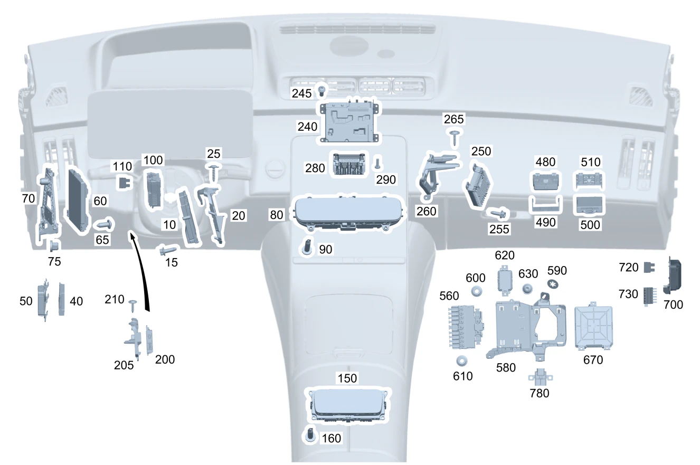

| № | Артикул | Название | Кол. | Примечание | Ограничение |
|---|---|---|---|---|---|
| 10 | A 206 900 78 12 | Блок управления | 1 | Комбинация приборов [672] ДЕТАЛЬ ПОСЛЕ УСТАН.ПРОВЕРИТЬ НА АКТУАЛЬНОСТЬ "ПРОШИВНОГО" ПО | 521/525 |
| 10 | A 206 900 12 13 | Блок управления (CONTROL UNIT) | 1 | Комбинация приборов [672] ДЕТАЛЬ ПОСЛЕ УСТАН.ПРОВЕРИТЬ НА АКТУАЛЬНОСТЬ "ПРОШИВНОГО" ПО | 521/525 |
| 10 | A 206 900 59 15 | Блок управления (CONTROL UNIT) | 1 | Комбинация приборов [672] ДЕТАЛЬ ПОСЛЕ УСТАН.ПРОВЕРИТЬ НА АКТУАЛЬНОСТЬ "ПРОШИВНОГО" ПО | (521/525)+(PXN/001) |
| 10 | A 206 900 14 16 | Блок управления (CONTROL UNIT) | 1 | Комбинация приборов [672] ДЕТАЛЬ ПОСЛЕ УСТАН.ПРОВЕРИТЬ НА АКТУАЛЬНОСТЬ "ПРОШИВНОГО" ПО | (521/525)+(PXN/001) |
| 10 | A 206 900 14 16 | Блок управления (CONTROL UNIT) | 1 | Комбинация приборов [672] ДЕТАЛЬ ПОСЛЕ УСТАН.ПРОВЕРИТЬ НА АКТУАЛЬНОСТЬ "ПРОШИВНОГО" ПО | 521/525 |
| 10 | A 206 900 06 18 | Блок управления (CONTROL UNIT) | 1 | Комбинация приборов [672] ДЕТАЛЬ ПОСЛЕ УСТАН.ПРОВЕРИТЬ НА АКТУАЛЬНОСТЬ "ПРОШИВНОГО" ПО | 521/525 |
| 10 | A 206 900 46 18 | Блок управления (CONTROL UNIT) | 1 | Комбинация приборов [672] ДЕТАЛЬ ПОСЛЕ УСТАН.ПРОВЕРИТЬ НА АКТУАЛЬНОСТЬ "ПРОШИВНОГО" ПО | 521/525 |
| 10 | A 223 900 44 25 | Блок управления (CONTROL UNIT) | 1 | Комбинация приборов [672] ДЕТАЛЬ ПОСЛЕ УСТАН.ПРОВЕРИТЬ НА АКТУАЛЬНОСТЬ "ПРОШИВНОГО" ПО | (521/525)+444 |
| 10 | A 223 900 47 26 | Блок управления (CONTROL UNIT) | 1 | Комбинация приборов [672] ДЕТАЛЬ ПОСЛЕ УСТАН.ПРОВЕРИТЬ НА АКТУАЛЬНОСТЬ "ПРОШИВНОГО" ПО | (521/525)+444 |
| 10 | A 223 900 44 29 | Блок управления (CONTROL UNIT) | 1 | Комбинация приборов [672] ДЕТАЛЬ ПОСЛЕ УСТАН.ПРОВЕРИТЬ НА АКТУАЛЬНОСТЬ "ПРОШИВНОГО" ПО | (521/525)+444+(PXN/001) |
| 10 | A 223 900 46 30 | Блок управления (CONTROL UNIT) | 1 | Комбинация приборов [672] ДЕТАЛЬ ПОСЛЕ УСТАН.ПРОВЕРИТЬ НА АКТУАЛЬНОСТЬ "ПРОШИВНОГО" ПО | (521/525)+444+(PXN/001) |
| 10 | A 223 900 46 30 | Блок управления (CONTROL UNIT) | 1 | Комбинация приборов [672] ДЕТАЛЬ ПОСЛЕ УСТАН.ПРОВЕРИТЬ НА АКТУАЛЬНОСТЬ "ПРОШИВНОГО" ПО | (521/525)+444 |
| 10 | A 223 900 54 32 | Блок управления (CONTROL UNIT) | 1 | Комбинация приборов [672] ДЕТАЛЬ ПОСЛЕ УСТАН.ПРОВЕРИТЬ НА АКТУАЛЬНОСТЬ "ПРОШИВНОГО" ПО | (521/525)+444 |
| 10 | A 223 900 19 33 | Блок управления (CONTROL UNIT) | 1 | Комбинация приборов [672] ДЕТАЛЬ ПОСЛЕ УСТАН.ПРОВЕРИТЬ НА АКТУАЛЬНОСТЬ "ПРОШИВНОГО" ПО | (521/525)+444 |
| 10 | A 206 900 14 16 | Блок управления (CONTROL UNIT) | 1 | Комбинация приборов [672] ДЕТАЛЬ ПОСЛЕ УСТАН.ПРОВЕРИТЬ НА АКТУАЛЬНОСТЬ "ПРОШИВНОГО" ПО | (521/525)+803 |
| 10 | A 206 900 07 18 | Блок управления (CONTROL UNIT) | 1 | Комбинация приборов [672] ДЕТАЛЬ ПОСЛЕ УСТАН.ПРОВЕРИТЬ НА АКТУАЛЬНОСТЬ "ПРОШИВНОГО" ПО | (521/525)+803 |
| 10 | A 206 900 33 18 | Блок управления (CONTROL UNIT) | 1 | Комбинация приборов [672] ДЕТАЛЬ ПОСЛЕ УСТАН.ПРОВЕРИТЬ НА АКТУАЛЬНОСТЬ "ПРОШИВНОГО" ПО | (521/525)+803 |
| 10 | A 206 900 93 19 | Блок управления (CONTROL UNIT) | 1 | Комбинация приборов [672] ДЕТАЛЬ ПОСЛЕ УСТАН.ПРОВЕРИТЬ НА АКТУАЛЬНОСТЬ "ПРОШИВНОГО" ПО | (521/525)+803 |
| 10 | A 206 900 93 19 | Блок управления (CONTROL UNIT) | 1 | Комбинация приборов [672] ДЕТАЛЬ ПОСЛЕ УСТАН.ПРОВЕРИТЬ НА АКТУАЛЬНОСТЬ "ПРОШИВНОГО" ПО | (521/525) |
| 10 | A 206 900 84 20 | Блок управления (CONTROL UNIT) | 1 | Комбинация приборов [672] ДЕТАЛЬ ПОСЛЕ УСТАН.ПРОВЕРИТЬ НА АКТУАЛЬНОСТЬ "ПРОШИВНОГО" ПО | (521/525) |
| 10 | A 223 900 46 30 | Блок управления (CONTROL UNIT) | 1 | Комбинация приборов [672] ДЕТАЛЬ ПОСЛЕ УСТАН.ПРОВЕРИТЬ НА АКТУАЛЬНОСТЬ "ПРОШИВНОГО" ПО | (521/525)+444+803 |
| 10 | A 223 900 64 32 | Блок управления | 1 | Комбинация приборов [672] ДЕТАЛЬ ПОСЛЕ УСТАН.ПРОВЕРИТЬ НА АКТУАЛЬНОСТЬ "ПРОШИВНОГО" ПО | (521/525)+444+803 |
| 10 | A 223 900 89 32 | Блок управления (CONTROL UNIT) | 1 | Комбинация приборов [672] ДЕТАЛЬ ПОСЛЕ УСТАН.ПРОВЕРИТЬ НА АКТУАЛЬНОСТЬ "ПРОШИВНОГО" ПО | (521/525)+444+803 |
| 10 | A 223 900 91 34 | Блок управления (CONTROL UNIT) | 1 | Комбинация приборов [672] ДЕТАЛЬ ПОСЛЕ УСТАН.ПРОВЕРИТЬ НА АКТУАЛЬНОСТЬ "ПРОШИВНОГО" ПО | (521/525)+444+803 |
| 10 | A 223 900 91 34 | Блок управления (CONTROL UNIT) | 1 | Комбинация приборов [672] ДЕТАЛЬ ПОСЛЕ УСТАН.ПРОВЕРИТЬ НА АКТУАЛЬНОСТЬ "ПРОШИВНОГО" ПО | (521/525)+444 |
| 10 | A 223 900 80 36 | Блок управления (CONTROL UNIT) | 1 | Комбинация приборов [672] ДЕТАЛЬ ПОСЛЕ УСТАН.ПРОВЕРИТЬ НА АКТУАЛЬНОСТЬ "ПРОШИВНОГО" ПО | (521/525)+444 |
| 10 | A 206 900 31 19 | Блок управления (CONTROL UNIT) | 1 | Комбинация приборов [672] ДЕТАЛЬ ПОСЛЕ УСТАН.ПРОВЕРИТЬ НА АКТУАЛЬНОСТЬ "ПРОШИВНОГО" ПО | (521/525)+(803+053) |
| 10 | A 206 900 84 20 | Блок управления (CONTROL UNIT) | 1 | Комбинация приборов [672] ДЕТАЛЬ ПОСЛЕ УСТАН.ПРОВЕРИТЬ НА АКТУАЛЬНОСТЬ "ПРОШИВНОГО" ПО | (521/525)+(803+053) |
| 10 | A 206 900 84 20 | Блок управления (CONTROL UNIT) | 1 | Комбинация приборов [672] ДЕТАЛЬ ПОСЛЕ УСТАН.ПРОВЕРИТЬ НА АКТУАЛЬНОСТЬ "ПРОШИВНОГО" ПО | (521/525) |
| 10 | A 206 900 29 21 | Блок управления (CONTROL UNIT) | 1 | Комбинация приборов [672] ДЕТАЛЬ ПОСЛЕ УСТАН.ПРОВЕРИТЬ НА АКТУАЛЬНОСТЬ "ПРОШИВНОГО" ПО | (521/525) |
| 10 | A 223 900 28 34 | Блок управления (CONTROL UNIT) | 1 | Комбинация приборов [672] ДЕТАЛЬ ПОСЛЕ УСТАН.ПРОВЕРИТЬ НА АКТУАЛЬНОСТЬ "ПРОШИВНОГО" ПО | (521/525)+444+(803+053) |
| 10 | A 223 900 80 36 | Блок управления (CONTROL UNIT) | 1 | Комбинация приборов [672] ДЕТАЛЬ ПОСЛЕ УСТАН.ПРОВЕРИТЬ НА АКТУАЛЬНОСТЬ "ПРОШИВНОГО" ПО | (521/525)+444+(803+053) |
| 10 | A 223 900 80 36 | Блок управления (CONTROL UNIT) | 1 | Комбинация приборов [672] ДЕТАЛЬ ПОСЛЕ УСТАН.ПРОВЕРИТЬ НА АКТУАЛЬНОСТЬ "ПРОШИВНОГО" ПО | (521/525)+444 |
| 10 | A 223 900 90 37 | Блок управления (CONTROL UNIT) | 1 | Комбинация приборов [672] ДЕТАЛЬ ПОСЛЕ УСТАН.ПРОВЕРИТЬ НА АКТУАЛЬНОСТЬ "ПРОШИВНОГО" ПО | (521/525)+444 |
| 10 | A 206 900 84 20 | Блок управления (CONTROL UNIT) | 1 | Комбинация приборов [672] ДЕТАЛЬ ПОСЛЕ УСТАН.ПРОВЕРИТЬ НА АКТУАЛЬНОСТЬ "ПРОШИВНОГО" ПО | (521/525)+804 |
| 10 | A 206 900 36 20 | Блок управления (CONTROL UNIT) | 1 | Комбинация приборов [672] ДЕТАЛЬ ПОСЛЕ УСТАН.ПРОВЕРИТЬ НА АКТУАЛЬНОСТЬ "ПРОШИВНОГО" ПО | (521/525)+804 |
| 10 | A 206 900 29 21 | Блок управления (CONTROL UNIT) | 1 | Комбинация приборов [672] ДЕТАЛЬ ПОСЛЕ УСТАН.ПРОВЕРИТЬ НА АКТУАЛЬНОСТЬ "ПРОШИВНОГО" ПО | (521/525)+804 |
| 10 | A 206 900 29 21 | Блок управления (CONTROL UNIT) | 1 | Комбинация приборов [672] ДЕТАЛЬ ПОСЛЕ УСТАН.ПРОВЕРИТЬ НА АКТУАЛЬНОСТЬ "ПРОШИВНОГО" ПО | (521/525) |
| 10 | A 206 900 86 21 | Блок управления (CONTROL UNIT) | 1 | Комбинация приборов [672] ДЕТАЛЬ ПОСЛЕ УСТАН.ПРОВЕРИТЬ НА АКТУАЛЬНОСТЬ "ПРОШИВНОГО" ПО | (521/525) |
| 10 | A 206 900 97 22 | Блок управления (CONTROL UNIT) | 1 | Комбинация приборов [672] ДЕТАЛЬ ПОСЛЕ УСТАН.ПРОВЕРИТЬ НА АКТУАЛЬНОСТЬ "ПРОШИВНОГО" ПО | 521/525 |
| 10 | A 223 900 80 36 | Блок управления (CONTROL UNIT) | 1 | Комбинация приборов [672] ДЕТАЛЬ ПОСЛЕ УСТАН.ПРОВЕРИТЬ НА АКТУАЛЬНОСТЬ "ПРОШИВНОГО" ПО | (521/525)+444+804 |
| 10 | A 223 900 83 35 | Блок управления (CONTROL UNIT) | 1 | Комбинация приборов [672] ДЕТАЛЬ ПОСЛЕ УСТАН.ПРОВЕРИТЬ НА АКТУАЛЬНОСТЬ "ПРОШИВНОГО" ПО | (521/525)+444+804 |
| 10 | A 223 900 90 37 | Блок управления (CONTROL UNIT) | 1 | Комбинация приборов [672] ДЕТАЛЬ ПОСЛЕ УСТАН.ПРОВЕРИТЬ НА АКТУАЛЬНОСТЬ "ПРОШИВНОГО" ПО | (521/525)+444+804 |
| 10 | A 223 900 90 37 | Блок управления (CONTROL UNIT) | 1 | Комбинация приборов [672] ДЕТАЛЬ ПОСЛЕ УСТАН.ПРОВЕРИТЬ НА АКТУАЛЬНОСТЬ "ПРОШИВНОГО" ПО | (521/525)+444 |
| 10 | A 223 900 25 39 | Блок управления (CONTROL UNIT) | 1 | Комбинация приборов [672] ДЕТАЛЬ ПОСЛЕ УСТАН.ПРОВЕРИТЬ НА АКТУАЛЬНОСТЬ "ПРОШИВНОГО" ПО | (521/525)+444 |
| 10 | A 223 900 89 40 | Блок управления (CONTROL UNIT) | 1 | Комбинация приборов [672] ДЕТАЛЬ ПОСЛЕ УСТАН.ПРОВЕРИТЬ НА АКТУАЛЬНОСТЬ "ПРОШИВНОГО" ПО | (521/525)+444 |
| 15 | N 000000 008923 | Винт с 6-гранной головкой (HEXAGON HEAD BOLT) | 1 | Крепление блока управления; M6X20 | 521/525 |
| 20 | A 206 545 68 00 | Держатель (HOLDER) | 1 | Блок управления Рулевое управление: Влево | |
| 20 | A 206 545 68 00 | Держатель (HOLDER) | 1 | Блок управления Рулевое управление: Влево | 521/525 |
| 20 | A 206 545 69 00 | Держатель (HOLDER) | 1 | Блок управления Рулевое управление: Вправо | |
| 20 | A 206 545 69 00 | Держатель (HOLDER) | 1 | Блок управления Рулевое управление: Вправо | 521/525 |
| 25 | A 000 990 70 06 | Винт со полукругл.головой (PAN HEAD SCREW W COLLAR) | 3 | Крепление держателя; 5X20 | |
| 25 | A 000 990 70 06 | Винт со полукругл.головой (PAN HEAD SCREW W COLLAR) | 3 | Крепление держателя; 5X20 | 521/525 |
| 40 | A 223 900 17 01 | Блок управления (CONTROL UNIT) | 1 | Трансмиссия [672] ДЕТАЛЬ ПОСЛЕ УСТАН.ПРОВЕРИТЬ НА АКТУАЛЬНОСТЬ "ПРОШИВНОГО" ПО | M254 |
| 40 | A 223 900 10 23 | Блок управления (CONTROL UNIT) | 1 | Трансмиссия [672] ДЕТАЛЬ ПОСЛЕ УСТАН.ПРОВЕРИТЬ НА АКТУАЛЬНОСТЬ "ПРОШИВНОГО" ПО | M254 |
| 40 | A 223 900 10 23 | Блок управления (CONTROL UNIT) | 1 | Трансмиссия [672] ДЕТАЛЬ ПОСЛЕ УСТАН.ПРОВЕРИТЬ НА АКТУАЛЬНОСТЬ "ПРОШИВНОГО" ПО | M254+835 |
| 40 | A 223 900 50 31 | Блок управления (CONTROL UNIT) | 1 | Трансмиссия [672] ДЕТАЛЬ ПОСЛЕ УСТАН.ПРОВЕРИТЬ НА АКТУАЛЬНОСТЬ "ПРОШИВНОГО" ПО | M254 |
| 40 | A 223 900 14 09 | Блок управления | 1 | Трансмиссия [672] ДЕТАЛЬ ПОСЛЕ УСТАН.ПРОВЕРИТЬ НА АКТУАЛЬНОСТЬ "ПРОШИВНОГО" ПО | M254+835+16T/M254+835+16T+29T |
| 40 | A 223 900 14 09 | Блок управления | 1 | Трансмиссия [672] ДЕТАЛЬ ПОСЛЕ УСТАН.ПРОВЕРИТЬ НА АКТУАЛЬНОСТЬ "ПРОШИВНОГО" ПО | (M254/M654)+16T/(M254/M654)+16T+29T/M654+ME10+16T/M654+ME10+16T+29T |
| 40 | A 223 900 69 31 | Блок управления (CONTROL UNIT) | 1 | Трансмиссия [672] ДЕТАЛЬ ПОСЛЕ УСТАН.ПРОВЕРИТЬ НА АКТУАЛЬНОСТЬ "ПРОШИВНОГО" ПО | (M254/M254+835)+803 |
| 40 | A 223 900 69 31 | Блок управления (CONTROL UNIT) | 1 | Трансмиссия [672] ДЕТАЛЬ ПОСЛЕ УСТАН.ПРОВЕРИТЬ НА АКТУАЛЬНОСТЬ "ПРОШИВНОГО" ПО | M254/M254+835 |
| 40 | A 223 900 03 43 | Блок управления (CONTROL UNIT) | 1 | Трансмиссия [672] ДЕТАЛЬ ПОСЛЕ УСТАН.ПРОВЕРИТЬ НА АКТУАЛЬНОСТЬ "ПРОШИВНОГО" ПО | M254/M254+835 |
| 40 | A 223 900 14 09 | Блок управления | 1 | Трансмиссия [672] ДЕТАЛЬ ПОСЛЕ УСТАН.ПРОВЕРИТЬ НА АКТУАЛЬНОСТЬ "ПРОШИВНОГО" ПО | M254+(16T/29T) |
| 40 | A 178 900 70 00 | Блок управления (CONTROL UNIT) | 1 | Трансмиссия [672] ДЕТАЛЬ ПОСЛЕ УСТАН.ПРОВЕРИТЬ НА АКТУАЛЬНОСТЬ "ПРОШИВНОГО" ПО | (M654/M254)+1U2 |
| 40 | A 178 900 70 00 | Блок управления (CONTROL UNIT) | 1 | Трансмиссия [672] ДЕТАЛЬ ПОСЛЕ УСТАН.ПРОВЕРИТЬ НА АКТУАЛЬНОСТЬ "ПРОШИВНОГО" ПО | (M654/M254/M256)+1U2 |
| 50 | A 206 545 04 00 | Держатель (HOLDER) | 1 | Блок управления трансмиссией | |
| 50 | A 206 545 04 00 | Держатель (HOLDER) | 1 | Блок управления трансмиссией Рулевое управление: Влево | |
| 50 | A 206 545 04 00 | Держатель (HOLDER) | 1 | Блок управления трансмиссией Рулевое управление: Вправо | |
| 60 | A 206 900 18 12 | Блок управления | 1 | Модуль обработки сигналов и управления [672] ДЕТАЛЬ ПОСЛЕ УСТАН.ПРОВЕРИТЬ НА АКТУАЛЬНОСТЬ "ПРОШИВНОГО" ПО | |
| 60 | A 206 900 19 12 | Блок управления | 1 | Модуль обработки сигналов и управления [672] ДЕТАЛЬ ПОСЛЕ УСТАН.ПРОВЕРИТЬ НА АКТУАЛЬНОСТЬ "ПРОШИВНОГО" ПО | |
| 60 | A 206 900 29 13 | Блок управления (CONTROL UNIT) | 1 | Модуль обработки сигналов и управления [672] ДЕТАЛЬ ПОСЛЕ УСТАН.ПРОВЕРИТЬ НА АКТУАЛЬНОСТЬ "ПРОШИВНОГО" ПО | |
| 60 | A 206 900 30 13 | Блок управления (CONTROL UNIT) | 1 | Модуль обработки сигналов и управления | |
| 60 | A 206 900 20 12 | Блок управления | 1 | Модуль обработки сигналов и управления Рулевое управление: Влево [672] ДЕТАЛЬ ПОСЛЕ УСТАН.ПРОВЕРИТЬ НА АКТУАЛЬНОСТЬ "ПРОШИВНОГО" ПО | 875 |
| 60 | A 206 900 21 12 | Блок управления | 1 | Модуль обработки сигналов и управления Рулевое управление: Влево [672] ДЕТАЛЬ ПОСЛЕ УСТАН.ПРОВЕРИТЬ НА АКТУАЛЬНОСТЬ "ПРОШИВНОГО" ПО | 875 |
| 60 | A 206 900 31 13 | Блок управления (CONTROL UNIT) | 1 | Модуль обработки сигналов и управления Рулевое управление: Влево [672] ДЕТАЛЬ ПОСЛЕ УСТАН.ПРОВЕРИТЬ НА АКТУАЛЬНОСТЬ "ПРОШИВНОГО" ПО | 875 |
| 60 | A 206 900 32 13 | Блок управления | 1 | Модуль обработки сигналов и управления Рулевое управление: Влево [672] ДЕТАЛЬ ПОСЛЕ УСТАН.ПРОВЕРИТЬ НА АКТУАЛЬНОСТЬ "ПРОШИВНОГО" ПО | 875 |
| 60 | A 206 900 25 12 | Блок управления | 1 | Модуль обработки сигналов и управления VAR 8 [672] ДЕТАЛЬ ПОСЛЕ УСТАН.ПРОВЕРИТЬ НА АКТУАЛЬНОСТЬ "ПРОШИВНОГО" ПО | |
| 60 | A 206 900 22 12 | Блок управления | 1 | Модуль обработки сигналов и управления [672] ДЕТАЛЬ ПОСЛЕ УСТАН.ПРОВЕРИТЬ НА АКТУАЛЬНОСТЬ "ПРОШИВНОГО" ПО | (ME10/228/581/U25/U45)/(ME10/228/581/U25/U45)+875 |
| 60 | A 206 900 23 12 | Блок управления | 1 | Модуль обработки сигналов и управления [672] ДЕТАЛЬ ПОСЛЕ УСТАН.ПРОВЕРИТЬ НА АКТУАЛЬНОСТЬ "ПРОШИВНОГО" ПО | (ME10/228/581/U25/U45)/(ME10/228/581/U25/U45)+875 |
| 60 | A 206 900 33 13 | Блок управления | 1 | Модуль обработки сигналов и управления [672] ДЕТАЛЬ ПОСЛЕ УСТАН.ПРОВЕРИТЬ НА АКТУАЛЬНОСТЬ "ПРОШИВНОГО" ПО | (ME10/228/581/U25/U45)/(ME10/228/581/U25/U45)+875 |
| 60 | A 206 900 34 13 | Блок управления (CONTROL UNIT) | 1 | Модуль обработки сигналов и управления [672] ДЕТАЛЬ ПОСЛЕ УСТАН.ПРОВЕРИТЬ НА АКТУАЛЬНОСТЬ "ПРОШИВНОГО" ПО | (ME10/228/581/U25/U45)/(ME10/228/581/U25/U45)+875 |
| 60 | A 206 900 24 12 | Блок управления | 1 | Модуль обработки сигналов и управления [672] ДЕТАЛЬ ПОСЛЕ УСТАН.ПРОВЕРИТЬ НА АКТУАЛЬНОСТЬ "ПРОШИВНОГО" ПО | 891/891+((ME10/228/581/U25/U45/875)/(ME10/228/581/U25/U45)+875) |
| 60 | A 206 900 25 12 | Блок управления | 1 | Модуль обработки сигналов и управления [672] ДЕТАЛЬ ПОСЛЕ УСТАН.ПРОВЕРИТЬ НА АКТУАЛЬНОСТЬ "ПРОШИВНОГО" ПО | 891/891+((ME10/228/581/U25/U45/875)/(ME10/228/581/U25/U45)+875) |
| 60 | A 206 900 35 13 | Блок управления (CONTROL UNIT) | 1 | Модуль обработки сигналов и управления [672] ДЕТАЛЬ ПОСЛЕ УСТАН.ПРОВЕРИТЬ НА АКТУАЛЬНОСТЬ "ПРОШИВНОГО" ПО | 891/891+((ME10/228/581/U25/U45/875)/(ME10/228/581/U25/U45)+875) |
| 60 | A 206 900 36 13 | Блок управления (CONTROL UNIT) | 1 | Модуль обработки сигналов и управления [672] ДЕТАЛЬ ПОСЛЕ УСТАН.ПРОВЕРИТЬ НА АКТУАЛЬНОСТЬ "ПРОШИВНОГО" ПО | 891/891+((ME10/228/581/U25/U45/875)/(ME10/228/581/U25/U45)+875) |
| 60 | A 206 900 64 15 | Блок управления | 1 | Модуль обработки сигналов и управления [672] ДЕТАЛЬ ПОСЛЕ УСТАН.ПРОВЕРИТЬ НА АКТУАЛЬНОСТЬ "ПРОШИВНОГО" ПО | 803 |
| 60 | A 206 900 13 17 | Блок управления | 1 | Модуль обработки сигналов и управления [672] ДЕТАЛЬ ПОСЛЕ УСТАН.ПРОВЕРИТЬ НА АКТУАЛЬНОСТЬ "ПРОШИВНОГО" ПО | 803 |
| 60 | A 206 900 23 18 | Блок управления (CONTROL UNIT) | 1 | Модуль обработки сигналов и управления [672] ДЕТАЛЬ ПОСЛЕ УСТАН.ПРОВЕРИТЬ НА АКТУАЛЬНОСТЬ "ПРОШИВНОГО" ПО | 803 |
| 60 | A 206 900 23 18 | Блок управления (CONTROL UNIT) | 1 | Модуль обработки сигналов и управления [672] ДЕТАЛЬ ПОСЛЕ УСТАН.ПРОВЕРИТЬ НА АКТУАЛЬНОСТЬ "ПРОШИВНОГО" ПО | |
| 60 | A 206 900 65 15 | Блок управления | 1 | Модуль обработки сигналов и управления Рулевое управление: Влево [672] ДЕТАЛЬ ПОСЛЕ УСТАН.ПРОВЕРИТЬ НА АКТУАЛЬНОСТЬ "ПРОШИВНОГО" ПО | 803+875 |
| 60 | A 206 900 14 17 | Блок управления | 1 | Модуль обработки сигналов и управления Рулевое управление: Влево [672] ДЕТАЛЬ ПОСЛЕ УСТАН.ПРОВЕРИТЬ НА АКТУАЛЬНОСТЬ "ПРОШИВНОГО" ПО | 803+875 |
| 60 | A 206 900 24 18 | Блок управления | 1 | Модуль обработки сигналов и управления Рулевое управление: Влево [672] ДЕТАЛЬ ПОСЛЕ УСТАН.ПРОВЕРИТЬ НА АКТУАЛЬНОСТЬ "ПРОШИВНОГО" ПО | 803+875 |
| 60 | A 206 900 24 18 | Блок управления | 1 | Модуль обработки сигналов и управления Рулевое управление: Влево [672] ДЕТАЛЬ ПОСЛЕ УСТАН.ПРОВЕРИТЬ НА АКТУАЛЬНОСТЬ "ПРОШИВНОГО" ПО | 875 |
| 60 | A 206 900 66 15 | Блок управления | 1 | Модуль обработки сигналов и управления [672] ДЕТАЛЬ ПОСЛЕ УСТАН.ПРОВЕРИТЬ НА АКТУАЛЬНОСТЬ "ПРОШИВНОГО" ПО | 803+((ME10/228/581/U25/U45)/(ME10/228/581/U25/U45)+875) |
| 60 | A 206 900 15 17 | Блок управления | 1 | Модуль обработки сигналов и управления [672] ДЕТАЛЬ ПОСЛЕ УСТАН.ПРОВЕРИТЬ НА АКТУАЛЬНОСТЬ "ПРОШИВНОГО" ПО | 803+((ME10/228/581/U25/U45)/(ME10/228/581/U25/U45)+875) |
| 60 | A 206 900 25 18 | Блок управления (CONTROL UNIT) | 1 | Модуль обработки сигналов и управления [672] ДЕТАЛЬ ПОСЛЕ УСТАН.ПРОВЕРИТЬ НА АКТУАЛЬНОСТЬ "ПРОШИВНОГО" ПО | 803+((ME10/228/581/U25/U45)/(ME10/228/581/U25/U45)+875) |
| 60 | A 206 900 25 18 | Блок управления (CONTROL UNIT) | 1 | Модуль обработки сигналов и управления [672] ДЕТАЛЬ ПОСЛЕ УСТАН.ПРОВЕРИТЬ НА АКТУАЛЬНОСТЬ "ПРОШИВНОГО" ПО | ((ME10/228/581/U25/U45)/(ME10/228/581/U25/U45)+875) |
| 60 | A 206 900 67 15 | Блок управления (CONTROL UNIT) | 1 | Модуль обработки сигналов и управления [672] ДЕТАЛЬ ПОСЛЕ УСТАН.ПРОВЕРИТЬ НА АКТУАЛЬНОСТЬ "ПРОШИВНОГО" ПО | 803+(891/891+((ME10/228/581/U25/U45/875)/(ME10/228/581/U25/U45)+875)) |
| 60 | A 206 900 16 17 | Блок управления (CONTROL UNIT) | 1 | Модуль обработки сигналов и управления [672] ДЕТАЛЬ ПОСЛЕ УСТАН.ПРОВЕРИТЬ НА АКТУАЛЬНОСТЬ "ПРОШИВНОГО" ПО | 803+(891/891+((ME10/228/581/U25/U45/875)/(ME10/228/581/U25/U45)+875)) |
| 60 | A 206 900 26 18 | Блок управления (CONTROL UNIT) | 1 | Модуль обработки сигналов и управления [672] ДЕТАЛЬ ПОСЛЕ УСТАН.ПРОВЕРИТЬ НА АКТУАЛЬНОСТЬ "ПРОШИВНОГО" ПО | 803+(891/891+((ME10/228/581/U25/U45/875)/(ME10/228/581/U25/U45)+875)) |
| 60 | A 206 900 26 18 | Блок управления (CONTROL UNIT) | 1 | Модуль обработки сигналов и управления [672] ДЕТАЛЬ ПОСЛЕ УСТАН.ПРОВЕРИТЬ НА АКТУАЛЬНОСТЬ "ПРОШИВНОГО" ПО | (891/891+((ME10/228/581/U25/U45/875)/(ME10/228/581/U25/U45)+875)) |
| 60 | A 206 900 79 19 | Блок управления (CONTROL UNIT) | 1 | Модуль обработки сигналов и управления [672] ДЕТАЛЬ ПОСЛЕ УСТАН.ПРОВЕРИТЬ НА АКТУАЛЬНОСТЬ "ПРОШИВНОГО" ПО | (803+053) |
| 60 | A 206 900 79 19 | Блок управления (CONTROL UNIT) | 1 | Модуль обработки сигналов и управления [672] ДЕТАЛЬ ПОСЛЕ УСТАН.ПРОВЕРИТЬ НА АКТУАЛЬНОСТЬ "ПРОШИВНОГО" ПО | |
| 60 | A 206 900 80 19 | Блок управления (CONTROL UNIT) | 1 | Модуль обработки сигналов и управления Рулевое управление: Влево [672] ДЕТАЛЬ ПОСЛЕ УСТАН.ПРОВЕРИТЬ НА АКТУАЛЬНОСТЬ "ПРОШИВНОГО" ПО | (803+053)+875 |
| 60 | A 206 900 80 19 | Блок управления (CONTROL UNIT) | 1 | Модуль обработки сигналов и управления Рулевое управление: Влево [672] ДЕТАЛЬ ПОСЛЕ УСТАН.ПРОВЕРИТЬ НА АКТУАЛЬНОСТЬ "ПРОШИВНОГО" ПО | 875 |
| 60 | A 206 900 81 19 | Блок управления (CONTROL UNIT) | 1 | Модуль обработки сигналов и управления [672] ДЕТАЛЬ ПОСЛЕ УСТАН.ПРОВЕРИТЬ НА АКТУАЛЬНОСТЬ "ПРОШИВНОГО" ПО | (803+053)+((ME10/228/581/U25/U45)/(ME10/228/581/U25/U45)+875) |
| 60 | A 206 900 81 19 | Блок управления (CONTROL UNIT) | 1 | Модуль обработки сигналов и управления [672] ДЕТАЛЬ ПОСЛЕ УСТАН.ПРОВЕРИТЬ НА АКТУАЛЬНОСТЬ "ПРОШИВНОГО" ПО | ((ME10/228/581/U25/U45)/(ME10/228/581/U25/U45)+875) |
| 60 | A 206 900 82 19 | Блок управления (CONTROL UNIT) | 1 | Модуль обработки сигналов и управления [672] ДЕТАЛЬ ПОСЛЕ УСТАН.ПРОВЕРИТЬ НА АКТУАЛЬНОСТЬ "ПРОШИВНОГО" ПО | (803+053)+(891/891+((ME10/228/581/U25/U45/875)/(ME10/228/581/U25/U45)+875)) |
| 60 | A 206 900 82 19 | Блок управления (CONTROL UNIT) | 1 | Модуль обработки сигналов и управления [672] ДЕТАЛЬ ПОСЛЕ УСТАН.ПРОВЕРИТЬ НА АКТУАЛЬНОСТЬ "ПРОШИВНОГО" ПО | (891/891+((ME10/228/581/U25/U45/875)/(ME10/228/581/U25/U45)+875)) |
| 60 | A 206 900 48 18 | Блок управления | 1 | Модуль обработки сигналов и управления [672] ДЕТАЛЬ ПОСЛЕ УСТАН.ПРОВЕРИТЬ НА АКТУАЛЬНОСТЬ "ПРОШИВНОГО" ПО | 804 |
| 60 | A 206 900 48 18 | Блок управления | 1 | Модуль обработки сигналов и управления [672] ДЕТАЛЬ ПОСЛЕ УСТАН.ПРОВЕРИТЬ НА АКТУАЛЬНОСТЬ "ПРОШИВНОГО" ПО | |
| 60 | A 206 900 49 18 | Блок управления (CONTROL UNIT) | 1 | Модуль обработки сигналов и управления Рулевое управление: Влево [672] ДЕТАЛЬ ПОСЛЕ УСТАН.ПРОВЕРИТЬ НА АКТУАЛЬНОСТЬ "ПРОШИВНОГО" ПО | 804+875 |
| 60 | A 206 900 49 18 | Блок управления (CONTROL UNIT) | 1 | Модуль обработки сигналов и управления Рулевое управление: Влево [672] ДЕТАЛЬ ПОСЛЕ УСТАН.ПРОВЕРИТЬ НА АКТУАЛЬНОСТЬ "ПРОШИВНОГО" ПО | 875 |
| 60 | A 206 900 15 20 | Блок управления (CONTROL UNIT) | 1 | Модуль обработки сигналов и управления [672] ДЕТАЛЬ ПОСЛЕ УСТАН.ПРОВЕРИТЬ НА АКТУАЛЬНОСТЬ "ПРОШИВНОГО" ПО | 804+((ME10/228/581/U25/U45)/(ME10/228/581/U25/U45)+875) |
| 60 | A 206 900 15 20 | Блок управления (CONTROL UNIT) | 1 | Модуль обработки сигналов и управления [672] ДЕТАЛЬ ПОСЛЕ УСТАН.ПРОВЕРИТЬ НА АКТУАЛЬНОСТЬ "ПРОШИВНОГО" ПО | ((ME10/228/581/U25/U45)/(ME10/228/581/U25/U45)+875) |
| 60 | A 206 900 16 20 | Блок управления (CONTROL UNIT) | 1 | Модуль обработки сигналов и управления [672] ДЕТАЛЬ ПОСЛЕ УСТАН.ПРОВЕРИТЬ НА АКТУАЛЬНОСТЬ "ПРОШИВНОГО" ПО | 804+(891/891+((ME10/228/581/U25/U45/875)/(ME10/228/581/U25/U45)+875)) |
| 60 | A 206 900 16 20 | Блок управления (CONTROL UNIT) | 1 | Модуль обработки сигналов и управления [672] ДЕТАЛЬ ПОСЛЕ УСТАН.ПРОВЕРИТЬ НА АКТУАЛЬНОСТЬ "ПРОШИВНОГО" ПО | (891/891+((ME10/228/581/U25/U45/875)/(ME10/228/581/U25/U45)+875)) |
| 60 | A 206 900 78 21 | Блок управления | 1 | Модуль обработки сигналов и управления [672] ДЕТАЛЬ ПОСЛЕ УСТАН.ПРОВЕРИТЬ НА АКТУАЛЬНОСТЬ "ПРОШИВНОГО" ПО | 805/806 |
| 60 | A 206 900 79 21 | Блок управления | 1 | Модуль обработки сигналов и управления Рулевое управление: Влево [672] ДЕТАЛЬ ПОСЛЕ УСТАН.ПРОВЕРИТЬ НА АКТУАЛЬНОСТЬ "ПРОШИВНОГО" ПО | (805/806)+875 |
| 60 | A 206 900 80 21 | Блок управления | 1 | Модуль обработки сигналов и управления [672] ДЕТАЛЬ ПОСЛЕ УСТАН.ПРОВЕРИТЬ НА АКТУАЛЬНОСТЬ "ПРОШИВНОГО" ПО | (805/806)+(((ME10/228/581/U25/U45)/(ME10/228/581/U25/U45)+875)) |
| 60 | A 206 900 81 21 | Блок управления (CONTROL UNIT) | 1 | Модуль обработки сигналов и управления [672] ДЕТАЛЬ ПОСЛЕ УСТАН.ПРОВЕРИТЬ НА АКТУАЛЬНОСТЬ "ПРОШИВНОГО" ПО | (805/806)+((891/891+((ME10/228/581/U25/U45/875)/(ME10/228/581/U25/U45)+875))) |
| 60 | A 206 900 08 24 | Блок управления | 1 | Модуль обработки сигналов и управления [672] ДЕТАЛЬ ПОСЛЕ УСТАН.ПРОВЕРИТЬ НА АКТУАЛЬНОСТЬ "ПРОШИВНОГО" ПО | 805/806 |
| 60 | A 206 900 08 24 | Блок управления | 1 | Модуль обработки сигналов и управления [672] ДЕТАЛЬ ПОСЛЕ УСТАН.ПРОВЕРИТЬ НА АКТУАЛЬНОСТЬ "ПРОШИВНОГО" ПО | |
| 60 | A 206 900 09 24 | Блок управления | 1 | Модуль обработки сигналов и управления Рулевое управление: Влево [672] ДЕТАЛЬ ПОСЛЕ УСТАН.ПРОВЕРИТЬ НА АКТУАЛЬНОСТЬ "ПРОШИВНОГО" ПО | (805/806)+875 |
| 60 | A 206 900 09 24 | Блок управления | 1 | Модуль обработки сигналов и управления Рулевое управление: Влево [672] ДЕТАЛЬ ПОСЛЕ УСТАН.ПРОВЕРИТЬ НА АКТУАЛЬНОСТЬ "ПРОШИВНОГО" ПО | 875 |
| 60 | A 206 900 10 24 | Блок управления | 1 | Модуль обработки сигналов и управления [672] ДЕТАЛЬ ПОСЛЕ УСТАН.ПРОВЕРИТЬ НА АКТУАЛЬНОСТЬ "ПРОШИВНОГО" ПО | (805/806)+(((ME10/228/581/U25/U45)/(ME10/228/581/U25/U45)+875)) |
| 60 | A 206 900 10 24 | Блок управления | 1 | Модуль обработки сигналов и управления [672] ДЕТАЛЬ ПОСЛЕ УСТАН.ПРОВЕРИТЬ НА АКТУАЛЬНОСТЬ "ПРОШИВНОГО" ПО | ((ME10/228/581/U25/U45)/(ME10/228/581/U25/U45)+875) |
| 60 | A 206 900 10 24 | Блок управления | 1 | Модуль обработки сигналов и управления [672] ДЕТАЛЬ ПОСЛЕ УСТАН.ПРОВЕРИТЬ НА АКТУАЛЬНОСТЬ "ПРОШИВНОГО" ПО | ((ME10/228/581/U45)/(ME10/228/581/U45)+875) |
| 60 | A 206 900 11 24 | Блок управления (CONTROL UNIT) | 1 | Модуль обработки сигналов и управления [672] ДЕТАЛЬ ПОСЛЕ УСТАН.ПРОВЕРИТЬ НА АКТУАЛЬНОСТЬ "ПРОШИВНОГО" ПО | (805/806)+((891/891+((ME10/228/581/U25/U45/875)/(ME10/228/581/U25/U45)+875))) |
| 60 | A 206 900 11 24 | Блок управления (CONTROL UNIT) | 1 | Модуль обработки сигналов и управления [672] ДЕТАЛЬ ПОСЛЕ УСТАН.ПРОВЕРИТЬ НА АКТУАЛЬНОСТЬ "ПРОШИВНОГО" ПО | ((891/891+((ME10/228/581/U25/U45/875)/(ME10/228/581/U25/U45)+875))) |
| 60 | A 206 900 11 24 | Блок управления (CONTROL UNIT) | 1 | Модуль обработки сигналов и управления [672] ДЕТАЛЬ ПОСЛЕ УСТАН.ПРОВЕРИТЬ НА АКТУАЛЬНОСТЬ "ПРОШИВНОГО" ПО | ((891/891+((ME10/228/581/U45/875)/(ME10/228/581/U45)+875))) |
| 60 | A 206 900 99 23 | Блок управления | 1 | Модуль обработки сигналов и управления [672] ДЕТАЛЬ ПОСЛЕ УСТАН.ПРОВЕРИТЬ НА АКТУАЛЬНОСТЬ "ПРОШИВНОГО" ПО | 806 |
| 60 | A 206 900 99 23 | Блок управления | 1 | Модуль обработки сигналов и управления [672] ДЕТАЛЬ ПОСЛЕ УСТАН.ПРОВЕРИТЬ НА АКТУАЛЬНОСТЬ "ПРОШИВНОГО" ПО | |
| 60 | A 206 900 00 24 | Блок управления | 1 | Модуль обработки сигналов и управления Рулевое управление: Влево [672] ДЕТАЛЬ ПОСЛЕ УСТАН.ПРОВЕРИТЬ НА АКТУАЛЬНОСТЬ "ПРОШИВНОГО" ПО | 806+875 |
| 60 | A 206 900 00 24 | Блок управления | 1 | Модуль обработки сигналов и управления Рулевое управление: Влево [672] ДЕТАЛЬ ПОСЛЕ УСТАН.ПРОВЕРИТЬ НА АКТУАЛЬНОСТЬ "ПРОШИВНОГО" ПО | 875 |
| 60 | A 206 900 01 24 | Блок управления (CONTROL UNIT) | 1 | Модуль обработки сигналов и управления [672] ДЕТАЛЬ ПОСЛЕ УСТАН.ПРОВЕРИТЬ НА АКТУАЛЬНОСТЬ "ПРОШИВНОГО" ПО | 806+((ME10/228/581/U45)/((ME10/228/581/U45)+875)) |
| 60 | A 206 900 01 24 | Блок управления (CONTROL UNIT) | 1 | Модуль обработки сигналов и управления [672] ДЕТАЛЬ ПОСЛЕ УСТАН.ПРОВЕРИТЬ НА АКТУАЛЬНОСТЬ "ПРОШИВНОГО" ПО | ((ME10/228/581/U45)/((ME10/228/581/U45)+875)) |
| 60 | A 206 900 02 24 | Блок управления (CONTROL UNIT) | 1 | Модуль обработки сигналов и управления [672] ДЕТАЛЬ ПОСЛЕ УСТАН.ПРОВЕРИТЬ НА АКТУАЛЬНОСТЬ "ПРОШИВНОГО" ПО | 806+((891/891+((ME10/228/581/U45/875)/(ME10/228/581/U45)+875))) |
| 60 | A 206 900 02 24 | Блок управления (CONTROL UNIT) | 1 | Модуль обработки сигналов и управления [672] ДЕТАЛЬ ПОСЛЕ УСТАН.ПРОВЕРИТЬ НА АКТУАЛЬНОСТЬ "ПРОШИВНОГО" ПО | ((891/891+((ME10/228/581/U45/875)/(ME10/228/581/U45)+875))) |
| 60 | A 223 900 12 49 | Блок управления | 1 | Модуль обработки сигналов и управления [672] ДЕТАЛЬ ПОСЛЕ УСТАН.ПРОВЕРИТЬ НА АКТУАЛЬНОСТЬ "ПРОШИВНОГО" ПО | 807/808/29X |
| 60 | A 223 900 12 49 | Блок управления | 1 | Модуль обработки сигналов и управления [672] ДЕТАЛЬ ПОСЛЕ УСТАН.ПРОВЕРИТЬ НА АКТУАЛЬНОСТЬ "ПРОШИВНОГО" ПО | 807 |
| 60 | A 223 900 83 51 | Блок управления (CONTROL UNIT) | 1 | Модуль обработки сигналов и управления [672] ДЕТАЛЬ ПОСЛЕ УСТАН.ПРОВЕРИТЬ НА АКТУАЛЬНОСТЬ "ПРОШИВНОГО" ПО | 807 |
| 60 | A 223 900 83 51 | Блок управления (CONTROL UNIT) | 1 | Модуль обработки сигналов и управления [672] ДЕТАЛЬ ПОСЛЕ УСТАН.ПРОВЕРИТЬ НА АКТУАЛЬНОСТЬ "ПРОШИВНОГО" ПО | 807/808 |
| 60 | A 223 900 83 51 | Блок управления (CONTROL UNIT) | 1 | Модуль обработки сигналов и управления [672] ДЕТАЛЬ ПОСЛЕ УСТАН.ПРОВЕРИТЬ НА АКТУАЛЬНОСТЬ "ПРОШИВНОГО" ПО | 807 |
| 65 | A 094 990 18 05 | FILLISTER HD SCREW (PAN HEAD SCREW) | 1 | Крепление блока управления | |
| 70 | A 206 545 02 00 | Держатель (HOLDER) | 1 | Блок управления Рулевое управление: Влево | |
| 70 | A 206 545 03 00 | Держатель (HOLDER) | 1 | Блок управления Рулевое управление: Вправо | |
| 75 | A 000 990 43 62 | Пластмассовая гайка (PLASTIC NUT) | 3 | Крепление держателя | |
| 75 | A 000 990 43 62 | Пластмассовая гайка (PLASTIC NUT) | 3 | Крепление держателя | |
| 80 | A 206 900 28 12 | Блок управления | 1 | Панель управления Климат\-контроль [672] ДЕТАЛЬ ПОСЛЕ УСТАН.ПРОВЕРИТЬ НА АКТУАЛЬНОСТЬ "ПРОШИВНОГО" ПО | 579 |
| 80 | A 206 900 90 13 | Блок управления (CONTROL UNIT) | 1 | Панель управления Климат\-контроль [672] ДЕТАЛЬ ПОСЛЕ УСТАН.ПРОВЕРИТЬ НА АКТУАЛЬНОСТЬ "ПРОШИВНОГО" ПО | 579 |
| 80 | A 206 900 50 17 | Блок управления (CONTROL UNIT) | 1 | Панель управления Климат\-контроль [672] ДЕТАЛЬ ПОСЛЕ УСТАН.ПРОВЕРИТЬ НА АКТУАЛЬНОСТЬ "ПРОШИВНОГО" ПО | 579 |
| 80 | A 206 900 58 09 | Блок управления | 1 | Панель управления Климат\-контроль [672] ДЕТАЛЬ ПОСЛЕ УСТАН.ПРОВЕРИТЬ НА АКТУАЛЬНОСТЬ "ПРОШИВНОГО" ПО | 580 |
| 80 | A 206 900 29 12 | Блок управления | 1 | Панель управления Климат\-контроль [672] ДЕТАЛЬ ПОСЛЕ УСТАН.ПРОВЕРИТЬ НА АКТУАЛЬНОСТЬ "ПРОШИВНОГО" ПО | 580 |
| 80 | A 206 900 91 13 | Блок управления (CONTROL UNIT) | 1 | Панель управления Климат\-контроль [672] ДЕТАЛЬ ПОСЛЕ УСТАН.ПРОВЕРИТЬ НА АКТУАЛЬНОСТЬ "ПРОШИВНОГО" ПО | 580 |
| 80 | A 206 900 51 17 | Блок управления (CONTROL UNIT) | 1 | Панель управления Климат\-контроль [672] ДЕТАЛЬ ПОСЛЕ УСТАН.ПРОВЕРИТЬ НА АКТУАЛЬНОСТЬ "ПРОШИВНОГО" ПО | 580 |
| 80 | A 206 900 59 09 | Блок управления | 1 | Панель управления Климат\-контроль [672] ДЕТАЛЬ ПОСЛЕ УСТАН.ПРОВЕРИТЬ НА АКТУАЛЬНОСТЬ "ПРОШИВНОГО" ПО | 580+(228/ME10/P21) |
| 80 | A 206 900 30 12 | Блок управления | 1 | Панель управления Климат\-контроль [672] ДЕТАЛЬ ПОСЛЕ УСТАН.ПРОВЕРИТЬ НА АКТУАЛЬНОСТЬ "ПРОШИВНОГО" ПО | 580+(228/ME10/P21) |
| 80 | A 206 900 92 13 | Блок управления (CONTROL UNIT) | 1 | Панель управления Климат\-контроль [672] ДЕТАЛЬ ПОСЛЕ УСТАН.ПРОВЕРИТЬ НА АКТУАЛЬНОСТЬ "ПРОШИВНОГО" ПО | 580+(228/ME10/P21) |
| 80 | A 206 900 92 13 | Блок управления (CONTROL UNIT) | 1 | Панель управления Климат\-контроль [672] ДЕТАЛЬ ПОСЛЕ УСТАН.ПРОВЕРИТЬ НА АКТУАЛЬНОСТЬ "ПРОШИВНОГО" ПО | 580+(P53/228/ME10/P21) |
| 80 | A 206 900 52 17 | Блок управления (CONTROL UNIT) | 1 | Панель управления Климат\-контроль [672] ДЕТАЛЬ ПОСЛЕ УСТАН.ПРОВЕРИТЬ НА АКТУАЛЬНОСТЬ "ПРОШИВНОГО" ПО | 580+(P53/228/ME10/P21) |
| 80 | A 206 900 60 09 | Блок управления | 1 | Панель управления Климат\-контроль [672] ДЕТАЛЬ ПОСЛЕ УСТАН.ПРОВЕРИТЬ НА АКТУАЛЬНОСТЬ "ПРОШИВНОГО" ПО | 580+670 |
| 80 | A 206 900 31 12 | Блок управления | 1 | Панель управления Климат\-контроль [672] ДЕТАЛЬ ПОСЛЕ УСТАН.ПРОВЕРИТЬ НА АКТУАЛЬНОСТЬ "ПРОШИВНОГО" ПО | 580+670 |
| 80 | A 206 900 93 13 | Блок управления (CONTROL UNIT) | 1 | Панель управления Климат\-контроль [672] ДЕТАЛЬ ПОСЛЕ УСТАН.ПРОВЕРИТЬ НА АКТУАЛЬНОСТЬ "ПРОШИВНОГО" ПО | 580+670 |
| 80 | A 206 900 61 09 | Блок управления | 1 | Панель управления Климат\-контроль [672] ДЕТАЛЬ ПОСЛЕ УСТАН.ПРОВЕРИТЬ НА АКТУАЛЬНОСТЬ "ПРОШИВНОГО" ПО | 580+670+(228/ME10/P21) |
| 80 | A 206 900 32 12 | Блок управления | 1 | Панель управления Климат\-контроль [672] ДЕТАЛЬ ПОСЛЕ УСТАН.ПРОВЕРИТЬ НА АКТУАЛЬНОСТЬ "ПРОШИВНОГО" ПО | 580+670+(228/ME10/P21) |
| 80 | A 206 900 94 13 | Блок управления (CONTROL UNIT) | 1 | Панель управления Климат\-контроль [672] ДЕТАЛЬ ПОСЛЕ УСТАН.ПРОВЕРИТЬ НА АКТУАЛЬНОСТЬ "ПРОШИВНОГО" ПО | 580+670+(228/ME10/P21) |
| 80 | A 206 900 94 13 | Блок управления (CONTROL UNIT) | 1 | Панель управления Климат\-контроль [672] ДЕТАЛЬ ПОСЛЕ УСТАН.ПРОВЕРИТЬ НА АКТУАЛЬНОСТЬ "ПРОШИВНОГО" ПО | 580+670+(P53/228/ME10/P21) |
| 90 | N 000000 008340 | FILLISTER HD SCREW (FILLISTER HEAD SCREW) | 4 | Крепление блока управления; 4X16 | 579/580 |
| 90 | N 000000 008340 | FILLISTER HD SCREW (FILLISTER HEAD SCREW) | 4 | Крепление блока управления; 4X16 | 580 |
| 100 | A 223 906 03 02 | Коробка предохр.и реле (FUSE AND RELAY BOX) | 1 | Пространство для ног слева | |
| 110 | N 000000 007664 | Плавкая вставка (FUSE LINK) | 1 | MINI; F\-5A\-S | |
| 110 | N 000000 008708 | Плавкая вставка (FUSE LINK) | 1 | MINI; \-F\-5\-E | |
| 110 | N 000000 007665 | Плавкая вставка (FUSE LINK) | 1 | MINI; F\-7.5A\-S | |
| 110 | N 000000 008709 | Плавкая вставка (FUSE LINK) | 1 | MINI; F\-7,5\-E | |
| 110 | N 000000 007666 | Плавкая вставка (FUSE LINK) | 1 | MINI; F\-10\-S | |
| 110 | N 000000 008710 | Плавкая вставка (FUSE LINK) | 1 | MINI; F\-10\-E | |
| 110 | N 000000 007667 | Плавкая вставка (FUSE LINK) | 1 | MINI; F\-15\-S | |
| 110 | N 000000 008711 | Плавкая вставка (FUSE LINK) | 1 | MINI; F\-15\-E | |
| 110 | N 000000 007648 | Плавкая вставка (FUSE LINK) | 1 | Плоский предохранитель ATO; C\-5A\-S | |
| 110 | N 000000 008698 | Плавкая вставка (FUSE LINK) | 1 | Плоский предохранитель ATO; \-C\-5\-E | |
| 110 | N 000000 007649 | Плавкая вставка (FUSE LINK) | 1 | Плоский предохранитель ATO; C\-7,5A\-S | |
| 110 | N 000000 008699 | Плавкая вставка (FUSE LINK) | 1 | Плоский предохранитель ATO; C\-7,5\-E | |
| 110 | N 000000 007650 | Плавкая вставка (FUSE LINK) | 1 | Плоский предохранитель ATO; C\-10A\-S | |
| 110 | N 000000 008700 | Плавкая вставка (FUSE LINK) | 1 | Плоский предохранитель ATO; C\-10\-E | |
| 110 | N 000000 007651 | Плавкая вставка (FUSE LINK) | 1 | Плоский предохранитель ATO; C\-15A\-S | |
| 110 | N 000000 008701 | Плавкая вставка (FUSE LINK) | 1 | Плоский предохранитель ATO; C\-15\-E | |
| 110 | N 000000 007652 | Плавкая вставка (FUSE LINK) | 1 | Плоский предохранитель ATO; C\-20A\-S | |
| 110 | N 000000 008702 | Плавкая вставка (FUSE LINK) | 1 | Плоский предохранитель ATO; C\-20\-E | |
| 110 | N 000000 007653 | Плавкая вставка (FUSE LINK) | 1 | Плоский предохранитель ATO; C\-25A\-S | |
| 110 | N 000000 008703 | Плавкая вставка (FUSE LINK) | 1 | Плоский предохранитель ATO; C\-25\-E | |
| 110 | N 000000 007654 | Плавкая вставка (FUSE LINK) | 1 | Плоский предохранитель ATO; C\-30A\-S | |
| 110 | N 000000 008704 | Плавкая вставка (FUSE LINK) | 1 | Плоский предохранитель ATO; C\-30\-E | |
| 150 | A 206 900 60 10 | Блок управления (CONTROL UNIT) | 1 | Панель управления Система кондиционирования воздуха в задней части салона [672] ДЕТАЛЬ ПОСЛЕ УСТАН.ПРОВЕРИТЬ НА АКТУАЛЬНОСТЬ "ПРОШИВНОГО" ПО | 581 |
| 150 | A 206 900 39 16 | Блок управления (CONTROL UNIT) | 1 | Панель управления Система кондиционирования воздуха в задней части салона [672] ДЕТАЛЬ ПОСЛЕ УСТАН.ПРОВЕРИТЬ НА АКТУАЛЬНОСТЬ "ПРОШИВНОГО" ПО | 581 |
| 150 | A 206 900 39 16 | Блок управления (CONTROL UNIT) | 1 | Панель управления Система кондиционирования воздуха в задней части салона [672] ДЕТАЛЬ ПОСЛЕ УСТАН.ПРОВЕРИТЬ НА АКТУАЛЬНОСТЬ "ПРОШИВНОГО" ПО | 581 |
| 150 | A 206 900 44 23 | Блок управления (CONTROL UNIT) | 1 | Панель управления Система кондиционирования воздуха в задней части салона [672] ДЕТАЛЬ ПОСЛЕ УСТАН.ПРОВЕРИТЬ НА АКТУАЛЬНОСТЬ "ПРОШИВНОГО" ПО | 581 |
| 160 | N 000000 008340 | FILLISTER HD SCREW (FILLISTER HEAD SCREW) | 4 | Крепление блока переключателей; 4X16 | 581 |
| 160 | N 000000 008340 | FILLISTER HD SCREW (FILLISTER HEAD SCREW) | 4 | Крепление блока переключателей; 4X16 | 581 |
| 200 | A 297 900 64 29 | Блок управления (CONTROL UNIT) | 1 | Блок управления фары [672] ДЕТАЛЬ ПОСЛЕ УСТАН.ПРОВЕРИТЬ НА АКТУАЛЬНОСТЬ "ПРОШИВНОГО" ПО | (807/808)+(316/317/318) |
| 205 | A 206 545 69 01 | Держатель (HOLDER) | 1 | Держатель Блок управления центрального управления фарами Рулевое управление: Влево | (807/808)+(316/317/318/918) |
| 205 | A 206 545 70 01 | Держатель (HOLDER) | 1 | Держатель Блок управления центрального управления фарами Рулевое управление: Вправо | (807/808)+(316/317/318) |
| 210 | A 000 990 70 06 | Винт со полукругл.головой (PAN HEAD SCREW W COLLAR) | 3 | Держатель Блок управления центрального управления фарами; 5X20 | (807/808)+(316/317/318/918) |
| 240 | A 223 900 06 25 | Блок управления (CONTROL UNIT) | 1 | Головное устройство [672] ДЕТАЛЬ ПОСЛЕ УСТАН.ПРОВЕРИТЬ НА АКТУАЛЬНОСТЬ "ПРОШИВНОГО" ПО | 521+0U1 |
| 240 | A 223 900 16 28 | Блок управления (CONTROL UNIT) | 1 | Головное устройство [672] ДЕТАЛЬ ПОСЛЕ УСТАН.ПРОВЕРИТЬ НА АКТУАЛЬНОСТЬ "ПРОШИВНОГО" ПО | 521+0U1 |
| 240 | A 223 900 77 23 | Блок управления (CONTROL UNIT) | 1 | Головное устройство [672] ДЕТАЛЬ ПОСЛЕ УСТАН.ПРОВЕРИТЬ НА АКТУАЛЬНОСТЬ "ПРОШИВНОГО" ПО | 521+(0U2/0U4) |
| 240 | A 223 900 07 25 | Блок управления (CONTROL UNIT) | 1 | Головное устройство [672] ДЕТАЛЬ ПОСЛЕ УСТАН.ПРОВЕРИТЬ НА АКТУАЛЬНОСТЬ "ПРОШИВНОГО" ПО | 521+(0U2/0U4) |
| 240 | A 223 900 17 28 | Блок управления | 1 | Головное устройство [672] ДЕТАЛЬ ПОСЛЕ УСТАН.ПРОВЕРИТЬ НА АКТУАЛЬНОСТЬ "ПРОШИВНОГО" ПО | 521+(0U2/0U4) |
| 240 | A 223 900 08 25 | Блок управления (CONTROL UNIT) | 1 | Головное устройство [672] ДЕТАЛЬ ПОСЛЕ УСТАН.ПРОВЕРИТЬ НА АКТУАЛЬНОСТЬ "ПРОШИВНОГО" ПО | 521+0U3 |
| 240 | A 223 900 18 28 | Блок управления | 1 | Головное устройство [672] ДЕТАЛЬ ПОСЛЕ УСТАН.ПРОВЕРИТЬ НА АКТУАЛЬНОСТЬ "ПРОШИВНОГО" ПО | 521+0U3 |
| 240 | A 223 900 09 25 | Блок управления | 1 | Головное устройство [672] ДЕТАЛЬ ПОСЛЕ УСТАН.ПРОВЕРИТЬ НА АКТУАЛЬНОСТЬ "ПРОШИВНОГО" ПО | 521+0U5 |
| 240 | A 223 900 19 28 | Блок управления (CONTROL UNIT) | 1 | Головное устройство [672] ДЕТАЛЬ ПОСЛЕ УСТАН.ПРОВЕРИТЬ НА АКТУАЛЬНОСТЬ "ПРОШИВНОГО" ПО | 521+0U5 |
| 240 | A 223 900 80 23 | Блок управления (CONTROL UNIT) | 1 | Головное устройство [672] ДЕТАЛЬ ПОСЛЕ УСТАН.ПРОВЕРИТЬ НА АКТУАЛЬНОСТЬ "ПРОШИВНОГО" ПО | 521+0U7 |
| 240 | A 223 900 10 25 | Блок управления | 1 | Головное устройство [672] ДЕТАЛЬ ПОСЛЕ УСТАН.ПРОВЕРИТЬ НА АКТУАЛЬНОСТЬ "ПРОШИВНОГО" ПО | 521+0U7 |
| 240 | A 223 900 20 28 | Блок управления (CONTROL UNIT) | 1 | Головное устройство [672] ДЕТАЛЬ ПОСЛЕ УСТАН.ПРОВЕРИТЬ НА АКТУАЛЬНОСТЬ "ПРОШИВНОГО" ПО | 521+0U7 |
| 240 | A 223 900 11 25 | Блок управления (CONTROL UNIT) | 1 | Головное устройство [672] ДЕТАЛЬ ПОСЛЕ УСТАН.ПРОВЕРИТЬ НА АКТУАЛЬНОСТЬ "ПРОШИВНОГО" ПО | 525+0U1 |
| 240 | A 223 900 21 28 | Блок управления (CONTROL UNIT) | 1 | Головное устройство [672] ДЕТАЛЬ ПОСЛЕ УСТАН.ПРОВЕРИТЬ НА АКТУАЛЬНОСТЬ "ПРОШИВНОГО" ПО | 525+0U1 |
| 240 | A 223 900 83 23 | Блок управления | 1 | Головное устройство [672] ДЕТАЛЬ ПОСЛЕ УСТАН.ПРОВЕРИТЬ НА АКТУАЛЬНОСТЬ "ПРОШИВНОГО" ПО | 525+0U1+865 |
| 240 | A 223 900 12 25 | Блок управления | 1 | Головное устройство [672] ДЕТАЛЬ ПОСЛЕ УСТАН.ПРОВЕРИТЬ НА АКТУАЛЬНОСТЬ "ПРОШИВНОГО" ПО | 525+0U1+865 |
| 240 | A 223 900 13 25 | Блок управления (CONTROL UNIT) | 1 | Головное устройство [672] ДЕТАЛЬ ПОСЛЕ УСТАН.ПРОВЕРИТЬ НА АКТУАЛЬНОСТЬ "ПРОШИВНОГО" ПО | 525+(0U2/0U4) |
| 240 | A 223 900 23 28 | Блок управления | 1 | Головное устройство [672] ДЕТАЛЬ ПОСЛЕ УСТАН.ПРОВЕРИТЬ НА АКТУАЛЬНОСТЬ "ПРОШИВНОГО" ПО | 525+(0U2/0U4) |
| 240 | A 223 900 14 25 | Блок управления | 1 | Головное устройство [672] ДЕТАЛЬ ПОСЛЕ УСТАН.ПРОВЕРИТЬ НА АКТУАЛЬНОСТЬ "ПРОШИВНОГО" ПО | 525+(0U2/0U4)+865 |
| 240 | A 223 900 15 25 | Блок управления | 1 | Головное устройство [672] ДЕТАЛЬ ПОСЛЕ УСТАН.ПРОВЕРИТЬ НА АКТУАЛЬНОСТЬ "ПРОШИВНОГО" ПО | 525+0U3 |
| 240 | A 223 900 25 28 | Блок управления (CONTROL UNIT) | 1 | Головное устройство [672] ДЕТАЛЬ ПОСЛЕ УСТАН.ПРОВЕРИТЬ НА АКТУАЛЬНОСТЬ "ПРОШИВНОГО" ПО | 525+0U3 |
| 240 | A 223 900 16 25 | Блок управления | 1 | Головное устройство [672] ДЕТАЛЬ ПОСЛЕ УСТАН.ПРОВЕРИТЬ НА АКТУАЛЬНОСТЬ "ПРОШИВНОГО" ПО | 525+0U5 |
| 240 | A 223 900 26 28 | Блок управления | 1 | Головное устройство [672] ДЕТАЛЬ ПОСЛЕ УСТАН.ПРОВЕРИТЬ НА АКТУАЛЬНОСТЬ "ПРОШИВНОГО" ПО | 525+0U5 |
| 240 | A 223 900 17 25 | Блок управления | 1 | Головное устройство [672] ДЕТАЛЬ ПОСЛЕ УСТАН.ПРОВЕРИТЬ НА АКТУАЛЬНОСТЬ "ПРОШИВНОГО" ПО | 525+0U7 |
| 240 | A 223 900 27 28 | Блок управления (CONTROL UNIT) | 1 | Головное устройство [672] ДЕТАЛЬ ПОСЛЕ УСТАН.ПРОВЕРИТЬ НА АКТУАЛЬНОСТЬ "ПРОШИВНОГО" ПО | 525+0U7 |
| 240 | A 223 900 18 25 | Блок управления | 1 | Головное устройство [672] ДЕТАЛЬ ПОСЛЕ УСТАН.ПРОВЕРИТЬ НА АКТУАЛЬНОСТЬ "ПРОШИВНОГО" ПО | 525+0U7+865 |
| 240 | A 223 900 19 25 | Блок управления | 1 | Головное устройство [672] ДЕТАЛЬ ПОСЛЕ УСТАН.ПРОВЕРИТЬ НА АКТУАЛЬНОСТЬ "ПРОШИВНОГО" ПО | 525+0U8 |
| 240 | A 223 900 29 28 | Блок управления | 1 | Головное устройство [672] ДЕТАЛЬ ПОСЛЕ УСТАН.ПРОВЕРИТЬ НА АКТУАЛЬНОСТЬ "ПРОШИВНОГО" ПО | 525+0U8 |
| 240 | A 223 900 17 25 | Блок управления | 1 | Головное устройство [672] ДЕТАЛЬ ПОСЛЕ УСТАН.ПРОВЕРИТЬ НА АКТУАЛЬНОСТЬ "ПРОШИВНОГО" ПО | 525+0U9 |
| 240 | A 223 900 27 28 | Блок управления (CONTROL UNIT) | 1 | Головное устройство [672] ДЕТАЛЬ ПОСЛЕ УСТАН.ПРОВЕРИТЬ НА АКТУАЛЬНОСТЬ "ПРОШИВНОГО" ПО | 525+0U9 |
| 240 | A 297 900 62 11 | Блок управления (CONTROL UNIT) | 1 | Головное устройство [672] ДЕТАЛЬ ПОСЛЕ УСТАН.ПРОВЕРИТЬ НА АКТУАЛЬНОСТЬ "ПРОШИВНОГО" ПО | 521+0U1 |
| 240 | A 297 900 66 12 | Блок управления (CONTROL UNIT) | 1 | Головное устройство [672] ДЕТАЛЬ ПОСЛЕ УСТАН.ПРОВЕРИТЬ НА АКТУАЛЬНОСТЬ "ПРОШИВНОГО" ПО | 521+0U1 |
| 240 | A 297 900 28 14 | Блок управления (CONTROL UNIT) | 1 | Головное устройство [672] ДЕТАЛЬ ПОСЛЕ УСТАН.ПРОВЕРИТЬ НА АКТУАЛЬНОСТЬ "ПРОШИВНОГО" ПО | 521+0U1 |
| 240 | A 297 900 89 14 | Блок управления (CONTROL UNIT) | 1 | Головное устройство [672] ДЕТАЛЬ ПОСЛЕ УСТАН.ПРОВЕРИТЬ НА АКТУАЛЬНОСТЬ "ПРОШИВНОГО" ПО | 521+0U1 |
| 240 | A 297 900 56 06 | Блок управления | 1 | Головное устройство [672] ДЕТАЛЬ ПОСЛЕ УСТАН.ПРОВЕРИТЬ НА АКТУАЛЬНОСТЬ "ПРОШИВНОГО" ПО | 521+0U1+(PXN/001) |
| 240 | A 297 900 34 08 | Блок управления | 1 | Головное устройство [672] ДЕТАЛЬ ПОСЛЕ УСТАН.ПРОВЕРИТЬ НА АКТУАЛЬНОСТЬ "ПРОШИВНОГО" ПО | 521+0U1+(PXN/001) |
| 240 | A 297 900 32 09 | Блок управления (CONTROL UNIT) | 1 | Головное устройство [672] ДЕТАЛЬ ПОСЛЕ УСТАН.ПРОВЕРИТЬ НА АКТУАЛЬНОСТЬ "ПРОШИВНОГО" ПО | 521+0U1+(PXN/001) |
| 240 | A 297 900 25 10 | Блок управления | 1 | Головное устройство [672] ДЕТАЛЬ ПОСЛЕ УСТАН.ПРОВЕРИТЬ НА АКТУАЛЬНОСТЬ "ПРОШИВНОГО" ПО | 521+0U1+(PXN/001) |
| 240 | A 297 900 62 11 | Блок управления (CONTROL UNIT) | 1 | Головное устройство [672] ДЕТАЛЬ ПОСЛЕ УСТАН.ПРОВЕРИТЬ НА АКТУАЛЬНОСТЬ "ПРОШИВНОГО" ПО | 521+0U1+(PXN/001) |
| 240 | A 297 900 62 11 | Блок управления (CONTROL UNIT) | 1 | Головное устройство [672] ДЕТАЛЬ ПОСЛЕ УСТАН.ПРОВЕРИТЬ НА АКТУАЛЬНОСТЬ "ПРОШИВНОГО" ПО | 521+0U1+(810/M139) |
| 240 | A 297 900 67 12 | Блок управления | 1 | Головное устройство [672] ДЕТАЛЬ ПОСЛЕ УСТАН.ПРОВЕРИТЬ НА АКТУАЛЬНОСТЬ "ПРОШИВНОГО" ПО | 521+0U1+(810/M139) |
| 240 | A 297 900 29 14 | Блок управления (CONTROL UNIT) | 1 | Головное устройство [672] ДЕТАЛЬ ПОСЛЕ УСТАН.ПРОВЕРИТЬ НА АКТУАЛЬНОСТЬ "ПРОШИВНОГО" ПО | 521+0U1+(810/M139) |
| 240 | A 297 900 89 14 | Блок управления (CONTROL UNIT) | 1 | Головное устройство [672] ДЕТАЛЬ ПОСЛЕ УСТАН.ПРОВЕРИТЬ НА АКТУАЛЬНОСТЬ "ПРОШИВНОГО" ПО | 521+0U1+(810/M139) |
| 240 | A 297 900 63 11 | Блок управления (CONTROL UNIT) | 1 | Головное устройство [672] ДЕТАЛЬ ПОСЛЕ УСТАН.ПРОВЕРИТЬ НА АКТУАЛЬНОСТЬ "ПРОШИВНОГО" ПО | 521+(0U2/0U4) |
| 240 | A 297 900 68 12 | Блок управления | 1 | Головное устройство [672] ДЕТАЛЬ ПОСЛЕ УСТАН.ПРОВЕРИТЬ НА АКТУАЛЬНОСТЬ "ПРОШИВНОГО" ПО | 521+(0U2/0U4) |
| 240 | A 297 900 30 14 | Блок управления (CONTROL UNIT) | 1 | Головное устройство [672] ДЕТАЛЬ ПОСЛЕ УСТАН.ПРОВЕРИТЬ НА АКТУАЛЬНОСТЬ "ПРОШИВНОГО" ПО | 521+(0U2/0U4) |
| 240 | A 297 900 90 14 | Блок управления (CONTROL UNIT) | 1 | Головное устройство [672] ДЕТАЛЬ ПОСЛЕ УСТАН.ПРОВЕРИТЬ НА АКТУАЛЬНОСТЬ "ПРОШИВНОГО" ПО | 521+(0U2/0U4) |
| 240 | A 297 900 57 06 | Блок управления (CONTROL UNIT) | 1 | Головное устройство [672] ДЕТАЛЬ ПОСЛЕ УСТАН.ПРОВЕРИТЬ НА АКТУАЛЬНОСТЬ "ПРОШИВНОГО" ПО | 521+(0U2/0U4)+(PXN/001) |
| 240 | A 297 900 35 08 | Блок управления | 1 | Головное устройство [672] ДЕТАЛЬ ПОСЛЕ УСТАН.ПРОВЕРИТЬ НА АКТУАЛЬНОСТЬ "ПРОШИВНОГО" ПО | 521+(0U2/0U4)+(PXN/001) |
| 240 | A 297 900 33 09 | Блок управления (CONTROL UNIT) | 1 | Головное устройство [672] ДЕТАЛЬ ПОСЛЕ УСТАН.ПРОВЕРИТЬ НА АКТУАЛЬНОСТЬ "ПРОШИВНОГО" ПО | 521+(0U2/0U4)+(PXN/001) |
| 240 | A 297 900 26 10 | Блок управления | 1 | Головное устройство [672] ДЕТАЛЬ ПОСЛЕ УСТАН.ПРОВЕРИТЬ НА АКТУАЛЬНОСТЬ "ПРОШИВНОГО" ПО | 521+(0U2/0U4)+(PXN/001) |
| 240 | A 297 900 63 11 | Блок управления (CONTROL UNIT) | 1 | Головное устройство [672] ДЕТАЛЬ ПОСЛЕ УСТАН.ПРОВЕРИТЬ НА АКТУАЛЬНОСТЬ "ПРОШИВНОГО" ПО | 521+(0U2/0U4)+(PXN/001) |
| 240 | A 297 900 63 11 | Блок управления (CONTROL UNIT) | 1 | Головное устройство [672] ДЕТАЛЬ ПОСЛЕ УСТАН.ПРОВЕРИТЬ НА АКТУАЛЬНОСТЬ "ПРОШИВНОГО" ПО | 521+(0U2/0U4)+(810/M139) |
| 240 | A 297 900 69 12 | Блок управления | 1 | Головное устройство [672] ДЕТАЛЬ ПОСЛЕ УСТАН.ПРОВЕРИТЬ НА АКТУАЛЬНОСТЬ "ПРОШИВНОГО" ПО | 521+(0U2/0U4)+(810/M139) |
| 240 | A 297 900 31 14 | Блок управления (CONTROL UNIT) | 1 | Головное устройство [672] ДЕТАЛЬ ПОСЛЕ УСТАН.ПРОВЕРИТЬ НА АКТУАЛЬНОСТЬ "ПРОШИВНОГО" ПО | 521+(0U2/0U4)+(810/M139) |
| 240 | A 297 900 90 14 | Блок управления (CONTROL UNIT) | 1 | Головное устройство [672] ДЕТАЛЬ ПОСЛЕ УСТАН.ПРОВЕРИТЬ НА АКТУАЛЬНОСТЬ "ПРОШИВНОГО" ПО | 521+(0U2/0U4)+(810/M139) |
| 240 | A 297 900 64 11 | Блок управления (CONTROL UNIT) | 1 | Головное устройство [672] ДЕТАЛЬ ПОСЛЕ УСТАН.ПРОВЕРИТЬ НА АКТУАЛЬНОСТЬ "ПРОШИВНОГО" ПО | 521+0U3 |
| 240 | A 297 900 70 12 | Блок управления | 1 | Головное устройство [672] ДЕТАЛЬ ПОСЛЕ УСТАН.ПРОВЕРИТЬ НА АКТУАЛЬНОСТЬ "ПРОШИВНОГО" ПО | 521+0U3 |
| 240 | A 297 900 32 14 | Блок управления (CONTROL UNIT) | 1 | Головное устройство [672] ДЕТАЛЬ ПОСЛЕ УСТАН.ПРОВЕРИТЬ НА АКТУАЛЬНОСТЬ "ПРОШИВНОГО" ПО | 521+0U3 |
| 240 | A 297 900 91 14 | Блок управления | 1 | Головное устройство [672] ДЕТАЛЬ ПОСЛЕ УСТАН.ПРОВЕРИТЬ НА АКТУАЛЬНОСТЬ "ПРОШИВНОГО" ПО | 521+0U3 |
| 240 | A 297 900 58 06 | Блок управления | 1 | Головное устройство [672] ДЕТАЛЬ ПОСЛЕ УСТАН.ПРОВЕРИТЬ НА АКТУАЛЬНОСТЬ "ПРОШИВНОГО" ПО | 521+0U3+(PXN/001) |
| 240 | A 297 900 36 08 | Блок управления | 1 | Головное устройство [672] ДЕТАЛЬ ПОСЛЕ УСТАН.ПРОВЕРИТЬ НА АКТУАЛЬНОСТЬ "ПРОШИВНОГО" ПО | 521+0U3+(PXN/001) |
| 240 | A 297 900 34 09 | Блок управления (CONTROL UNIT) | 1 | Головное устройство [672] ДЕТАЛЬ ПОСЛЕ УСТАН.ПРОВЕРИТЬ НА АКТУАЛЬНОСТЬ "ПРОШИВНОГО" ПО | 521+0U3+(PXN/001) |
| 240 | A 297 900 27 10 | Блок управления | 1 | Головное устройство [672] ДЕТАЛЬ ПОСЛЕ УСТАН.ПРОВЕРИТЬ НА АКТУАЛЬНОСТЬ "ПРОШИВНОГО" ПО | 521+0U3+(PXN/001) |
| 240 | A 297 900 64 11 | Блок управления (CONTROL UNIT) | 1 | Головное устройство [672] ДЕТАЛЬ ПОСЛЕ УСТАН.ПРОВЕРИТЬ НА АКТУАЛЬНОСТЬ "ПРОШИВНОГО" ПО | 521+0U3+(PXN/001) |
| 240 | A 297 900 64 11 | Блок управления (CONTROL UNIT) | 1 | Головное устройство [672] ДЕТАЛЬ ПОСЛЕ УСТАН.ПРОВЕРИТЬ НА АКТУАЛЬНОСТЬ "ПРОШИВНОГО" ПО | 521+0U3+536 |
| 240 | A 297 900 71 12 | Блок управления (CONTROL UNIT) | 1 | Головное устройство [672] ДЕТАЛЬ ПОСЛЕ УСТАН.ПРОВЕРИТЬ НА АКТУАЛЬНОСТЬ "ПРОШИВНОГО" ПО | 521+0U3+536 |
| 240 | A 297 900 33 14 | Блок управления (CONTROL UNIT) | 1 | Головное устройство [672] ДЕТАЛЬ ПОСЛЕ УСТАН.ПРОВЕРИТЬ НА АКТУАЛЬНОСТЬ "ПРОШИВНОГО" ПО | 521+0U3+536 |
| 240 | A 297 900 91 14 | Блок управления | 1 | Головное устройство [672] ДЕТАЛЬ ПОСЛЕ УСТАН.ПРОВЕРИТЬ НА АКТУАЛЬНОСТЬ "ПРОШИВНОГО" ПО | 521+0U3+536 |
| 240 | A 297 900 64 11 | Блок управления (CONTROL UNIT) | 1 | Головное устройство [672] ДЕТАЛЬ ПОСЛЕ УСТАН.ПРОВЕРИТЬ НА АКТУАЛЬНОСТЬ "ПРОШИВНОГО" ПО | 521+0U3+(810/M139)+536 |
| 240 | A 297 900 72 12 | Блок управления (CONTROL UNIT) | 1 | Головное устройство [672] ДЕТАЛЬ ПОСЛЕ УСТАН.ПРОВЕРИТЬ НА АКТУАЛЬНОСТЬ "ПРОШИВНОГО" ПО | 521+0U3+(810/M139)+536 |
| 240 | A 297 900 34 14 | Блок управления (CONTROL UNIT) | 1 | Головное устройство [672] ДЕТАЛЬ ПОСЛЕ УСТАН.ПРОВЕРИТЬ НА АКТУАЛЬНОСТЬ "ПРОШИВНОГО" ПО | 521+0U3+(810/M139)+536 |
| 240 | A 297 900 91 14 | Блок управления | 1 | Головное устройство [672] ДЕТАЛЬ ПОСЛЕ УСТАН.ПРОВЕРИТЬ НА АКТУАЛЬНОСТЬ "ПРОШИВНОГО" ПО | 521+0U3+(810/M139)+536 |
| 240 | A 297 900 65 11 | Блок управления (CONTROL UNIT) | 1 | Головное устройство [672] ДЕТАЛЬ ПОСЛЕ УСТАН.ПРОВЕРИТЬ НА АКТУАЛЬНОСТЬ "ПРОШИВНОГО" ПО | 521+0U5 |
| 240 | A 297 900 73 12 | Блок управления | 1 | Головное устройство [672] ДЕТАЛЬ ПОСЛЕ УСТАН.ПРОВЕРИТЬ НА АКТУАЛЬНОСТЬ "ПРОШИВНОГО" ПО | 521+0U5 |
| 240 | A 297 900 35 14 | Блок управления (CONTROL UNIT) | 1 | Головное устройство [672] ДЕТАЛЬ ПОСЛЕ УСТАН.ПРОВЕРИТЬ НА АКТУАЛЬНОСТЬ "ПРОШИВНОГО" ПО | 521+0U5 |
| 240 | A 297 900 92 14 | Блок управления | 1 | Головное устройство [672] ДЕТАЛЬ ПОСЛЕ УСТАН.ПРОВЕРИТЬ НА АКТУАЛЬНОСТЬ "ПРОШИВНОГО" ПО | 521+0U5 |
| 240 | A 297 900 59 06 | Блок управления | 1 | Головное устройство [672] ДЕТАЛЬ ПОСЛЕ УСТАН.ПРОВЕРИТЬ НА АКТУАЛЬНОСТЬ "ПРОШИВНОГО" ПО | 521+0U5+(PXN/001) |
| 240 | A 297 900 37 08 | Блок управления | 1 | Головное устройство [672] ДЕТАЛЬ ПОСЛЕ УСТАН.ПРОВЕРИТЬ НА АКТУАЛЬНОСТЬ "ПРОШИВНОГО" ПО | 521+0U5+(PXN/001) |
| 240 | A 297 900 35 09 | Блок управления (CONTROL UNIT) | 1 | Головное устройство [672] ДЕТАЛЬ ПОСЛЕ УСТАН.ПРОВЕРИТЬ НА АКТУАЛЬНОСТЬ "ПРОШИВНОГО" ПО | 521+0U5+(PXN/001) |
| 240 | A 297 900 28 10 | Блок управления | 1 | Головное устройство [672] ДЕТАЛЬ ПОСЛЕ УСТАН.ПРОВЕРИТЬ НА АКТУАЛЬНОСТЬ "ПРОШИВНОГО" ПО | 521+0U5+(PXN/001) |
| 240 | A 297 900 65 11 | Блок управления (CONTROL UNIT) | 1 | Головное устройство [672] ДЕТАЛЬ ПОСЛЕ УСТАН.ПРОВЕРИТЬ НА АКТУАЛЬНОСТЬ "ПРОШИВНОГО" ПО | 521+0U5+(PXN/001) |
| 240 | A 297 900 65 11 | Блок управления (CONTROL UNIT) | 1 | Головное устройство [672] ДЕТАЛЬ ПОСЛЕ УСТАН.ПРОВЕРИТЬ НА АКТУАЛЬНОСТЬ "ПРОШИВНОГО" ПО | 521+0U5+(810/M139) |
| 240 | A 297 900 74 12 | Блок управления | 1 | Головное устройство [672] ДЕТАЛЬ ПОСЛЕ УСТАН.ПРОВЕРИТЬ НА АКТУАЛЬНОСТЬ "ПРОШИВНОГО" ПО | 521+0U5+(810/M139) |
| 240 | A 297 900 36 14 | Блок управления (CONTROL UNIT) | 1 | Головное устройство [672] ДЕТАЛЬ ПОСЛЕ УСТАН.ПРОВЕРИТЬ НА АКТУАЛЬНОСТЬ "ПРОШИВНОГО" ПО | 521+0U5+(810/M139) |
| 240 | A 297 900 92 14 | Блок управления | 1 | Головное устройство [672] ДЕТАЛЬ ПОСЛЕ УСТАН.ПРОВЕРИТЬ НА АКТУАЛЬНОСТЬ "ПРОШИВНОГО" ПО | 521+0U5+(810/M139) |
| 240 | A 297 900 66 11 | Блок управления (CONTROL UNIT) | 1 | Головное устройство [672] ДЕТАЛЬ ПОСЛЕ УСТАН.ПРОВЕРИТЬ НА АКТУАЛЬНОСТЬ "ПРОШИВНОГО" ПО | 521+0U7 |
| 240 | A 297 900 75 12 | Блок управления (CONTROL UNIT) | 1 | Головное устройство [672] ДЕТАЛЬ ПОСЛЕ УСТАН.ПРОВЕРИТЬ НА АКТУАЛЬНОСТЬ "ПРОШИВНОГО" ПО | 521+0U7 |
| 240 | A 297 900 37 14 | Блок управления (CONTROL UNIT) | 1 | Головное устройство [672] ДЕТАЛЬ ПОСЛЕ УСТАН.ПРОВЕРИТЬ НА АКТУАЛЬНОСТЬ "ПРОШИВНОГО" ПО | 521+0U7 |
| 240 | A 297 900 93 14 | Блок управления | 1 | Головное устройство [672] ДЕТАЛЬ ПОСЛЕ УСТАН.ПРОВЕРИТЬ НА АКТУАЛЬНОСТЬ "ПРОШИВНОГО" ПО | 521+0U7 |
| 240 | A 297 900 60 06 | Блок управления (CONTROL UNIT) | 1 | Головное устройство [672] ДЕТАЛЬ ПОСЛЕ УСТАН.ПРОВЕРИТЬ НА АКТУАЛЬНОСТЬ "ПРОШИВНОГО" ПО | 521+0U7+(PXN/001) |
| 240 | A 297 900 38 08 | Блок управления | 1 | Головное устройство [672] ДЕТАЛЬ ПОСЛЕ УСТАН.ПРОВЕРИТЬ НА АКТУАЛЬНОСТЬ "ПРОШИВНОГО" ПО | 521+0U7+(PXN/001) |
| 240 | A 297 900 36 09 | Блок управления | 1 | Головное устройство [672] ДЕТАЛЬ ПОСЛЕ УСТАН.ПРОВЕРИТЬ НА АКТУАЛЬНОСТЬ "ПРОШИВНОГО" ПО | 521+0U7+(PXN/001) |
| 240 | A 297 900 29 10 | Блок управления | 1 | Головное устройство [672] ДЕТАЛЬ ПОСЛЕ УСТАН.ПРОВЕРИТЬ НА АКТУАЛЬНОСТЬ "ПРОШИВНОГО" ПО | 521+0U7+(PXN/001) |
| 240 | A 297 900 66 11 | Блок управления (CONTROL UNIT) | 1 | Головное устройство [672] ДЕТАЛЬ ПОСЛЕ УСТАН.ПРОВЕРИТЬ НА АКТУАЛЬНОСТЬ "ПРОШИВНОГО" ПО | 521+0U7+(PXN/001) |
| 240 | A 297 900 66 11 | Блок управления (CONTROL UNIT) | 1 | Головное устройство [672] ДЕТАЛЬ ПОСЛЕ УСТАН.ПРОВЕРИТЬ НА АКТУАЛЬНОСТЬ "ПРОШИВНОГО" ПО | 521+0U7+(810/M139) |
| 240 | A 297 900 76 12 | Блок управления | 1 | Головное устройство [672] ДЕТАЛЬ ПОСЛЕ УСТАН.ПРОВЕРИТЬ НА АКТУАЛЬНОСТЬ "ПРОШИВНОГО" ПО | 521+0U7+(810/M139) |
| 240 | A 297 900 38 14 | Блок управления (CONTROL UNIT) | 1 | Головное устройство [672] ДЕТАЛЬ ПОСЛЕ УСТАН.ПРОВЕРИТЬ НА АКТУАЛЬНОСТЬ "ПРОШИВНОГО" ПО | 521+0U7+(810/M139) |
| 240 | A 297 900 93 14 | Блок управления | 1 | Головное устройство [672] ДЕТАЛЬ ПОСЛЕ УСТАН.ПРОВЕРИТЬ НА АКТУАЛЬНОСТЬ "ПРОШИВНОГО" ПО | 521+0U7+(810/M139) |
| 240 | A 297 900 68 11 | Блок управления (CONTROL UNIT) | 1 | Головное устройство [672] ДЕТАЛЬ ПОСЛЕ УСТАН.ПРОВЕРИТЬ НА АКТУАЛЬНОСТЬ "ПРОШИВНОГО" ПО | 525+0U1 |
| 240 | A 297 900 77 12 | Блок управления (CONTROL UNIT) | 1 | Головное устройство [672] ДЕТАЛЬ ПОСЛЕ УСТАН.ПРОВЕРИТЬ НА АКТУАЛЬНОСТЬ "ПРОШИВНОГО" ПО | 525+0U1 |
| 240 | A 297 900 39 14 | Блок управления (CONTROL UNIT) | 1 | Головное устройство [672] ДЕТАЛЬ ПОСЛЕ УСТАН.ПРОВЕРИТЬ НА АКТУАЛЬНОСТЬ "ПРОШИВНОГО" ПО | 525+0U1 |
| 240 | A 297 900 94 14 | Блок управления | 1 | Головное устройство [672] ДЕТАЛЬ ПОСЛЕ УСТАН.ПРОВЕРИТЬ НА АКТУАЛЬНОСТЬ "ПРОШИВНОГО" ПО | 525+0U1 |
| 240 | A 297 900 62 06 | Блок управления | 1 | Головное устройство [672] ДЕТАЛЬ ПОСЛЕ УСТАН.ПРОВЕРИТЬ НА АКТУАЛЬНОСТЬ "ПРОШИВНОГО" ПО | 525+0U1+(PXN/001) |
| 240 | A 297 900 40 08 | Блок управления | 1 | Головное устройство [672] ДЕТАЛЬ ПОСЛЕ УСТАН.ПРОВЕРИТЬ НА АКТУАЛЬНОСТЬ "ПРОШИВНОГО" ПО | 525+0U1+(PXN/001) |
| 240 | A 297 900 38 09 | Блок управления | 1 | Головное устройство [672] ДЕТАЛЬ ПОСЛЕ УСТАН.ПРОВЕРИТЬ НА АКТУАЛЬНОСТЬ "ПРОШИВНОГО" ПО | 525+0U1+(PXN/001) |
| 240 | A 297 900 31 10 | Блок управления | 1 | Головное устройство [672] ДЕТАЛЬ ПОСЛЕ УСТАН.ПРОВЕРИТЬ НА АКТУАЛЬНОСТЬ "ПРОШИВНОГО" ПО | 525+0U1+(PXN/001) |
| 240 | A 297 900 68 11 | Блок управления (CONTROL UNIT) | 1 | Головное устройство [672] ДЕТАЛЬ ПОСЛЕ УСТАН.ПРОВЕРИТЬ НА АКТУАЛЬНОСТЬ "ПРОШИВНОГО" ПО | 525+0U1+(PXN/001) |
| 240 | A 297 900 61 06 | Блок управления | 1 | Головное устройство [672] ДЕТАЛЬ ПОСЛЕ УСТАН.ПРОВЕРИТЬ НА АКТУАЛЬНОСТЬ "ПРОШИВНОГО" ПО | 525+0U1+865+(PXN/001) |
| 240 | A 297 900 70 11 | Блок управления (CONTROL UNIT) | 1 | Головное устройство [672] ДЕТАЛЬ ПОСЛЕ УСТАН.ПРОВЕРИТЬ НА АКТУАЛЬНОСТЬ "ПРОШИВНОГО" ПО | 525+(0U2/0U4) |
| 240 | A 297 900 79 12 | Блок управления | 1 | Головное устройство [672] ДЕТАЛЬ ПОСЛЕ УСТАН.ПРОВЕРИТЬ НА АКТУАЛЬНОСТЬ "ПРОШИВНОГО" ПО | 525+(0U2/0U4) |
| 240 | A 297 900 40 14 | Блок управления (CONTROL UNIT) | 1 | Головное устройство [672] ДЕТАЛЬ ПОСЛЕ УСТАН.ПРОВЕРИТЬ НА АКТУАЛЬНОСТЬ "ПРОШИВНОГО" ПО | 525+(0U2/0U4) |
| 240 | A 297 900 95 14 | Блок управления | 1 | Головное устройство [672] ДЕТАЛЬ ПОСЛЕ УСТАН.ПРОВЕРИТЬ НА АКТУАЛЬНОСТЬ "ПРОШИВНОГО" ПО | 525+(0U2/0U4) |
| 240 | A 297 900 64 06 | Блок управления (CONTROL UNIT) | 1 | Головное устройство [672] ДЕТАЛЬ ПОСЛЕ УСТАН.ПРОВЕРИТЬ НА АКТУАЛЬНОСТЬ "ПРОШИВНОГО" ПО | 525+(0U2/0U4)+(PXN/001) |
| 240 | A 297 900 42 08 | Блок управления | 1 | Головное устройство [672] ДЕТАЛЬ ПОСЛЕ УСТАН.ПРОВЕРИТЬ НА АКТУАЛЬНОСТЬ "ПРОШИВНОГО" ПО | 525+(0U2/0U4)+(PXN/001) |
| 240 | A 297 900 40 09 | Блок управления | 1 | Головное устройство [672] ДЕТАЛЬ ПОСЛЕ УСТАН.ПРОВЕРИТЬ НА АКТУАЛЬНОСТЬ "ПРОШИВНОГО" ПО | 525+(0U2/0U4)+(PXN/001) |
| 240 | A 297 900 33 10 | Блок управления | 1 | Головное устройство [672] ДЕТАЛЬ ПОСЛЕ УСТАН.ПРОВЕРИТЬ НА АКТУАЛЬНОСТЬ "ПРОШИВНОГО" ПО | 525+(0U2/0U4)+(PXN/001) |
| 240 | A 297 900 70 11 | Блок управления (CONTROL UNIT) | 1 | Головное устройство [672] ДЕТАЛЬ ПОСЛЕ УСТАН.ПРОВЕРИТЬ НА АКТУАЛЬНОСТЬ "ПРОШИВНОГО" ПО | 525+(0U2/0U4)+(PXN/001) |
| 240 | A 297 900 63 06 | Блок управления | 1 | Головное устройство [672] ДЕТАЛЬ ПОСЛЕ УСТАН.ПРОВЕРИТЬ НА АКТУАЛЬНОСТЬ "ПРОШИВНОГО" ПО | 525+(0U2/0U4)+865+(PXN/001) |
| 240 | A 297 900 71 11 | Блок управления (CONTROL UNIT) | 1 | Головное устройство [672] ДЕТАЛЬ ПОСЛЕ УСТАН.ПРОВЕРИТЬ НА АКТУАЛЬНОСТЬ "ПРОШИВНОГО" ПО | 525+0U3 |
| 240 | A 297 900 81 12 | Блок управления (CONTROL UNIT) | 1 | Головное устройство [672] ДЕТАЛЬ ПОСЛЕ УСТАН.ПРОВЕРИТЬ НА АКТУАЛЬНОСТЬ "ПРОШИВНОГО" ПО | 525+0U3 |
| 240 | A 297 900 41 14 | Блок управления (CONTROL UNIT) | 1 | Головное устройство [672] ДЕТАЛЬ ПОСЛЕ УСТАН.ПРОВЕРИТЬ НА АКТУАЛЬНОСТЬ "ПРОШИВНОГО" ПО | 525+0U3 |
| 240 | A 297 900 96 14 | Блок управления (CONTROL UNIT) | 1 | Головное устройство [672] ДЕТАЛЬ ПОСЛЕ УСТАН.ПРОВЕРИТЬ НА АКТУАЛЬНОСТЬ "ПРОШИВНОГО" ПО | 525+0U3 |
| 240 | A 297 900 65 06 | Блок управления | 1 | Головное устройство [672] ДЕТАЛЬ ПОСЛЕ УСТАН.ПРОВЕРИТЬ НА АКТУАЛЬНОСТЬ "ПРОШИВНОГО" ПО | 525+0U3+(PXN/001) |
| 240 | A 297 900 43 08 | Блок управления | 1 | Головное устройство [672] ДЕТАЛЬ ПОСЛЕ УСТАН.ПРОВЕРИТЬ НА АКТУАЛЬНОСТЬ "ПРОШИВНОГО" ПО | 525+0U3+(PXN/001) |
| 240 | A 297 900 41 09 | Блок управления | 1 | Головное устройство [672] ДЕТАЛЬ ПОСЛЕ УСТАН.ПРОВЕРИТЬ НА АКТУАЛЬНОСТЬ "ПРОШИВНОГО" ПО | 525+0U3+(PXN/001) |
| 240 | A 297 900 34 10 | Блок управления | 1 | Головное устройство [672] ДЕТАЛЬ ПОСЛЕ УСТАН.ПРОВЕРИТЬ НА АКТУАЛЬНОСТЬ "ПРОШИВНОГО" ПО | 525+0U3+(PXN/001) |
| 240 | A 297 900 71 11 | Блок управления (CONTROL UNIT) | 1 | Головное устройство [672] ДЕТАЛЬ ПОСЛЕ УСТАН.ПРОВЕРИТЬ НА АКТУАЛЬНОСТЬ "ПРОШИВНОГО" ПО | 525+0U3+(PXN/001) |
| 240 | A 297 900 72 11 | Блок управления (CONTROL UNIT) | 1 | Головное устройство [672] ДЕТАЛЬ ПОСЛЕ УСТАН.ПРОВЕРИТЬ НА АКТУАЛЬНОСТЬ "ПРОШИВНОГО" ПО | 525+0U5 |
| 240 | A 297 900 82 12 | Блок управления | 1 | Головное устройство [672] ДЕТАЛЬ ПОСЛЕ УСТАН.ПРОВЕРИТЬ НА АКТУАЛЬНОСТЬ "ПРОШИВНОГО" ПО | 525+0U5 |
| 240 | A 297 900 42 14 | Блок управления | 1 | Головное устройство [672] ДЕТАЛЬ ПОСЛЕ УСТАН.ПРОВЕРИТЬ НА АКТУАЛЬНОСТЬ "ПРОШИВНОГО" ПО | 525+0U5 |
| 240 | A 297 900 97 14 | Блок управления | 1 | Головное устройство [672] ДЕТАЛЬ ПОСЛЕ УСТАН.ПРОВЕРИТЬ НА АКТУАЛЬНОСТЬ "ПРОШИВНОГО" ПО | 525+0U5 |
| 240 | A 297 900 66 06 | Блок управления | 1 | Головное устройство [672] ДЕТАЛЬ ПОСЛЕ УСТАН.ПРОВЕРИТЬ НА АКТУАЛЬНОСТЬ "ПРОШИВНОГО" ПО | 525+0U5+(PXN/001) |
| 240 | A 297 900 44 08 | Блок управления (CONTROL UNIT) | 1 | Головное устройство [672] ДЕТАЛЬ ПОСЛЕ УСТАН.ПРОВЕРИТЬ НА АКТУАЛЬНОСТЬ "ПРОШИВНОГО" ПО | 525+0U5+(PXN/001) |
| 240 | A 297 900 42 09 | Блок управления | 1 | Головное устройство [672] ДЕТАЛЬ ПОСЛЕ УСТАН.ПРОВЕРИТЬ НА АКТУАЛЬНОСТЬ "ПРОШИВНОГО" ПО | 525+0U5+(PXN/001) |
| 240 | A 297 900 35 10 | Блок управления | 1 | Головное устройство [672] ДЕТАЛЬ ПОСЛЕ УСТАН.ПРОВЕРИТЬ НА АКТУАЛЬНОСТЬ "ПРОШИВНОГО" ПО | 525+0U5+(PXN/001) |
| 240 | A 297 900 72 11 | Блок управления (CONTROL UNIT) | 1 | Головное устройство [672] ДЕТАЛЬ ПОСЛЕ УСТАН.ПРОВЕРИТЬ НА АКТУАЛЬНОСТЬ "ПРОШИВНОГО" ПО | 525+0U5+(PXN/001) |
| 240 | A 297 900 74 11 | Блок управления (CONTROL UNIT) | 1 | Головное устройство [672] ДЕТАЛЬ ПОСЛЕ УСТАН.ПРОВЕРИТЬ НА АКТУАЛЬНОСТЬ "ПРОШИВНОГО" ПО | 525+0U7 |
| 240 | A 297 900 83 12 | Блок управления | 1 | Головное устройство [672] ДЕТАЛЬ ПОСЛЕ УСТАН.ПРОВЕРИТЬ НА АКТУАЛЬНОСТЬ "ПРОШИВНОГО" ПО | 525+0U7 |
| 240 | A 297 900 43 14 | Блок управления (CONTROL UNIT) | 1 | Головное устройство [672] ДЕТАЛЬ ПОСЛЕ УСТАН.ПРОВЕРИТЬ НА АКТУАЛЬНОСТЬ "ПРОШИВНОГО" ПО | 525+0U7 |
| 240 | A 297 900 98 14 | Блок управления (CONTROL UNIT) | 1 | Головное устройство [672] ДЕТАЛЬ ПОСЛЕ УСТАН.ПРОВЕРИТЬ НА АКТУАЛЬНОСТЬ "ПРОШИВНОГО" ПО | 525+0U7 |
| 240 | A 297 900 68 06 | Блок управления (CONTROL UNIT) | 1 | Головное устройство [672] ДЕТАЛЬ ПОСЛЕ УСТАН.ПРОВЕРИТЬ НА АКТУАЛЬНОСТЬ "ПРОШИВНОГО" ПО | 525+0U7+(PXN/001) |
| 240 | A 297 900 46 08 | Блок управления | 1 | Головное устройство [672] ДЕТАЛЬ ПОСЛЕ УСТАН.ПРОВЕРИТЬ НА АКТУАЛЬНОСТЬ "ПРОШИВНОГО" ПО | 525+0U7+(PXN/001) |
| 240 | A 297 900 44 09 | Блок управления | 1 | Головное устройство [672] ДЕТАЛЬ ПОСЛЕ УСТАН.ПРОВЕРИТЬ НА АКТУАЛЬНОСТЬ "ПРОШИВНОГО" ПО | 525+0U7+(PXN/001) |
| 240 | A 297 900 37 10 | Блок управления | 1 | Головное устройство [672] ДЕТАЛЬ ПОСЛЕ УСТАН.ПРОВЕРИТЬ НА АКТУАЛЬНОСТЬ "ПРОШИВНОГО" ПО | 525+0U7+(PXN/001) |
| 240 | A 297 900 74 11 | Блок управления (CONTROL UNIT) | 1 | Головное устройство [672] ДЕТАЛЬ ПОСЛЕ УСТАН.ПРОВЕРИТЬ НА АКТУАЛЬНОСТЬ "ПРОШИВНОГО" ПО | 525+0U7+(PXN/001) |
| 240 | A 297 900 67 06 | Блок управления | 1 | Головное устройство [672] ДЕТАЛЬ ПОСЛЕ УСТАН.ПРОВЕРИТЬ НА АКТУАЛЬНОСТЬ "ПРОШИВНОГО" ПО | 525+0U7+865+(PXN/001) |
| 240 | A 297 900 75 11 | Блок управления (CONTROL UNIT) | 1 | Головное устройство [672] ДЕТАЛЬ ПОСЛЕ УСТАН.ПРОВЕРИТЬ НА АКТУАЛЬНОСТЬ "ПРОШИВНОГО" ПО | 525+0U8 |
| 240 | A 297 900 85 12 | Блок управления | 1 | Головное устройство [672] ДЕТАЛЬ ПОСЛЕ УСТАН.ПРОВЕРИТЬ НА АКТУАЛЬНОСТЬ "ПРОШИВНОГО" ПО | 525+0U8 |
| 240 | A 297 900 44 14 | Блок управления (CONTROL UNIT) | 1 | Головное устройство [672] ДЕТАЛЬ ПОСЛЕ УСТАН.ПРОВЕРИТЬ НА АКТУАЛЬНОСТЬ "ПРОШИВНОГО" ПО | 525+0U8 |
| 240 | A 297 900 99 14 | Блок управления | 1 | Головное устройство [672] ДЕТАЛЬ ПОСЛЕ УСТАН.ПРОВЕРИТЬ НА АКТУАЛЬНОСТЬ "ПРОШИВНОГО" ПО | 525+0U8 |
| 240 | A 297 900 69 06 | Блок управления (CONTROL UNIT) | 1 | Головное устройство [672] ДЕТАЛЬ ПОСЛЕ УСТАН.ПРОВЕРИТЬ НА АКТУАЛЬНОСТЬ "ПРОШИВНОГО" ПО | 525+0U8+(PXN/001) |
| 240 | A 297 900 47 08 | Блок управления | 1 | Головное устройство [672] ДЕТАЛЬ ПОСЛЕ УСТАН.ПРОВЕРИТЬ НА АКТУАЛЬНОСТЬ "ПРОШИВНОГО" ПО | 525+0U8+(PXN/001) |
| 240 | A 297 900 45 09 | Блок управления | 1 | Головное устройство [672] ДЕТАЛЬ ПОСЛЕ УСТАН.ПРОВЕРИТЬ НА АКТУАЛЬНОСТЬ "ПРОШИВНОГО" ПО | 525+0U8+(PXN/001) |
| 240 | A 297 900 38 10 | Блок управления | 1 | Головное устройство [672] ДЕТАЛЬ ПОСЛЕ УСТАН.ПРОВЕРИТЬ НА АКТУАЛЬНОСТЬ "ПРОШИВНОГО" ПО | 525+0U8+(PXN/001) |
| 240 | A 297 900 75 11 | Блок управления (CONTROL UNIT) | 1 | Головное устройство [672] ДЕТАЛЬ ПОСЛЕ УСТАН.ПРОВЕРИТЬ НА АКТУАЛЬНОСТЬ "ПРОШИВНОГО" ПО | 525+0U8+(PXN/001) |
| 240 | A 297 900 74 11 | Блок управления (CONTROL UNIT) | 1 | Головное устройство [672] ДЕТАЛЬ ПОСЛЕ УСТАН.ПРОВЕРИТЬ НА АКТУАЛЬНОСТЬ "ПРОШИВНОГО" ПО | 525+0U9 |
| 240 | A 297 900 83 12 | Блок управления | 1 | Головное устройство [672] ДЕТАЛЬ ПОСЛЕ УСТАН.ПРОВЕРИТЬ НА АКТУАЛЬНОСТЬ "ПРОШИВНОГО" ПО | 525+0U9 |
| 240 | A 297 900 43 14 | Блок управления (CONTROL UNIT) | 1 | Головное устройство [672] ДЕТАЛЬ ПОСЛЕ УСТАН.ПРОВЕРИТЬ НА АКТУАЛЬНОСТЬ "ПРОШИВНОГО" ПО | 525+0U9 |
| 240 | A 297 900 98 14 | Блок управления (CONTROL UNIT) | 1 | Головное устройство [672] ДЕТАЛЬ ПОСЛЕ УСТАН.ПРОВЕРИТЬ НА АКТУАЛЬНОСТЬ "ПРОШИВНОГО" ПО | 525+0U9 |
| 240 | A 297 900 68 06 | Блок управления (CONTROL UNIT) | 1 | Головное устройство [672] ДЕТАЛЬ ПОСЛЕ УСТАН.ПРОВЕРИТЬ НА АКТУАЛЬНОСТЬ "ПРОШИВНОГО" ПО | 525+0U9+(PXN/001) |
| 240 | A 297 900 46 08 | Блок управления | 1 | Головное устройство [672] ДЕТАЛЬ ПОСЛЕ УСТАН.ПРОВЕРИТЬ НА АКТУАЛЬНОСТЬ "ПРОШИВНОГО" ПО | 525+0U9+(PXN/001) |
| 240 | A 297 900 44 09 | Блок управления | 1 | Головное устройство [672] ДЕТАЛЬ ПОСЛЕ УСТАН.ПРОВЕРИТЬ НА АКТУАЛЬНОСТЬ "ПРОШИВНОГО" ПО | 525+0U9+(PXN/001) |
| 240 | A 297 900 37 10 | Блок управления | 1 | Головное устройство [672] ДЕТАЛЬ ПОСЛЕ УСТАН.ПРОВЕРИТЬ НА АКТУАЛЬНОСТЬ "ПРОШИВНОГО" ПО | 525+0U9+(PXN/001) |
| 240 | A 297 900 74 11 | Блок управления (CONTROL UNIT) | 1 | Головное устройство [672] ДЕТАЛЬ ПОСЛЕ УСТАН.ПРОВЕРИТЬ НА АКТУАЛЬНОСТЬ "ПРОШИВНОГО" ПО | 525+0U9+(PXN/001) |
| 240 | A 297 900 93 07 | Блок управления | 1 | Головное устройство [672] ДЕТАЛЬ ПОСЛЕ УСТАН.ПРОВЕРИТЬ НА АКТУАЛЬНОСТЬ "ПРОШИВНОГО" ПО | 521+0U1+(803/1S3) |
| 240 | A 297 900 15 11 | Блок управления | 1 | Головное устройство [672] ДЕТАЛЬ ПОСЛЕ УСТАН.ПРОВЕРИТЬ НА АКТУАЛЬНОСТЬ "ПРОШИВНОГО" ПО | 521+0U1+803 |
| 240 | A 297 900 64 13 | Блок управления | 1 | Головное устройство [672] ДЕТАЛЬ ПОСЛЕ УСТАН.ПРОВЕРИТЬ НА АКТУАЛЬНОСТЬ "ПРОШИВНОГО" ПО | 521+0U1+803 |
| 240 | A 297 900 28 17 | Блок управления (CONTROL UNIT) | 1 | Головное устройство [672] ДЕТАЛЬ ПОСЛЕ УСТАН.ПРОВЕРИТЬ НА АКТУАЛЬНОСТЬ "ПРОШИВНОГО" ПО | 521+0U1+803 |
| 240 | A 297 900 28 17 | Блок управления (CONTROL UNIT) | 1 | Головное устройство [672] ДЕТАЛЬ ПОСЛЕ УСТАН.ПРОВЕРИТЬ НА АКТУАЛЬНОСТЬ "ПРОШИВНОГО" ПО | 521+0U1 |
| 240 | A 297 900 73 20 | Блок управления (CONTROL UNIT) | 1 | Головное устройство [672] ДЕТАЛЬ ПОСЛЕ УСТАН.ПРОВЕРИТЬ НА АКТУАЛЬНОСТЬ "ПРОШИВНОГО" ПО | 521+0U1 |
| 240 | A 297 900 84 20 | Блок управления (CONTROL UNIT) | 1 | Головное устройство [672] ДЕТАЛЬ ПОСЛЕ УСТАН.ПРОВЕРИТЬ НА АКТУАЛЬНОСТЬ "ПРОШИВНОГО" ПО | 521+0U1+0S3 |
| 240 | A 297 900 94 07 | Блок управления | 1 | Головное устройство [672] ДЕТАЛЬ ПОСЛЕ УСТАН.ПРОВЕРИТЬ НА АКТУАЛЬНОСТЬ "ПРОШИВНОГО" ПО | 521+0U1+(810/M139)+(803/1S3) |
| 240 | A 297 900 16 11 | Блок управления | 1 | Головное устройство [672] ДЕТАЛЬ ПОСЛЕ УСТАН.ПРОВЕРИТЬ НА АКТУАЛЬНОСТЬ "ПРОШИВНОГО" ПО | 521+0U1+(810/M139)+803 |
| 240 | A 297 900 65 13 | Блок управления | 1 | Головное устройство [672] ДЕТАЛЬ ПОСЛЕ УСТАН.ПРОВЕРИТЬ НА АКТУАЛЬНОСТЬ "ПРОШИВНОГО" ПО | 521+0U1+(810/M139)+803 |
| 240 | A 297 900 29 17 | Блок управления (CONTROL UNIT) | 1 | Головное устройство [672] ДЕТАЛЬ ПОСЛЕ УСТАН.ПРОВЕРИТЬ НА АКТУАЛЬНОСТЬ "ПРОШИВНОГО" ПО | 521+0U1+(810/M139)+803 |
| 240 | A 297 900 29 17 | Блок управления (CONTROL UNIT) | 1 | Головное устройство [672] ДЕТАЛЬ ПОСЛЕ УСТАН.ПРОВЕРИТЬ НА АКТУАЛЬНОСТЬ "ПРОШИВНОГО" ПО | 521+0U1+(810/M139) |
| 240 | A 297 900 74 20 | Блок управления (CONTROL UNIT) | 1 | Головное устройство [672] ДЕТАЛЬ ПОСЛЕ УСТАН.ПРОВЕРИТЬ НА АКТУАЛЬНОСТЬ "ПРОШИВНОГО" ПО | 521+0U1+(810/M139) |
| 240 | A 297 900 85 20 | Блок управления (CONTROL UNIT) | 1 | Головное устройство [672] ДЕТАЛЬ ПОСЛЕ УСТАН.ПРОВЕРИТЬ НА АКТУАЛЬНОСТЬ "ПРОШИВНОГО" ПО | 521+0U1+(810/M139)+0S3 |
| 240 | A 297 900 95 07 | Блок управления | 1 | Головное устройство [672] ДЕТАЛЬ ПОСЛЕ УСТАН.ПРОВЕРИТЬ НА АКТУАЛЬНОСТЬ "ПРОШИВНОГО" ПО | 521+(0U2/0U4)+(803/1S3) |
| 240 | A 297 900 17 11 | Блок управления | 1 | Головное устройство [672] ДЕТАЛЬ ПОСЛЕ УСТАН.ПРОВЕРИТЬ НА АКТУАЛЬНОСТЬ "ПРОШИВНОГО" ПО | 521+(0U2/0U4)+803 |
| 240 | A 297 900 66 13 | Блок управления | 1 | Головное устройство [672] ДЕТАЛЬ ПОСЛЕ УСТАН.ПРОВЕРИТЬ НА АКТУАЛЬНОСТЬ "ПРОШИВНОГО" ПО | 521+(0U2/0U4)+803 |
| 240 | A 297 900 30 17 | Блок управления (CONTROL UNIT) | 1 | Головное устройство [672] ДЕТАЛЬ ПОСЛЕ УСТАН.ПРОВЕРИТЬ НА АКТУАЛЬНОСТЬ "ПРОШИВНОГО" ПО | 521+(0U2/0U4)+803 |
| 240 | A 297 900 30 17 | Блок управления (CONTROL UNIT) | 1 | Головное устройство [672] ДЕТАЛЬ ПОСЛЕ УСТАН.ПРОВЕРИТЬ НА АКТУАЛЬНОСТЬ "ПРОШИВНОГО" ПО | 521+(0U2/0U4) |
| 240 | A 297 900 75 20 | Блок управления (CONTROL UNIT) | 1 | Головное устройство [672] ДЕТАЛЬ ПОСЛЕ УСТАН.ПРОВЕРИТЬ НА АКТУАЛЬНОСТЬ "ПРОШИВНОГО" ПО | 521+(0U2/0U4) |
| 240 | A 297 900 02 08 | Блок управления | 1 | Головное устройство [672] ДЕТАЛЬ ПОСЛЕ УСТАН.ПРОВЕРИТЬ НА АКТУАЛЬНОСТЬ "ПРОШИВНОГО" ПО | 521+(0U2/0U4)+(810/M139)+(803/1S3) |
| 240 | A 297 900 18 11 | Блок управления | 1 | Головное устройство [672] ДЕТАЛЬ ПОСЛЕ УСТАН.ПРОВЕРИТЬ НА АКТУАЛЬНОСТЬ "ПРОШИВНОГО" ПО | 521+(0U2/0U4)+(810/M139)+803 |
| 240 | A 297 900 67 13 | Блок управления | 1 | Головное устройство [672] ДЕТАЛЬ ПОСЛЕ УСТАН.ПРОВЕРИТЬ НА АКТУАЛЬНОСТЬ "ПРОШИВНОГО" ПО | 521+(0U2/0U4)+(810/M139)+803 |
| 240 | A 297 900 31 17 | Блок управления | 1 | Головное устройство [672] ДЕТАЛЬ ПОСЛЕ УСТАН.ПРОВЕРИТЬ НА АКТУАЛЬНОСТЬ "ПРОШИВНОГО" ПО | 521+(0U2/0U4)+(810/M139)+803 |
| 240 | A 297 900 31 17 | Блок управления | 1 | Головное устройство [672] ДЕТАЛЬ ПОСЛЕ УСТАН.ПРОВЕРИТЬ НА АКТУАЛЬНОСТЬ "ПРОШИВНОГО" ПО | 521+(0U2/0U4)+(810/M139) |
| 240 | A 297 900 76 20 | Блок управления (CONTROL UNIT) | 1 | Головное устройство [672] ДЕТАЛЬ ПОСЛЕ УСТАН.ПРОВЕРИТЬ НА АКТУАЛЬНОСТЬ "ПРОШИВНОГО" ПО | 521+(0U2/0U4)+(810/M139) |
| 240 | A 297 900 96 07 | Блок управления | 1 | Головное устройство [672] ДЕТАЛЬ ПОСЛЕ УСТАН.ПРОВЕРИТЬ НА АКТУАЛЬНОСТЬ "ПРОШИВНОГО" ПО | 521+0U3+(803/1S3) |
| 240 | A 297 900 19 11 | Блок управления | 1 | Головное устройство [672] ДЕТАЛЬ ПОСЛЕ УСТАН.ПРОВЕРИТЬ НА АКТУАЛЬНОСТЬ "ПРОШИВНОГО" ПО | 521+0U3+803 |
| 240 | A 297 900 68 13 | Блок управления (CONTROL UNIT) | 1 | Головное устройство [672] ДЕТАЛЬ ПОСЛЕ УСТАН.ПРОВЕРИТЬ НА АКТУАЛЬНОСТЬ "ПРОШИВНОГО" ПО | 521+0U3+803 |
| 240 | A 297 900 32 17 | Блок управления (CONTROL UNIT) | 1 | Головное устройство [672] ДЕТАЛЬ ПОСЛЕ УСТАН.ПРОВЕРИТЬ НА АКТУАЛЬНОСТЬ "ПРОШИВНОГО" ПО | 521+0U3+803 |
| 240 | A 297 900 32 17 | Блок управления (CONTROL UNIT) | 1 | Головное устройство [672] ДЕТАЛЬ ПОСЛЕ УСТАН.ПРОВЕРИТЬ НА АКТУАЛЬНОСТЬ "ПРОШИВНОГО" ПО | 521+0U3 |
| 240 | A 297 900 77 20 | Блок управления (CONTROL UNIT) | 1 | Головное устройство [672] ДЕТАЛЬ ПОСЛЕ УСТАН.ПРОВЕРИТЬ НА АКТУАЛЬНОСТЬ "ПРОШИВНОГО" ПО | 521+0U3 |
| 240 | A 297 900 88 20 | Блок управления (CONTROL UNIT) | 1 | Головное устройство [672] ДЕТАЛЬ ПОСЛЕ УСТАН.ПРОВЕРИТЬ НА АКТУАЛЬНОСТЬ "ПРОШИВНОГО" ПО | 521+0U3+(460/494) |
| 240 | A 297 900 97 07 | Блок управления | 1 | Головное устройство [672] ДЕТАЛЬ ПОСЛЕ УСТАН.ПРОВЕРИТЬ НА АКТУАЛЬНОСТЬ "ПРОШИВНОГО" ПО | 521+0U3+536+(803/1S3) |
| 240 | A 297 900 20 11 | Блок управления | 1 | Головное устройство [672] ДЕТАЛЬ ПОСЛЕ УСТАН.ПРОВЕРИТЬ НА АКТУАЛЬНОСТЬ "ПРОШИВНОГО" ПО | 521+0U3+536+803 |
| 240 | A 297 900 69 13 | Блок управления (CONTROL UNIT) | 1 | Головное устройство [672] ДЕТАЛЬ ПОСЛЕ УСТАН.ПРОВЕРИТЬ НА АКТУАЛЬНОСТЬ "ПРОШИВНОГО" ПО | 521+0U3+536+803 |
| 240 | A 297 900 33 17 | Блок управления (CONTROL UNIT) | 1 | Головное устройство [672] ДЕТАЛЬ ПОСЛЕ УСТАН.ПРОВЕРИТЬ НА АКТУАЛЬНОСТЬ "ПРОШИВНОГО" ПО | 521+0U3+536+803 |
| 240 | A 297 900 33 17 | Блок управления (CONTROL UNIT) | 1 | Головное устройство [672] ДЕТАЛЬ ПОСЛЕ УСТАН.ПРОВЕРИТЬ НА АКТУАЛЬНОСТЬ "ПРОШИВНОГО" ПО | 521+0U3+536 |
| 240 | A 297 900 78 20 | Блок управления (CONTROL UNIT) | 1 | Головное устройство [672] ДЕТАЛЬ ПОСЛЕ УСТАН.ПРОВЕРИТЬ НА АКТУАЛЬНОСТЬ "ПРОШИВНОГО" ПО | 521+0U3+536 |
| 240 | A 297 900 89 20 | Блок управления (CONTROL UNIT) | 1 | Головное устройство [672] ДЕТАЛЬ ПОСЛЕ УСТАН.ПРОВЕРИТЬ НА АКТУАЛЬНОСТЬ "ПРОШИВНОГО" ПО | 521+0U3+536+(460/494) |
| 240 | A 297 900 98 07 | Блок управления | 1 | Головное устройство [672] ДЕТАЛЬ ПОСЛЕ УСТАН.ПРОВЕРИТЬ НА АКТУАЛЬНОСТЬ "ПРОШИВНОГО" ПО | 521+0U3+(810/M139)+536+(803/1S3) |
| 240 | A 297 900 21 11 | Блок управления | 1 | Головное устройство [672] ДЕТАЛЬ ПОСЛЕ УСТАН.ПРОВЕРИТЬ НА АКТУАЛЬНОСТЬ "ПРОШИВНОГО" ПО | 521+0U3+(810/M139)+536+803 |
| 240 | A 297 900 70 13 | Блок управления (CONTROL UNIT) | 1 | Головное устройство [672] ДЕТАЛЬ ПОСЛЕ УСТАН.ПРОВЕРИТЬ НА АКТУАЛЬНОСТЬ "ПРОШИВНОГО" ПО | 521+0U3+(810/M139)+536+803 |
| 240 | A 297 900 34 17 | Блок управления (CONTROL UNIT) | 1 | Головное устройство [672] ДЕТАЛЬ ПОСЛЕ УСТАН.ПРОВЕРИТЬ НА АКТУАЛЬНОСТЬ "ПРОШИВНОГО" ПО | 521+0U3+(810/M139)+536+803 |
| 240 | A 297 900 34 17 | Блок управления (CONTROL UNIT) | 1 | Головное устройство [672] ДЕТАЛЬ ПОСЛЕ УСТАН.ПРОВЕРИТЬ НА АКТУАЛЬНОСТЬ "ПРОШИВНОГО" ПО | 521+0U3+(810/M139)+536 |
| 240 | A 297 900 79 20 | Блок управления (CONTROL UNIT) | 1 | Головное устройство [672] ДЕТАЛЬ ПОСЛЕ УСТАН.ПРОВЕРИТЬ НА АКТУАЛЬНОСТЬ "ПРОШИВНОГО" ПО | 521+0U3+(810/M139)+536 |
| 240 | A 297 900 90 20 | Блок управления (CONTROL UNIT) | 1 | Головное устройство [672] ДЕТАЛЬ ПОСЛЕ УСТАН.ПРОВЕРИТЬ НА АКТУАЛЬНОСТЬ "ПРОШИВНОГО" ПО | 521+0U3+(810/M139)+536+(460/494) |
| 240 | A 297 900 99 07 | Блок управления | 1 | Головное устройство [672] ДЕТАЛЬ ПОСЛЕ УСТАН.ПРОВЕРИТЬ НА АКТУАЛЬНОСТЬ "ПРОШИВНОГО" ПО | 521+0U5+(803/1S3) |
| 240 | A 297 900 22 11 | Блок управления | 1 | Головное устройство [672] ДЕТАЛЬ ПОСЛЕ УСТАН.ПРОВЕРИТЬ НА АКТУАЛЬНОСТЬ "ПРОШИВНОГО" ПО | 521+0U5+803 |
| 240 | A 297 900 71 13 | Блок управления | 1 | Головное устройство [672] ДЕТАЛЬ ПОСЛЕ УСТАН.ПРОВЕРИТЬ НА АКТУАЛЬНОСТЬ "ПРОШИВНОГО" ПО | 521+0U5+803 |
| 240 | A 297 900 35 17 | Блок управления (CONTROL UNIT) | 1 | Головное устройство [672] ДЕТАЛЬ ПОСЛЕ УСТАН.ПРОВЕРИТЬ НА АКТУАЛЬНОСТЬ "ПРОШИВНОГО" ПО | 521+0U5+803 |
| 240 | A 297 900 35 17 | Блок управления (CONTROL UNIT) | 1 | Головное устройство [672] ДЕТАЛЬ ПОСЛЕ УСТАН.ПРОВЕРИТЬ НА АКТУАЛЬНОСТЬ "ПРОШИВНОГО" ПО | 521+0U5 |
| 240 | A 297 900 91 20 | Блок управления (CONTROL UNIT) | 1 | Головное устройство [672] ДЕТАЛЬ ПОСЛЕ УСТАН.ПРОВЕРИТЬ НА АКТУАЛЬНОСТЬ "ПРОШИВНОГО" ПО | 521+0U5 |
| 240 | A 297 900 00 08 | Блок управления | 1 | Головное устройство [672] ДЕТАЛЬ ПОСЛЕ УСТАН.ПРОВЕРИТЬ НА АКТУАЛЬНОСТЬ "ПРОШИВНОГО" ПО | 521+0U5+(810/M139)+(803/1S3) |
| 240 | A 297 900 23 11 | Блок управления | 1 | Головное устройство [672] ДЕТАЛЬ ПОСЛЕ УСТАН.ПРОВЕРИТЬ НА АКТУАЛЬНОСТЬ "ПРОШИВНОГО" ПО | 521+0U5+(810/M139)+803 |
| 240 | A 297 900 72 13 | Блок управления | 1 | Головное устройство [672] ДЕТАЛЬ ПОСЛЕ УСТАН.ПРОВЕРИТЬ НА АКТУАЛЬНОСТЬ "ПРОШИВНОГО" ПО | 521+0U5+(810/M139)+803 |
| 240 | A 297 900 36 17 | Блок управления (CONTROL UNIT) | 1 | Головное устройство [672] ДЕТАЛЬ ПОСЛЕ УСТАН.ПРОВЕРИТЬ НА АКТУАЛЬНОСТЬ "ПРОШИВНОГО" ПО | 521+0U5+(810/M139)+803 |
| 240 | A 297 900 36 17 | Блок управления (CONTROL UNIT) | 1 | Головное устройство [672] ДЕТАЛЬ ПОСЛЕ УСТАН.ПРОВЕРИТЬ НА АКТУАЛЬНОСТЬ "ПРОШИВНОГО" ПО | 521+0U5+(810/M139) |
| 240 | A 297 900 92 20 | Блок управления (CONTROL UNIT) | 1 | Головное устройство [672] ДЕТАЛЬ ПОСЛЕ УСТАН.ПРОВЕРИТЬ НА АКТУАЛЬНОСТЬ "ПРОШИВНОГО" ПО | 521+0U5+(810/M139) |
| 240 | A 297 900 01 08 | Блок управления | 1 | Головное устройство [672] ДЕТАЛЬ ПОСЛЕ УСТАН.ПРОВЕРИТЬ НА АКТУАЛЬНОСТЬ "ПРОШИВНОГО" ПО | 521+0U7+(803/1S3) |
| 240 | A 297 900 24 11 | Блок управления | 1 | Головное устройство [672] ДЕТАЛЬ ПОСЛЕ УСТАН.ПРОВЕРИТЬ НА АКТУАЛЬНОСТЬ "ПРОШИВНОГО" ПО | 521+0U7+803 |
| 240 | A 297 900 73 13 | Блок управления | 1 | Головное устройство [672] ДЕТАЛЬ ПОСЛЕ УСТАН.ПРОВЕРИТЬ НА АКТУАЛЬНОСТЬ "ПРОШИВНОГО" ПО | 521+0U7+803 |
| 240 | A 297 900 37 17 | Блок управления (CONTROL UNIT) | 1 | Головное устройство [672] ДЕТАЛЬ ПОСЛЕ УСТАН.ПРОВЕРИТЬ НА АКТУАЛЬНОСТЬ "ПРОШИВНОГО" ПО | 521+0U7+803 |
| 240 | A 297 900 37 17 | Блок управления (CONTROL UNIT) | 1 | Головное устройство [672] ДЕТАЛЬ ПОСЛЕ УСТАН.ПРОВЕРИТЬ НА АКТУАЛЬНОСТЬ "ПРОШИВНОГО" ПО | 521+0U7 |
| 240 | A 297 900 82 20 | Блок управления (CONTROL UNIT) | 1 | Головное устройство [672] ДЕТАЛЬ ПОСЛЕ УСТАН.ПРОВЕРИТЬ НА АКТУАЛЬНОСТЬ "ПРОШИВНОГО" ПО | 521+0U7 |
| 240 | A 297 900 03 08 | Блок управления | 1 | Головное устройство [672] ДЕТАЛЬ ПОСЛЕ УСТАН.ПРОВЕРИТЬ НА АКТУАЛЬНОСТЬ "ПРОШИВНОГО" ПО | 521+0U7+(810/M139)+(803/1S3) |
| 240 | A 297 900 25 11 | Блок управления | 1 | Головное устройство [672] ДЕТАЛЬ ПОСЛЕ УСТАН.ПРОВЕРИТЬ НА АКТУАЛЬНОСТЬ "ПРОШИВНОГО" ПО | 521+0U7+(810/M139)+803 |
| 240 | A 297 900 74 13 | Блок управления | 1 | Головное устройство [672] ДЕТАЛЬ ПОСЛЕ УСТАН.ПРОВЕРИТЬ НА АКТУАЛЬНОСТЬ "ПРОШИВНОГО" ПО | 521+0U7+(810/M139)+803 |
| 240 | A 297 900 38 17 | Блок управления (CONTROL UNIT) | 1 | Головное устройство [672] ДЕТАЛЬ ПОСЛЕ УСТАН.ПРОВЕРИТЬ НА АКТУАЛЬНОСТЬ "ПРОШИВНОГО" ПО | 521+0U7+(810/M139)+803 |
| 240 | A 297 900 38 17 | Блок управления (CONTROL UNIT) | 1 | Головное устройство [672] ДЕТАЛЬ ПОСЛЕ УСТАН.ПРОВЕРИТЬ НА АКТУАЛЬНОСТЬ "ПРОШИВНОГО" ПО | 521+0U7+(810/M139) |
| 240 | A 297 900 83 20 | Блок управления (CONTROL UNIT) | 1 | Головное устройство [672] ДЕТАЛЬ ПОСЛЕ УСТАН.ПРОВЕРИТЬ НА АКТУАЛЬНОСТЬ "ПРОШИВНОГО" ПО | 521+0U7+(810/M139) |
| 240 | A 297 900 26 11 | Блок управления | 1 | Головное устройство [672] ДЕТАЛЬ ПОСЛЕ УСТАН.ПРОВЕРИТЬ НА АКТУАЛЬНОСТЬ "ПРОШИВНОГО" ПО | 525+0U1+803 |
| 240 | A 297 900 75 13 | Блок управления | 1 | Головное устройство [672] ДЕТАЛЬ ПОСЛЕ УСТАН.ПРОВЕРИТЬ НА АКТУАЛЬНОСТЬ "ПРОШИВНОГО" ПО | 525+0U1+803 |
| 240 | A 297 900 39 17 | Блок управления (CONTROL UNIT) | 1 | Головное устройство [672] ДЕТАЛЬ ПОСЛЕ УСТАН.ПРОВЕРИТЬ НА АКТУАЛЬНОСТЬ "ПРОШИВНОГО" ПО | 525+0U1+803 |
| 240 | A 297 900 39 17 | Блок управления (CONTROL UNIT) | 1 | Головное устройство [672] ДЕТАЛЬ ПОСЛЕ УСТАН.ПРОВЕРИТЬ НА АКТУАЛЬНОСТЬ "ПРОШИВНОГО" ПО | 525+0U1 |
| 240 | A 297 900 95 20 | Блок управления (CONTROL UNIT) | 1 | Головное устройство [672] ДЕТАЛЬ ПОСЛЕ УСТАН.ПРОВЕРИТЬ НА АКТУАЛЬНОСТЬ "ПРОШИВНОГО" ПО | 525+0U1 |
| 240 | A 297 900 01 21 | Блок управления (CONTROL UNIT) | 1 | Головное устройство [672] ДЕТАЛЬ ПОСЛЕ УСТАН.ПРОВЕРИТЬ НА АКТУАЛЬНОСТЬ "ПРОШИВНОГО" ПО | 525+0U1+0S3 |
| 240 | A 297 900 28 11 | Блок управления | 1 | Головное устройство [672] ДЕТАЛЬ ПОСЛЕ УСТАН.ПРОВЕРИТЬ НА АКТУАЛЬНОСТЬ "ПРОШИВНОГО" ПО | 525+(0U2/0U4)+803 |
| 240 | A 297 900 76 13 | Блок управления | 1 | Головное устройство [672] ДЕТАЛЬ ПОСЛЕ УСТАН.ПРОВЕРИТЬ НА АКТУАЛЬНОСТЬ "ПРОШИВНОГО" ПО | 525+(0U2/0U4)+803 |
| 240 | A 297 900 40 17 | Блок управления (CONTROL UNIT) | 1 | Головное устройство [672] ДЕТАЛЬ ПОСЛЕ УСТАН.ПРОВЕРИТЬ НА АКТУАЛЬНОСТЬ "ПРОШИВНОГО" ПО | 525+(0U2/0U4)+803 |
| 240 | A 297 900 40 17 | Блок управления (CONTROL UNIT) | 1 | Головное устройство [672] ДЕТАЛЬ ПОСЛЕ УСТАН.ПРОВЕРИТЬ НА АКТУАЛЬНОСТЬ "ПРОШИВНОГО" ПО | 525+(0U2/0U4) |
| 240 | A 297 900 96 20 | Блок управления (CONTROL UNIT) | 1 | Головное устройство [672] ДЕТАЛЬ ПОСЛЕ УСТАН.ПРОВЕРИТЬ НА АКТУАЛЬНОСТЬ "ПРОШИВНОГО" ПО | 525+(0U2/0U4) |
| 240 | A 297 900 30 11 | Блок управления | 1 | Головное устройство [672] ДЕТАЛЬ ПОСЛЕ УСТАН.ПРОВЕРИТЬ НА АКТУАЛЬНОСТЬ "ПРОШИВНОГО" ПО | 525+0U3+803 |
| 240 | A 297 900 77 13 | Блок управления | 1 | Головное устройство [672] ДЕТАЛЬ ПОСЛЕ УСТАН.ПРОВЕРИТЬ НА АКТУАЛЬНОСТЬ "ПРОШИВНОГО" ПО | 525+0U3+803 |
| 240 | A 297 900 41 17 | Блок управления (CONTROL UNIT) | 1 | Головное устройство [672] ДЕТАЛЬ ПОСЛЕ УСТАН.ПРОВЕРИТЬ НА АКТУАЛЬНОСТЬ "ПРОШИВНОГО" ПО | 525+0U3+803 |
| 240 | A 297 900 41 17 | Блок управления (CONTROL UNIT) | 1 | Головное устройство [672] ДЕТАЛЬ ПОСЛЕ УСТАН.ПРОВЕРИТЬ НА АКТУАЛЬНОСТЬ "ПРОШИВНОГО" ПО | 525+0U3 |
| 240 | A 297 900 97 20 | Блок управления (CONTROL UNIT) | 1 | Головное устройство [672] ДЕТАЛЬ ПОСЛЕ УСТАН.ПРОВЕРИТЬ НА АКТУАЛЬНОСТЬ "ПРОШИВНОГО" ПО | 525+0U3 |
| 240 | A 297 900 03 21 | Блок управления (CONTROL UNIT) | 1 | Головное устройство [672] ДЕТАЛЬ ПОСЛЕ УСТАН.ПРОВЕРИТЬ НА АКТУАЛЬНОСТЬ "ПРОШИВНОГО" ПО | 525+0U3+(460/494) |
| 240 | A 297 900 31 11 | Блок управления | 1 | Головное устройство [672] ДЕТАЛЬ ПОСЛЕ УСТАН.ПРОВЕРИТЬ НА АКТУАЛЬНОСТЬ "ПРОШИВНОГО" ПО | 525+0U5+803 |
| 240 | A 297 900 78 13 | Блок управления | 1 | Головное устройство [672] ДЕТАЛЬ ПОСЛЕ УСТАН.ПРОВЕРИТЬ НА АКТУАЛЬНОСТЬ "ПРОШИВНОГО" ПО | 525+0U5+803 |
| 240 | A 297 900 42 17 | Блок управления | 1 | Головное устройство [672] ДЕТАЛЬ ПОСЛЕ УСТАН.ПРОВЕРИТЬ НА АКТУАЛЬНОСТЬ "ПРОШИВНОГО" ПО | 525+0U5+803 |
| 240 | A 297 900 42 17 | Блок управления | 1 | Головное устройство [672] ДЕТАЛЬ ПОСЛЕ УСТАН.ПРОВЕРИТЬ НА АКТУАЛЬНОСТЬ "ПРОШИВНОГО" ПО | 525+0U5 |
| 240 | A 297 900 04 21 | Блок управления (CONTROL UNIT) | 1 | Головное устройство [672] ДЕТАЛЬ ПОСЛЕ УСТАН.ПРОВЕРИТЬ НА АКТУАЛЬНОСТЬ "ПРОШИВНОГО" ПО | 525+0U5 |
| 240 | A 297 900 32 11 | Блок управления | 1 | Головное устройство [672] ДЕТАЛЬ ПОСЛЕ УСТАН.ПРОВЕРИТЬ НА АКТУАЛЬНОСТЬ "ПРОШИВНОГО" ПО | 525+0U7+803 |
| 240 | A 297 900 79 13 | Блок управления | 1 | Головное устройство [672] ДЕТАЛЬ ПОСЛЕ УСТАН.ПРОВЕРИТЬ НА АКТУАЛЬНОСТЬ "ПРОШИВНОГО" ПО | 525+0U7+803 |
| 240 | A 297 900 43 17 | Блок управления (CONTROL UNIT) | 1 | Головное устройство [672] ДЕТАЛЬ ПОСЛЕ УСТАН.ПРОВЕРИТЬ НА АКТУАЛЬНОСТЬ "ПРОШИВНОГО" ПО | 525+0U7+803 |
| 240 | A 297 900 43 17 | Блок управления (CONTROL UNIT) | 1 | Головное устройство [672] ДЕТАЛЬ ПОСЛЕ УСТАН.ПРОВЕРИТЬ НА АКТУАЛЬНОСТЬ "ПРОШИВНОГО" ПО | 525+0U7 |
| 240 | A 297 900 99 20 | Блок управления (CONTROL UNIT) | 1 | Головное устройство [672] ДЕТАЛЬ ПОСЛЕ УСТАН.ПРОВЕРИТЬ НА АКТУАЛЬНОСТЬ "ПРОШИВНОГО" ПО | 525+0U7 |
| 240 | A 297 900 34 11 | Блок управления | 1 | Головное устройство [672] ДЕТАЛЬ ПОСЛЕ УСТАН.ПРОВЕРИТЬ НА АКТУАЛЬНОСТЬ "ПРОШИВНОГО" ПО | 525+0U8+803 |
| 240 | A 297 900 80 13 | Блок управления | 1 | Головное устройство [672] ДЕТАЛЬ ПОСЛЕ УСТАН.ПРОВЕРИТЬ НА АКТУАЛЬНОСТЬ "ПРОШИВНОГО" ПО | 525+0U8+803 |
| 240 | A 297 900 44 17 | Блок управления (CONTROL UNIT) | 1 | Головное устройство [672] ДЕТАЛЬ ПОСЛЕ УСТАН.ПРОВЕРИТЬ НА АКТУАЛЬНОСТЬ "ПРОШИВНОГО" ПО | 525+0U8+803 |
| 240 | A 297 900 44 17 | Блок управления (CONTROL UNIT) | 1 | Головное устройство [672] ДЕТАЛЬ ПОСЛЕ УСТАН.ПРОВЕРИТЬ НА АКТУАЛЬНОСТЬ "ПРОШИВНОГО" ПО | 525+0U8 |
| 240 | A 297 900 00 21 | Блок управления (CONTROL UNIT) | 1 | Головное устройство [672] ДЕТАЛЬ ПОСЛЕ УСТАН.ПРОВЕРИТЬ НА АКТУАЛЬНОСТЬ "ПРОШИВНОГО" ПО | 525+0U8 |
| 240 | A 297 900 32 11 | Блок управления | 1 | Головное устройство [672] ДЕТАЛЬ ПОСЛЕ УСТАН.ПРОВЕРИТЬ НА АКТУАЛЬНОСТЬ "ПРОШИВНОГО" ПО | 525+0U9+803 |
| 240 | A 297 900 79 13 | Блок управления | 1 | Головное устройство [672] ДЕТАЛЬ ПОСЛЕ УСТАН.ПРОВЕРИТЬ НА АКТУАЛЬНОСТЬ "ПРОШИВНОГО" ПО | 525+0U9+803 |
| 240 | A 297 900 43 17 | Блок управления (CONTROL UNIT) | 1 | Головное устройство [672] ДЕТАЛЬ ПОСЛЕ УСТАН.ПРОВЕРИТЬ НА АКТУАЛЬНОСТЬ "ПРОШИВНОГО" ПО | 525+0U9+803 |
| 240 | A 297 900 43 17 | Блок управления (CONTROL UNIT) | 1 | Головное устройство [672] ДЕТАЛЬ ПОСЛЕ УСТАН.ПРОВЕРИТЬ НА АКТУАЛЬНОСТЬ "ПРОШИВНОГО" ПО | 525+0U9 |
| 240 | A 297 900 99 20 | Блок управления (CONTROL UNIT) | 1 | Головное устройство [672] ДЕТАЛЬ ПОСЛЕ УСТАН.ПРОВЕРИТЬ НА АКТУАЛЬНОСТЬ "ПРОШИВНОГО" ПО | 525+0U9 |
| 240 | A 297 900 85 16 | Блок управления | 1 | Головное устройство [672] ДЕТАЛЬ ПОСЛЕ УСТАН.ПРОВЕРИТЬ НА АКТУАЛЬНОСТЬ "ПРОШИВНОГО" ПО | 521+0U1+803+053 |
| 240 | A 297 900 71 19 | Блок управления (CONTROL UNIT) | 1 | Головное устройство [672] ДЕТАЛЬ ПОСЛЕ УСТАН.ПРОВЕРИТЬ НА АКТУАЛЬНОСТЬ "ПРОШИВНОГО" ПО | 521+0U1+803+053 |
| 240 | A 297 900 73 20 | Блок управления (CONTROL UNIT) | 1 | Головное устройство [672] ДЕТАЛЬ ПОСЛЕ УСТАН.ПРОВЕРИТЬ НА АКТУАЛЬНОСТЬ "ПРОШИВНОГО" ПО | 521+0U1+803+053 |
| 240 | A 297 900 73 20 | Блок управления (CONTROL UNIT) | 1 | Головное устройство [672] ДЕТАЛЬ ПОСЛЕ УСТАН.ПРОВЕРИТЬ НА АКТУАЛЬНОСТЬ "ПРОШИВНОГО" ПО | 521+0U1 |
| 240 | A 297 900 84 20 | Блок управления (CONTROL UNIT) | 1 | Головное устройство [672] ДЕТАЛЬ ПОСЛЕ УСТАН.ПРОВЕРИТЬ НА АКТУАЛЬНОСТЬ "ПРОШИВНОГО" ПО | 521+0U1+0S3+803+053 |
| 240 | A 297 900 84 20 | Блок управления (CONTROL UNIT) | 1 | Головное устройство [672] ДЕТАЛЬ ПОСЛЕ УСТАН.ПРОВЕРИТЬ НА АКТУАЛЬНОСТЬ "ПРОШИВНОГО" ПО | 521+0U1+0S3 |
| 240 | A 297 900 27 18 | Блок управления | 1 | Головное устройство [672] ДЕТАЛЬ ПОСЛЕ УСТАН.ПРОВЕРИТЬ НА АКТУАЛЬНОСТЬ "ПРОШИВНОГО" ПО | 521+0U1+0S3+803+053 |
| 240 | A 297 900 86 16 | Блок управления | 1 | Головное устройство [672] ДЕТАЛЬ ПОСЛЕ УСТАН.ПРОВЕРИТЬ НА АКТУАЛЬНОСТЬ "ПРОШИВНОГО" ПО | 521+0U1+(810/M139)+803+053 |
| 240 | A 297 900 72 19 | Блок управления | 1 | Головное устройство [672] ДЕТАЛЬ ПОСЛЕ УСТАН.ПРОВЕРИТЬ НА АКТУАЛЬНОСТЬ "ПРОШИВНОГО" ПО | 521+0U1+(810/M139)+803+053 |
| 240 | A 297 900 74 20 | Блок управления (CONTROL UNIT) | 1 | Головное устройство [672] ДЕТАЛЬ ПОСЛЕ УСТАН.ПРОВЕРИТЬ НА АКТУАЛЬНОСТЬ "ПРОШИВНОГО" ПО | 521+0U1+(810/M139)+803+053 |
| 240 | A 297 900 74 20 | Блок управления (CONTROL UNIT) | 1 | Головное устройство [672] ДЕТАЛЬ ПОСЛЕ УСТАН.ПРОВЕРИТЬ НА АКТУАЛЬНОСТЬ "ПРОШИВНОГО" ПО | 521+0U1+(810/M139) |
| 240 | A 297 900 85 20 | Блок управления (CONTROL UNIT) | 1 | Головное устройство [672] ДЕТАЛЬ ПОСЛЕ УСТАН.ПРОВЕРИТЬ НА АКТУАЛЬНОСТЬ "ПРОШИВНОГО" ПО | 521+0U1+(810/M139)+0S3+803+053 |
| 240 | A 297 900 85 20 | Блок управления (CONTROL UNIT) | 1 | Головное устройство [672] ДЕТАЛЬ ПОСЛЕ УСТАН.ПРОВЕРИТЬ НА АКТУАЛЬНОСТЬ "ПРОШИВНОГО" ПО | 521+0U1+(810/M139)+0S3 |
| 240 | A 297 900 28 18 | Блок управления | 1 | Головное устройство [672] ДЕТАЛЬ ПОСЛЕ УСТАН.ПРОВЕРИТЬ НА АКТУАЛЬНОСТЬ "ПРОШИВНОГО" ПО | 521+0U1+(810/M139)+0S3+803+053 |
| 240 | A 297 900 87 16 | Блок управления | 1 | Головное устройство [672] ДЕТАЛЬ ПОСЛЕ УСТАН.ПРОВЕРИТЬ НА АКТУАЛЬНОСТЬ "ПРОШИВНОГО" ПО | 521+(0U2/0U4)+803+053 |
| 240 | A 297 900 73 19 | Блок управления | 1 | Головное устройство [672] ДЕТАЛЬ ПОСЛЕ УСТАН.ПРОВЕРИТЬ НА АКТУАЛЬНОСТЬ "ПРОШИВНОГО" ПО | 521+(0U2/0U4)+803+053 |
| 240 | A 297 900 75 20 | Блок управления (CONTROL UNIT) | 1 | Головное устройство [672] ДЕТАЛЬ ПОСЛЕ УСТАН.ПРОВЕРИТЬ НА АКТУАЛЬНОСТЬ "ПРОШИВНОГО" ПО | 521+(0U2/0U4)+803+053 |
| 240 | A 297 900 75 20 | Блок управления (CONTROL UNIT) | 1 | Головное устройство [672] ДЕТАЛЬ ПОСЛЕ УСТАН.ПРОВЕРИТЬ НА АКТУАЛЬНОСТЬ "ПРОШИВНОГО" ПО | 521+(0U2/0U4) |
| 240 | A 297 900 88 16 | Блок управления | 1 | Головное устройство [672] ДЕТАЛЬ ПОСЛЕ УСТАН.ПРОВЕРИТЬ НА АКТУАЛЬНОСТЬ "ПРОШИВНОГО" ПО | 521+(0U2/0U4)+(810/M139)+803+053 |
| 240 | A 297 900 74 19 | Блок управления | 1 | Головное устройство [672] ДЕТАЛЬ ПОСЛЕ УСТАН.ПРОВЕРИТЬ НА АКТУАЛЬНОСТЬ "ПРОШИВНОГО" ПО | 521+(0U2/0U4)+(810/M139)+803+053 |
| 240 | A 297 900 76 20 | Блок управления (CONTROL UNIT) | 1 | Головное устройство [672] ДЕТАЛЬ ПОСЛЕ УСТАН.ПРОВЕРИТЬ НА АКТУАЛЬНОСТЬ "ПРОШИВНОГО" ПО | 521+(0U2/0U4)+(810/M139)+803+053 |
| 240 | A 297 900 76 20 | Блок управления (CONTROL UNIT) | 1 | Головное устройство [672] ДЕТАЛЬ ПОСЛЕ УСТАН.ПРОВЕРИТЬ НА АКТУАЛЬНОСТЬ "ПРОШИВНОГО" ПО | 521+(0U2/0U4)+(810/M139) |
| 240 | A 297 900 89 16 | Блок управления (CONTROL UNIT) | 1 | Головное устройство [672] ДЕТАЛЬ ПОСЛЕ УСТАН.ПРОВЕРИТЬ НА АКТУАЛЬНОСТЬ "ПРОШИВНОГО" ПО | 521+0U3+803+053 |
| 240 | A 297 900 75 19 | Блок управления (CONTROL UNIT) | 1 | Головное устройство [672] ДЕТАЛЬ ПОСЛЕ УСТАН.ПРОВЕРИТЬ НА АКТУАЛЬНОСТЬ "ПРОШИВНОГО" ПО | 521+0U3+803+053 |
| 240 | A 297 900 77 20 | Блок управления (CONTROL UNIT) | 1 | Головное устройство [672] ДЕТАЛЬ ПОСЛЕ УСТАН.ПРОВЕРИТЬ НА АКТУАЛЬНОСТЬ "ПРОШИВНОГО" ПО | 521+0U3+803+053 |
| 240 | A 297 900 77 20 | Блок управления (CONTROL UNIT) | 1 | Головное устройство [672] ДЕТАЛЬ ПОСЛЕ УСТАН.ПРОВЕРИТЬ НА АКТУАЛЬНОСТЬ "ПРОШИВНОГО" ПО | 521+0U3 |
| 240 | A 297 900 88 20 | Блок управления (CONTROL UNIT) | 1 | Головное устройство [672] ДЕТАЛЬ ПОСЛЕ УСТАН.ПРОВЕРИТЬ НА АКТУАЛЬНОСТЬ "ПРОШИВНОГО" ПО | 521+0U3+(460/494)+803+053 |
| 240 | A 297 900 88 20 | Блок управления (CONTROL UNIT) | 1 | Головное устройство [672] ДЕТАЛЬ ПОСЛЕ УСТАН.ПРОВЕРИТЬ НА АКТУАЛЬНОСТЬ "ПРОШИВНОГО" ПО | 521+0U3+(460/494) |
| 240 | A 297 900 31 18 | Блок управления (CONTROL UNIT) | 1 | Головное устройство [672] ДЕТАЛЬ ПОСЛЕ УСТАН.ПРОВЕРИТЬ НА АКТУАЛЬНОСТЬ "ПРОШИВНОГО" ПО | 521+0U3+(460/494)+803+053 |
| 240 | A 297 900 90 16 | Блок управления (CONTROL UNIT) | 1 | Головное устройство [672] ДЕТАЛЬ ПОСЛЕ УСТАН.ПРОВЕРИТЬ НА АКТУАЛЬНОСТЬ "ПРОШИВНОГО" ПО | 521+0U3+536+803+053 |
| 240 | A 297 900 76 19 | Блок управления (CONTROL UNIT) | 1 | Головное устройство [672] ДЕТАЛЬ ПОСЛЕ УСТАН.ПРОВЕРИТЬ НА АКТУАЛЬНОСТЬ "ПРОШИВНОГО" ПО | 521+0U3+536+803+053 |
| 240 | A 297 900 78 20 | Блок управления (CONTROL UNIT) | 1 | Головное устройство [672] ДЕТАЛЬ ПОСЛЕ УСТАН.ПРОВЕРИТЬ НА АКТУАЛЬНОСТЬ "ПРОШИВНОГО" ПО | 521+0U3+536+803+053 |
| 240 | A 297 900 78 20 | Блок управления (CONTROL UNIT) | 1 | Головное устройство [672] ДЕТАЛЬ ПОСЛЕ УСТАН.ПРОВЕРИТЬ НА АКТУАЛЬНОСТЬ "ПРОШИВНОГО" ПО | 521+0U3+536 |
| 240 | A 297 900 89 20 | Блок управления (CONTROL UNIT) | 1 | Головное устройство [672] ДЕТАЛЬ ПОСЛЕ УСТАН.ПРОВЕРИТЬ НА АКТУАЛЬНОСТЬ "ПРОШИВНОГО" ПО | 521+0U3+536+(460/494)+803+053 |
| 240 | A 297 900 89 20 | Блок управления (CONTROL UNIT) | 1 | Головное устройство [672] ДЕТАЛЬ ПОСЛЕ УСТАН.ПРОВЕРИТЬ НА АКТУАЛЬНОСТЬ "ПРОШИВНОГО" ПО | 521+0U3+536+(460/494) |
| 240 | A 297 900 32 18 | Блок управления (CONTROL UNIT) | 1 | Головное устройство [672] ДЕТАЛЬ ПОСЛЕ УСТАН.ПРОВЕРИТЬ НА АКТУАЛЬНОСТЬ "ПРОШИВНОГО" ПО | 521+0U3+536+(460/494)+803+053 |
| 240 | A 297 900 91 16 | Блок управления (CONTROL UNIT) | 1 | Головное устройство [672] ДЕТАЛЬ ПОСЛЕ УСТАН.ПРОВЕРИТЬ НА АКТУАЛЬНОСТЬ "ПРОШИВНОГО" ПО | 521+0U3+(810/M139)+536+803+053 |
| 240 | A 297 900 77 19 | Блок управления (CONTROL UNIT) | 1 | Головное устройство [672] ДЕТАЛЬ ПОСЛЕ УСТАН.ПРОВЕРИТЬ НА АКТУАЛЬНОСТЬ "ПРОШИВНОГО" ПО | 521+0U3+(810/M139)+536+803+053 |
| 240 | A 297 900 79 20 | Блок управления (CONTROL UNIT) | 1 | Головное устройство [672] ДЕТАЛЬ ПОСЛЕ УСТАН.ПРОВЕРИТЬ НА АКТУАЛЬНОСТЬ "ПРОШИВНОГО" ПО | 521+0U3+(810/M139)+536+803+053 |
| 240 | A 297 900 79 20 | Блок управления (CONTROL UNIT) | 1 | Головное устройство [672] ДЕТАЛЬ ПОСЛЕ УСТАН.ПРОВЕРИТЬ НА АКТУАЛЬНОСТЬ "ПРОШИВНОГО" ПО | 521+0U3+(810/M139)+536 |
| 240 | A 297 900 90 20 | Блок управления (CONTROL UNIT) | 1 | Головное устройство [672] ДЕТАЛЬ ПОСЛЕ УСТАН.ПРОВЕРИТЬ НА АКТУАЛЬНОСТЬ "ПРОШИВНОГО" ПО | 521+0U3+(810/M139)+536+(460/494)+803+053 |
| 240 | A 297 900 90 20 | Блок управления (CONTROL UNIT) | 1 | Головное устройство [672] ДЕТАЛЬ ПОСЛЕ УСТАН.ПРОВЕРИТЬ НА АКТУАЛЬНОСТЬ "ПРОШИВНОГО" ПО | 521+0U3+(810/M139)+536+(460/494) |
| 240 | A 297 900 33 18 | Блок управления (CONTROL UNIT) | 1 | Головное устройство [672] ДЕТАЛЬ ПОСЛЕ УСТАН.ПРОВЕРИТЬ НА АКТУАЛЬНОСТЬ "ПРОШИВНОГО" ПО | 521+0U3+(810/M139)+536+(460/494)+803+053 |
| 240 | A 297 900 92 16 | Блок управления | 1 | Головное устройство [672] ДЕТАЛЬ ПОСЛЕ УСТАН.ПРОВЕРИТЬ НА АКТУАЛЬНОСТЬ "ПРОШИВНОГО" ПО | 521+0U5+803+053 |
| 240 | A 297 900 34 18 | Блок управления | 1 | Головное устройство [672] ДЕТАЛЬ ПОСЛЕ УСТАН.ПРОВЕРИТЬ НА АКТУАЛЬНОСТЬ "ПРОШИВНОГО" ПО | 521+0U5+803+053 |
| 240 | A 297 900 91 20 | Блок управления (CONTROL UNIT) | 1 | Головное устройство [672] ДЕТАЛЬ ПОСЛЕ УСТАН.ПРОВЕРИТЬ НА АКТУАЛЬНОСТЬ "ПРОШИВНОГО" ПО | 521+0U5+803+053 |
| 240 | A 297 900 91 20 | Блок управления (CONTROL UNIT) | 1 | Головное устройство [672] ДЕТАЛЬ ПОСЛЕ УСТАН.ПРОВЕРИТЬ НА АКТУАЛЬНОСТЬ "ПРОШИВНОГО" ПО | 521+0U5 |
| 240 | A 297 900 93 16 | Блок управления | 1 | Головное устройство [672] ДЕТАЛЬ ПОСЛЕ УСТАН.ПРОВЕРИТЬ НА АКТУАЛЬНОСТЬ "ПРОШИВНОГО" ПО | 521+0U5+(810/M139)+803+053 |
| 240 | A 297 900 35 18 | Блок управления | 1 | Головное устройство [672] ДЕТАЛЬ ПОСЛЕ УСТАН.ПРОВЕРИТЬ НА АКТУАЛЬНОСТЬ "ПРОШИВНОГО" ПО | 521+0U5+(810/M139)+803+053 |
| 240 | A 297 900 92 20 | Блок управления (CONTROL UNIT) | 1 | Головное устройство [672] ДЕТАЛЬ ПОСЛЕ УСТАН.ПРОВЕРИТЬ НА АКТУАЛЬНОСТЬ "ПРОШИВНОГО" ПО | 521+0U5+(810/M139)+803+053 |
| 240 | A 297 900 92 20 | Блок управления (CONTROL UNIT) | 1 | Головное устройство [672] ДЕТАЛЬ ПОСЛЕ УСТАН.ПРОВЕРИТЬ НА АКТУАЛЬНОСТЬ "ПРОШИВНОГО" ПО | 521+0U5+(810/M139) |
| 240 | A 297 900 94 16 | Блок управления | 1 | Головное устройство [672] ДЕТАЛЬ ПОСЛЕ УСТАН.ПРОВЕРИТЬ НА АКТУАЛЬНОСТЬ "ПРОШИВНОГО" ПО | 521+0U7+803+053 |
| 240 | A 297 900 80 19 | Блок управления | 1 | Головное устройство [672] ДЕТАЛЬ ПОСЛЕ УСТАН.ПРОВЕРИТЬ НА АКТУАЛЬНОСТЬ "ПРОШИВНОГО" ПО | 521+0U7+803+053 |
| 240 | A 297 900 82 20 | Блок управления (CONTROL UNIT) | 1 | Головное устройство [672] ДЕТАЛЬ ПОСЛЕ УСТАН.ПРОВЕРИТЬ НА АКТУАЛЬНОСТЬ "ПРОШИВНОГО" ПО | 521+0U7+803+053 |
| 240 | A 297 900 82 20 | Блок управления (CONTROL UNIT) | 1 | Головное устройство [672] ДЕТАЛЬ ПОСЛЕ УСТАН.ПРОВЕРИТЬ НА АКТУАЛЬНОСТЬ "ПРОШИВНОГО" ПО | 521+0U7 |
| 240 | A 297 900 95 16 | Блок управления | 1 | Головное устройство [672] ДЕТАЛЬ ПОСЛЕ УСТАН.ПРОВЕРИТЬ НА АКТУАЛЬНОСТЬ "ПРОШИВНОГО" ПО | 521+0U7+(810/M139)+803+053 |
| 240 | A 297 900 81 19 | Блок управления | 1 | Головное устройство [672] ДЕТАЛЬ ПОСЛЕ УСТАН.ПРОВЕРИТЬ НА АКТУАЛЬНОСТЬ "ПРОШИВНОГО" ПО | 521+0U7+(810/M139)+803+053 |
| 240 | A 297 900 83 20 | Блок управления (CONTROL UNIT) | 1 | Головное устройство [672] ДЕТАЛЬ ПОСЛЕ УСТАН.ПРОВЕРИТЬ НА АКТУАЛЬНОСТЬ "ПРОШИВНОГО" ПО | 521+0U7+(810/M139)+803+053 |
| 240 | A 297 900 83 20 | Блок управления (CONTROL UNIT) | 1 | Головное устройство [672] ДЕТАЛЬ ПОСЛЕ УСТАН.ПРОВЕРИТЬ НА АКТУАЛЬНОСТЬ "ПРОШИВНОГО" ПО | 521+0U7+(810/M139) |
| 240 | A 297 900 73 20 | Блок управления (CONTROL UNIT) | 1 | Головное устройство [672] ДЕТАЛЬ ПОСЛЕ УСТАН.ПРОВЕРИТЬ НА АКТУАЛЬНОСТЬ "ПРОШИВНОГО" ПО | 521+0U1+804 |
| 240 | A 297 900 24 20 | Блок управления (CONTROL UNIT) | 1 | Головное устройство [672] ДЕТАЛЬ ПОСЛЕ УСТАН.ПРОВЕРИТЬ НА АКТУАЛЬНОСТЬ "ПРОШИВНОГО" ПО | 521+0U1+804 |
| 240 | A 297 900 24 20 | Блок управления (CONTROL UNIT) | 1 | Головное устройство [672] ДЕТАЛЬ ПОСЛЕ УСТАН.ПРОВЕРИТЬ НА АКТУАЛЬНОСТЬ "ПРОШИВНОГО" ПО | 521+0U1 |
| 240 | A 297 900 84 20 | Блок управления (CONTROL UNIT) | 1 | Головное устройство [672] ДЕТАЛЬ ПОСЛЕ УСТАН.ПРОВЕРИТЬ НА АКТУАЛЬНОСТЬ "ПРОШИВНОГО" ПО | 521+0U1+0S3+804 |
| 240 | A 297 900 74 20 | Блок управления (CONTROL UNIT) | 1 | Головное устройство [672] ДЕТАЛЬ ПОСЛЕ УСТАН.ПРОВЕРИТЬ НА АКТУАЛЬНОСТЬ "ПРОШИВНОГО" ПО | 521+0U1+(810/M139)+804 |
| 240 | A 297 900 25 20 | Блок управления (CONTROL UNIT) | 1 | Головное устройство [672] ДЕТАЛЬ ПОСЛЕ УСТАН.ПРОВЕРИТЬ НА АКТУАЛЬНОСТЬ "ПРОШИВНОГО" ПО | 521+0U1+(810/M139)+804 |
| 240 | A 297 900 25 20 | Блок управления (CONTROL UNIT) | 1 | Головное устройство [672] ДЕТАЛЬ ПОСЛЕ УСТАН.ПРОВЕРИТЬ НА АКТУАЛЬНОСТЬ "ПРОШИВНОГО" ПО | 521+0U1+(810/M139) |
| 240 | A 297 900 85 20 | Блок управления (CONTROL UNIT) | 1 | Головное устройство [672] ДЕТАЛЬ ПОСЛЕ УСТАН.ПРОВЕРИТЬ НА АКТУАЛЬНОСТЬ "ПРОШИВНОГО" ПО | 521+0U1+(810/M139)+0S3+804 |
| 240 | A 297 900 75 20 | Блок управления (CONTROL UNIT) | 1 | Головное устройство [672] ДЕТАЛЬ ПОСЛЕ УСТАН.ПРОВЕРИТЬ НА АКТУАЛЬНОСТЬ "ПРОШИВНОГО" ПО | 521+(0U2/0U4)+804 |
| 240 | A 297 900 26 20 | Блок управления (CONTROL UNIT) | 1 | Головное устройство [672] ДЕТАЛЬ ПОСЛЕ УСТАН.ПРОВЕРИТЬ НА АКТУАЛЬНОСТЬ "ПРОШИВНОГО" ПО | 521+(0U2/0U4)+804 |
| 240 | A 297 900 26 20 | Блок управления (CONTROL UNIT) | 1 | Головное устройство [672] ДЕТАЛЬ ПОСЛЕ УСТАН.ПРОВЕРИТЬ НА АКТУАЛЬНОСТЬ "ПРОШИВНОГО" ПО | 521+(0U2/0U4) |
| 240 | A 297 900 76 20 | Блок управления (CONTROL UNIT) | 1 | Головное устройство [672] ДЕТАЛЬ ПОСЛЕ УСТАН.ПРОВЕРИТЬ НА АКТУАЛЬНОСТЬ "ПРОШИВНОГО" ПО | 521+(0U2/0U4)+(810/M139)+804 |
| 240 | A 297 900 27 20 | Блок управления (CONTROL UNIT) | 1 | Головное устройство [672] ДЕТАЛЬ ПОСЛЕ УСТАН.ПРОВЕРИТЬ НА АКТУАЛЬНОСТЬ "ПРОШИВНОГО" ПО | 521+(0U2/0U4)+(810/M139)+804 |
| 240 | A 297 900 27 20 | Блок управления (CONTROL UNIT) | 1 | Головное устройство [672] ДЕТАЛЬ ПОСЛЕ УСТАН.ПРОВЕРИТЬ НА АКТУАЛЬНОСТЬ "ПРОШИВНОГО" ПО | 521+(0U2/0U4)+(810/M139) |
| 240 | A 297 900 77 20 | Блок управления (CONTROL UNIT) | 1 | Головное устройство [672] ДЕТАЛЬ ПОСЛЕ УСТАН.ПРОВЕРИТЬ НА АКТУАЛЬНОСТЬ "ПРОШИВНОГО" ПО | 521+0U3+804 |
| 240 | A 297 900 28 20 | Блок управления (CONTROL UNIT) | 1 | Головное устройство [672] ДЕТАЛЬ ПОСЛЕ УСТАН.ПРОВЕРИТЬ НА АКТУАЛЬНОСТЬ "ПРОШИВНОГО" ПО [697] ДЕТАЛЬ ПОСТАВЛЯЕТСЯ ТОЛЬКО/ИЛИ ТАКЖЕ КАК ЗАП.ЧАСТЬ | 521+0U3+804 |
| 240 | A 297 900 28 20 | Блок управления (CONTROL UNIT) | 1 | Головное устройство [672] ДЕТАЛЬ ПОСЛЕ УСТАН.ПРОВЕРИТЬ НА АКТУАЛЬНОСТЬ "ПРОШИВНОГО" ПО [697] ДЕТАЛЬ ПОСТАВЛЯЕТСЯ ТОЛЬКО/ИЛИ ТАКЖЕ КАК ЗАП.ЧАСТЬ | 521+0U3 |
| 240 | A 297 900 88 20 | Блок управления (CONTROL UNIT) | 1 | Головное устройство [672] ДЕТАЛЬ ПОСЛЕ УСТАН.ПРОВЕРИТЬ НА АКТУАЛЬНОСТЬ "ПРОШИВНОГО" ПО | 521+0U3+(460/494)+804 |
| 240 | A 297 900 78 20 | Блок управления (CONTROL UNIT) | 1 | Головное устройство [672] ДЕТАЛЬ ПОСЛЕ УСТАН.ПРОВЕРИТЬ НА АКТУАЛЬНОСТЬ "ПРОШИВНОГО" ПО | 521+0U3+536+804 |
| 240 | A 297 900 29 20 | Блок управления (CONTROL UNIT) | 1 | Головное устройство [672] ДЕТАЛЬ ПОСЛЕ УСТАН.ПРОВЕРИТЬ НА АКТУАЛЬНОСТЬ "ПРОШИВНОГО" ПО [697] ДЕТАЛЬ ПОСТАВЛЯЕТСЯ ТОЛЬКО/ИЛИ ТАКЖЕ КАК ЗАП.ЧАСТЬ | 521+0U3+536+804 |
| 240 | A 297 900 29 20 | Блок управления (CONTROL UNIT) | 1 | Головное устройство [672] ДЕТАЛЬ ПОСЛЕ УСТАН.ПРОВЕРИТЬ НА АКТУАЛЬНОСТЬ "ПРОШИВНОГО" ПО [697] ДЕТАЛЬ ПОСТАВЛЯЕТСЯ ТОЛЬКО/ИЛИ ТАКЖЕ КАК ЗАП.ЧАСТЬ | 521+0U3+536 |
| 240 | A 297 900 89 20 | Блок управления (CONTROL UNIT) | 1 | Головное устройство [672] ДЕТАЛЬ ПОСЛЕ УСТАН.ПРОВЕРИТЬ НА АКТУАЛЬНОСТЬ "ПРОШИВНОГО" ПО | 521+0U3+536+(460/494)+804 |
| 240 | A 297 900 79 20 | Блок управления (CONTROL UNIT) | 1 | Головное устройство [672] ДЕТАЛЬ ПОСЛЕ УСТАН.ПРОВЕРИТЬ НА АКТУАЛЬНОСТЬ "ПРОШИВНОГО" ПО | 521+0U3+(810/M139)+536+804 |
| 240 | A 297 900 30 20 | Блок управления (CONTROL UNIT) | 1 | Головное устройство [672] ДЕТАЛЬ ПОСЛЕ УСТАН.ПРОВЕРИТЬ НА АКТУАЛЬНОСТЬ "ПРОШИВНОГО" ПО | 521+0U3+(810/M139)+536+804 |
| 240 | A 297 900 30 20 | Блок управления (CONTROL UNIT) | 1 | Головное устройство [672] ДЕТАЛЬ ПОСЛЕ УСТАН.ПРОВЕРИТЬ НА АКТУАЛЬНОСТЬ "ПРОШИВНОГО" ПО | 521+0U3+(810/M139)+536 |
| 240 | A 297 900 90 20 | Блок управления (CONTROL UNIT) | 1 | Головное устройство [672] ДЕТАЛЬ ПОСЛЕ УСТАН.ПРОВЕРИТЬ НА АКТУАЛЬНОСТЬ "ПРОШИВНОГО" ПО | 521+0U3+(810/M139)+536+(460/494)+804 |
| 240 | A 297 900 91 20 | Блок управления (CONTROL UNIT) | 1 | Головное устройство [672] ДЕТАЛЬ ПОСЛЕ УСТАН.ПРОВЕРИТЬ НА АКТУАЛЬНОСТЬ "ПРОШИВНОГО" ПО | 521+0U5+804 |
| 240 | A 297 900 31 20 | Блок управления (CONTROL UNIT) | 1 | Головное устройство [672] ДЕТАЛЬ ПОСЛЕ УСТАН.ПРОВЕРИТЬ НА АКТУАЛЬНОСТЬ "ПРОШИВНОГО" ПО | 521+0U5+804 |
| 240 | A 297 900 31 20 | Блок управления (CONTROL UNIT) | 1 | Головное устройство [672] ДЕТАЛЬ ПОСЛЕ УСТАН.ПРОВЕРИТЬ НА АКТУАЛЬНОСТЬ "ПРОШИВНОГО" ПО | 521+0U5 |
| 240 | A 297 900 92 20 | Блок управления (CONTROL UNIT) | 1 | Головное устройство [672] ДЕТАЛЬ ПОСЛЕ УСТАН.ПРОВЕРИТЬ НА АКТУАЛЬНОСТЬ "ПРОШИВНОГО" ПО | 521+0U5+(810/M139)+804 |
| 240 | A 297 900 32 20 | Блок управления (CONTROL UNIT) | 1 | Головное устройство [672] ДЕТАЛЬ ПОСЛЕ УСТАН.ПРОВЕРИТЬ НА АКТУАЛЬНОСТЬ "ПРОШИВНОГО" ПО | 521+0U5+(810/M139)+804 |
| 240 | A 297 900 32 20 | Блок управления (CONTROL UNIT) | 1 | Головное устройство [672] ДЕТАЛЬ ПОСЛЕ УСТАН.ПРОВЕРИТЬ НА АКТУАЛЬНОСТЬ "ПРОШИВНОГО" ПО | 521+0U5+(810/M139) |
| 240 | A 297 900 82 20 | Блок управления (CONTROL UNIT) | 1 | Головное устройство [672] ДЕТАЛЬ ПОСЛЕ УСТАН.ПРОВЕРИТЬ НА АКТУАЛЬНОСТЬ "ПРОШИВНОГО" ПО | 521+0U7+804 |
| 240 | A 297 900 33 20 | Блок управления (CONTROL UNIT) | 1 | Головное устройство [672] ДЕТАЛЬ ПОСЛЕ УСТАН.ПРОВЕРИТЬ НА АКТУАЛЬНОСТЬ "ПРОШИВНОГО" ПО | 521+0U7+804 |
| 240 | A 297 900 33 20 | Блок управления (CONTROL UNIT) | 1 | Головное устройство [672] ДЕТАЛЬ ПОСЛЕ УСТАН.ПРОВЕРИТЬ НА АКТУАЛЬНОСТЬ "ПРОШИВНОГО" ПО | 521+0U7 |
| 240 | A 297 900 83 20 | Блок управления (CONTROL UNIT) | 1 | Головное устройство [672] ДЕТАЛЬ ПОСЛЕ УСТАН.ПРОВЕРИТЬ НА АКТУАЛЬНОСТЬ "ПРОШИВНОГО" ПО | 521+0U7+(810/M139)+804 |
| 240 | A 297 900 34 20 | Блок управления (CONTROL UNIT) | 1 | Головное устройство [672] ДЕТАЛЬ ПОСЛЕ УСТАН.ПРОВЕРИТЬ НА АКТУАЛЬНОСТЬ "ПРОШИВНОГО" ПО | 521+0U7+(810/M139)+804 |
| 240 | A 297 900 34 20 | Блок управления (CONTROL UNIT) | 1 | Головное устройство [672] ДЕТАЛЬ ПОСЛЕ УСТАН.ПРОВЕРИТЬ НА АКТУАЛЬНОСТЬ "ПРОШИВНОГО" ПО | 521+0U7+(810/M139) |
| 240 | A 297 900 96 16 | Блок управления | 1 | Головное устройство [672] ДЕТАЛЬ ПОСЛЕ УСТАН.ПРОВЕРИТЬ НА АКТУАЛЬНОСТЬ "ПРОШИВНОГО" ПО | 525+0U1+803+053 |
| 240 | A 297 900 82 19 | Блок управления | 1 | Головное устройство [672] ДЕТАЛЬ ПОСЛЕ УСТАН.ПРОВЕРИТЬ НА АКТУАЛЬНОСТЬ "ПРОШИВНОГО" ПО | 525+0U1+803+053 |
| 240 | A 297 900 95 20 | Блок управления (CONTROL UNIT) | 1 | Головное устройство [672] ДЕТАЛЬ ПОСЛЕ УСТАН.ПРОВЕРИТЬ НА АКТУАЛЬНОСТЬ "ПРОШИВНОГО" ПО | 525+0U1+803+053 |
| 240 | A 297 900 95 20 | Блок управления (CONTROL UNIT) | 1 | Головное устройство [672] ДЕТАЛЬ ПОСЛЕ УСТАН.ПРОВЕРИТЬ НА АКТУАЛЬНОСТЬ "ПРОШИВНОГО" ПО | 525+0U1 |
| 240 | A 297 900 01 21 | Блок управления (CONTROL UNIT) | 1 | Головное устройство [672] ДЕТАЛЬ ПОСЛЕ УСТАН.ПРОВЕРИТЬ НА АКТУАЛЬНОСТЬ "ПРОШИВНОГО" ПО | 525+0U1+0S3+803+053 |
| 240 | A 297 900 01 21 | Блок управления (CONTROL UNIT) | 1 | Головное устройство [672] ДЕТАЛЬ ПОСЛЕ УСТАН.ПРОВЕРИТЬ НА АКТУАЛЬНОСТЬ "ПРОШИВНОГО" ПО | 525+0U1+0S3 |
| 240 | A 297 900 38 18 | Блок управления | 1 | Головное устройство [672] ДЕТАЛЬ ПОСЛЕ УСТАН.ПРОВЕРИТЬ НА АКТУАЛЬНОСТЬ "ПРОШИВНОГО" ПО | 525+0U1+0S3+803+053 |
| 240 | A 297 900 97 16 | Блок управления | 1 | Головное устройство [672] ДЕТАЛЬ ПОСЛЕ УСТАН.ПРОВЕРИТЬ НА АКТУАЛЬНОСТЬ "ПРОШИВНОГО" ПО | 525+(0U2/0U4)+803+053 |
| 240 | A 297 900 83 19 | Блок управления | 1 | Головное устройство [672] ДЕТАЛЬ ПОСЛЕ УСТАН.ПРОВЕРИТЬ НА АКТУАЛЬНОСТЬ "ПРОШИВНОГО" ПО | 525+(0U2/0U4)+803+053 |
| 240 | A 297 900 96 20 | Блок управления (CONTROL UNIT) | 1 | Головное устройство [672] ДЕТАЛЬ ПОСЛЕ УСТАН.ПРОВЕРИТЬ НА АКТУАЛЬНОСТЬ "ПРОШИВНОГО" ПО | 525+(0U2/0U4)+803+053 |
| 240 | A 297 900 96 20 | Блок управления (CONTROL UNIT) | 1 | Головное устройство [672] ДЕТАЛЬ ПОСЛЕ УСТАН.ПРОВЕРИТЬ НА АКТУАЛЬНОСТЬ "ПРОШИВНОГО" ПО | 525+(0U2/0U4) |
| 240 | A 297 900 98 16 | Блок управления (CONTROL UNIT) | 1 | Головное устройство [672] ДЕТАЛЬ ПОСЛЕ УСТАН.ПРОВЕРИТЬ НА АКТУАЛЬНОСТЬ "ПРОШИВНОГО" ПО | 525+0U3+803+053 |
| 240 | A 297 900 84 19 | Блок управления (CONTROL UNIT) | 1 | Головное устройство [672] ДЕТАЛЬ ПОСЛЕ УСТАН.ПРОВЕРИТЬ НА АКТУАЛЬНОСТЬ "ПРОШИВНОГО" ПО | 525+0U3+803+053 |
| 240 | A 297 900 97 20 | Блок управления (CONTROL UNIT) | 1 | Головное устройство [672] ДЕТАЛЬ ПОСЛЕ УСТАН.ПРОВЕРИТЬ НА АКТУАЛЬНОСТЬ "ПРОШИВНОГО" ПО | 525+0U3+803+053 |
| 240 | A 297 900 97 20 | Блок управления (CONTROL UNIT) | 1 | Головное устройство [672] ДЕТАЛЬ ПОСЛЕ УСТАН.ПРОВЕРИТЬ НА АКТУАЛЬНОСТЬ "ПРОШИВНОГО" ПО | 525+0U3 |
| 240 | A 297 900 03 21 | Блок управления (CONTROL UNIT) | 1 | Головное устройство [672] ДЕТАЛЬ ПОСЛЕ УСТАН.ПРОВЕРИТЬ НА АКТУАЛЬНОСТЬ "ПРОШИВНОГО" ПО | 525+0U3+(460/494)+803+053 |
| 240 | A 297 900 03 21 | Блок управления (CONTROL UNIT) | 1 | Головное устройство [672] ДЕТАЛЬ ПОСЛЕ УСТАН.ПРОВЕРИТЬ НА АКТУАЛЬНОСТЬ "ПРОШИВНОГО" ПО | 525+0U3+(460/494) |
| 240 | A 297 900 40 18 | Блок управления | 1 | Головное устройство [672] ДЕТАЛЬ ПОСЛЕ УСТАН.ПРОВЕРИТЬ НА АКТУАЛЬНОСТЬ "ПРОШИВНОГО" ПО | 525+0U3+(460/494)+803+053 |
| 240 | A 297 900 99 16 | Блок управления | 1 | Головное устройство [672] ДЕТАЛЬ ПОСЛЕ УСТАН.ПРОВЕРИТЬ НА АКТУАЛЬНОСТЬ "ПРОШИВНОГО" ПО | 525+0U5+803+053 |
| 240 | A 297 900 41 18 | Блок управления | 1 | Головное устройство [672] ДЕТАЛЬ ПОСЛЕ УСТАН.ПРОВЕРИТЬ НА АКТУАЛЬНОСТЬ "ПРОШИВНОГО" ПО | 525+0U5+803+053 |
| 240 | A 297 900 04 21 | Блок управления (CONTROL UNIT) | 1 | Головное устройство [672] ДЕТАЛЬ ПОСЛЕ УСТАН.ПРОВЕРИТЬ НА АКТУАЛЬНОСТЬ "ПРОШИВНОГО" ПО | 525+0U5+803+053 |
| 240 | A 297 900 04 21 | Блок управления (CONTROL UNIT) | 1 | Головное устройство [672] ДЕТАЛЬ ПОСЛЕ УСТАН.ПРОВЕРИТЬ НА АКТУАЛЬНОСТЬ "ПРОШИВНОГО" ПО | 525+0U5 |
| 240 | A 297 900 00 17 | Блок управления | 1 | Головное устройство [672] ДЕТАЛЬ ПОСЛЕ УСТАН.ПРОВЕРИТЬ НА АКТУАЛЬНОСТЬ "ПРОШИВНОГО" ПО | 525+0U7+803+053 |
| 240 | A 297 900 86 19 | Блок управления | 1 | Головное устройство [672] ДЕТАЛЬ ПОСЛЕ УСТАН.ПРОВЕРИТЬ НА АКТУАЛЬНОСТЬ "ПРОШИВНОГО" ПО | 525+0U7+803+053 |
| 240 | A 297 900 99 20 | Блок управления (CONTROL UNIT) | 1 | Головное устройство [672] ДЕТАЛЬ ПОСЛЕ УСТАН.ПРОВЕРИТЬ НА АКТУАЛЬНОСТЬ "ПРОШИВНОГО" ПО | 525+0U7+803+053 |
| 240 | A 297 900 99 20 | Блок управления (CONTROL UNIT) | 1 | Головное устройство [672] ДЕТАЛЬ ПОСЛЕ УСТАН.ПРОВЕРИТЬ НА АКТУАЛЬНОСТЬ "ПРОШИВНОГО" ПО | 525+0U7 |
| 240 | A 297 900 01 17 | Блок управления | 1 | Головное устройство [672] ДЕТАЛЬ ПОСЛЕ УСТАН.ПРОВЕРИТЬ НА АКТУАЛЬНОСТЬ "ПРОШИВНОГО" ПО | 525+0U8+803+053 |
| 240 | A 297 900 87 19 | Блок управления | 1 | Головное устройство [672] ДЕТАЛЬ ПОСЛЕ УСТАН.ПРОВЕРИТЬ НА АКТУАЛЬНОСТЬ "ПРОШИВНОГО" ПО | 525+0U8+803+053 |
| 240 | A 297 900 00 21 | Блок управления (CONTROL UNIT) | 1 | Головное устройство [672] ДЕТАЛЬ ПОСЛЕ УСТАН.ПРОВЕРИТЬ НА АКТУАЛЬНОСТЬ "ПРОШИВНОГО" ПО | 525+0U8+803+053 |
| 240 | A 297 900 00 21 | Блок управления (CONTROL UNIT) | 1 | Головное устройство [672] ДЕТАЛЬ ПОСЛЕ УСТАН.ПРОВЕРИТЬ НА АКТУАЛЬНОСТЬ "ПРОШИВНОГО" ПО | 525+0U8 |
| 240 | A 297 900 00 17 | Блок управления | 1 | Головное устройство [672] ДЕТАЛЬ ПОСЛЕ УСТАН.ПРОВЕРИТЬ НА АКТУАЛЬНОСТЬ "ПРОШИВНОГО" ПО | 525+0U9+803+053 |
| 240 | A 297 900 86 19 | Блок управления | 1 | Головное устройство [672] ДЕТАЛЬ ПОСЛЕ УСТАН.ПРОВЕРИТЬ НА АКТУАЛЬНОСТЬ "ПРОШИВНОГО" ПО | 525+0U9+803+053 |
| 240 | A 297 900 99 20 | Блок управления (CONTROL UNIT) | 1 | Головное устройство [672] ДЕТАЛЬ ПОСЛЕ УСТАН.ПРОВЕРИТЬ НА АКТУАЛЬНОСТЬ "ПРОШИВНОГО" ПО | 525+0U9+803+053 |
| 240 | A 297 900 99 20 | Блок управления (CONTROL UNIT) | 1 | Головное устройство [672] ДЕТАЛЬ ПОСЛЕ УСТАН.ПРОВЕРИТЬ НА АКТУАЛЬНОСТЬ "ПРОШИВНОГО" ПО | 525+0U9 |
| 240 | A 297 900 95 20 | Блок управления (CONTROL UNIT) | 1 | Головное устройство [672] ДЕТАЛЬ ПОСЛЕ УСТАН.ПРОВЕРИТЬ НА АКТУАЛЬНОСТЬ "ПРОШИВНОГО" ПО | 525+0U1+804 |
| 240 | A 297 900 35 20 | Блок управления (CONTROL UNIT) | 1 | Головное устройство [672] ДЕТАЛЬ ПОСЛЕ УСТАН.ПРОВЕРИТЬ НА АКТУАЛЬНОСТЬ "ПРОШИВНОГО" ПО [697] ДЕТАЛЬ ПОСТАВЛЯЕТСЯ ТОЛЬКО/ИЛИ ТАКЖЕ КАК ЗАП.ЧАСТЬ | 525+0U1+804 |
| 240 | A 297 900 35 20 | Блок управления (CONTROL UNIT) | 1 | Головное устройство [672] ДЕТАЛЬ ПОСЛЕ УСТАН.ПРОВЕРИТЬ НА АКТУАЛЬНОСТЬ "ПРОШИВНОГО" ПО [697] ДЕТАЛЬ ПОСТАВЛЯЕТСЯ ТОЛЬКО/ИЛИ ТАКЖЕ КАК ЗАП.ЧАСТЬ | 525+0U1 |
| 240 | A 297 900 01 21 | Блок управления (CONTROL UNIT) | 1 | Головное устройство [672] ДЕТАЛЬ ПОСЛЕ УСТАН.ПРОВЕРИТЬ НА АКТУАЛЬНОСТЬ "ПРОШИВНОГО" ПО | 525+0U1+0S3+804 |
| 240 | A 297 900 96 20 | Блок управления (CONTROL UNIT) | 1 | Головное устройство [672] ДЕТАЛЬ ПОСЛЕ УСТАН.ПРОВЕРИТЬ НА АКТУАЛЬНОСТЬ "ПРОШИВНОГО" ПО | 525+(0U2/0U4)+804 |
| 240 | A 297 900 36 20 | Блок управления (CONTROL UNIT) | 1 | Головное устройство [672] ДЕТАЛЬ ПОСЛЕ УСТАН.ПРОВЕРИТЬ НА АКТУАЛЬНОСТЬ "ПРОШИВНОГО" ПО | 525+(0U2/0U4)+804 |
| 240 | A 297 900 36 20 | Блок управления (CONTROL UNIT) | 1 | Головное устройство [672] ДЕТАЛЬ ПОСЛЕ УСТАН.ПРОВЕРИТЬ НА АКТУАЛЬНОСТЬ "ПРОШИВНОГО" ПО | 525+(0U2/0U4) |
| 240 | A 297 900 97 20 | Блок управления (CONTROL UNIT) | 1 | Головное устройство [672] ДЕТАЛЬ ПОСЛЕ УСТАН.ПРОВЕРИТЬ НА АКТУАЛЬНОСТЬ "ПРОШИВНОГО" ПО | 525+0U3+804 |
| 240 | A 297 900 37 20 | Блок управления (CONTROL UNIT) | 1 | Головное устройство [672] ДЕТАЛЬ ПОСЛЕ УСТАН.ПРОВЕРИТЬ НА АКТУАЛЬНОСТЬ "ПРОШИВНОГО" ПО | 525+0U3+804 |
| 240 | A 297 900 37 20 | Блок управления (CONTROL UNIT) | 1 | Головное устройство [672] ДЕТАЛЬ ПОСЛЕ УСТАН.ПРОВЕРИТЬ НА АКТУАЛЬНОСТЬ "ПРОШИВНОГО" ПО | 525+0U3 |
| 240 | A 297 900 03 21 | Блок управления (CONTROL UNIT) | 1 | Головное устройство [672] ДЕТАЛЬ ПОСЛЕ УСТАН.ПРОВЕРИТЬ НА АКТУАЛЬНОСТЬ "ПРОШИВНОГО" ПО | 525+0U3+(460/494)+804 |
| 240 | A 297 900 04 21 | Блок управления (CONTROL UNIT) | 1 | Головное устройство [672] ДЕТАЛЬ ПОСЛЕ УСТАН.ПРОВЕРИТЬ НА АКТУАЛЬНОСТЬ "ПРОШИВНОГО" ПО | 525+0U5+804 |
| 240 | A 297 900 38 20 | Блок управления (CONTROL UNIT) | 1 | Головное устройство [672] ДЕТАЛЬ ПОСЛЕ УСТАН.ПРОВЕРИТЬ НА АКТУАЛЬНОСТЬ "ПРОШИВНОГО" ПО | 525+0U5+804 |
| 240 | A 297 900 38 20 | Блок управления (CONTROL UNIT) | 1 | Головное устройство [672] ДЕТАЛЬ ПОСЛЕ УСТАН.ПРОВЕРИТЬ НА АКТУАЛЬНОСТЬ "ПРОШИВНОГО" ПО | 525+0U5 |
| 240 | A 297 900 99 20 | Блок управления (CONTROL UNIT) | 1 | Головное устройство [672] ДЕТАЛЬ ПОСЛЕ УСТАН.ПРОВЕРИТЬ НА АКТУАЛЬНОСТЬ "ПРОШИВНОГО" ПО | 525+0U7+804 |
| 240 | A 297 900 39 20 | Блок управления (CONTROL UNIT) | 1 | Головное устройство [672] ДЕТАЛЬ ПОСЛЕ УСТАН.ПРОВЕРИТЬ НА АКТУАЛЬНОСТЬ "ПРОШИВНОГО" ПО [697] ДЕТАЛЬ ПОСТАВЛЯЕТСЯ ТОЛЬКО/ИЛИ ТАКЖЕ КАК ЗАП.ЧАСТЬ | 525+0U7+804 |
| 240 | A 297 900 39 20 | Блок управления (CONTROL UNIT) | 1 | Головное устройство [672] ДЕТАЛЬ ПОСЛЕ УСТАН.ПРОВЕРИТЬ НА АКТУАЛЬНОСТЬ "ПРОШИВНОГО" ПО [697] ДЕТАЛЬ ПОСТАВЛЯЕТСЯ ТОЛЬКО/ИЛИ ТАКЖЕ КАК ЗАП.ЧАСТЬ | 525+0U7 |
| 240 | A 297 900 00 21 | Блок управления (CONTROL UNIT) | 1 | Головное устройство [672] ДЕТАЛЬ ПОСЛЕ УСТАН.ПРОВЕРИТЬ НА АКТУАЛЬНОСТЬ "ПРОШИВНОГО" ПО | 525+0U8+804 |
| 240 | A 297 900 40 20 | Блок управления (CONTROL UNIT) | 1 | Головное устройство [672] ДЕТАЛЬ ПОСЛЕ УСТАН.ПРОВЕРИТЬ НА АКТУАЛЬНОСТЬ "ПРОШИВНОГО" ПО | 525+0U8+804 |
| 240 | A 297 900 40 20 | Блок управления (CONTROL UNIT) | 1 | Головное устройство [672] ДЕТАЛЬ ПОСЛЕ УСТАН.ПРОВЕРИТЬ НА АКТУАЛЬНОСТЬ "ПРОШИВНОГО" ПО | 525+0U8 |
| 240 | A 297 900 99 20 | Блок управления (CONTROL UNIT) | 1 | Головное устройство [672] ДЕТАЛЬ ПОСЛЕ УСТАН.ПРОВЕРИТЬ НА АКТУАЛЬНОСТЬ "ПРОШИВНОГО" ПО | 525+0U9+804 |
| 240 | A 297 900 39 20 | Блок управления (CONTROL UNIT) | 1 | Головное устройство [672] ДЕТАЛЬ ПОСЛЕ УСТАН.ПРОВЕРИТЬ НА АКТУАЛЬНОСТЬ "ПРОШИВНОГО" ПО [697] ДЕТАЛЬ ПОСТАВЛЯЕТСЯ ТОЛЬКО/ИЛИ ТАКЖЕ КАК ЗАП.ЧАСТЬ | 525+0U9+804 |
| 240 | A 297 900 39 20 | Блок управления (CONTROL UNIT) | 1 | Головное устройство [672] ДЕТАЛЬ ПОСЛЕ УСТАН.ПРОВЕРИТЬ НА АКТУАЛЬНОСТЬ "ПРОШИВНОГО" ПО [697] ДЕТАЛЬ ПОСТАВЛЯЕТСЯ ТОЛЬКО/ИЛИ ТАКЖЕ КАК ЗАП.ЧАСТЬ | 525+0U9 |
| 240 | A 297 900 30 24 | Блок управления (CONTROL UNIT) | 1 | Головное устройство [672] ДЕТАЛЬ ПОСЛЕ УСТАН.ПРОВЕРИТЬ НА АКТУАЛЬНОСТЬ "ПРОШИВНОГО" ПО | 521+0U1+804+054 |
| 240 | A 297 900 30 24 | Блок управления (CONTROL UNIT) | 1 | Головное устройство [672] ДЕТАЛЬ ПОСЛЕ УСТАН.ПРОВЕРИТЬ НА АКТУАЛЬНОСТЬ "ПРОШИВНОГО" ПО | 521+0U1 |
| 240 | A 297 900 31 24 | Блок управления (CONTROL UNIT) | 1 | Головное устройство [672] ДЕТАЛЬ ПОСЛЕ УСТАН.ПРОВЕРИТЬ НА АКТУАЛЬНОСТЬ "ПРОШИВНОГО" ПО | 521+0U1+(810/M139)+804+054 |
| 240 | A 297 900 31 24 | Блок управления (CONTROL UNIT) | 1 | Головное устройство [672] ДЕТАЛЬ ПОСЛЕ УСТАН.ПРОВЕРИТЬ НА АКТУАЛЬНОСТЬ "ПРОШИВНОГО" ПО | 521+0U1+(810/M139) |
| 240 | A 297 900 32 24 | Блок управления (CONTROL UNIT) | 1 | Головное устройство [672] ДЕТАЛЬ ПОСЛЕ УСТАН.ПРОВЕРИТЬ НА АКТУАЛЬНОСТЬ "ПРОШИВНОГО" ПО | 521+(0U2/0U4)+804+054 |
| 240 | A 297 900 32 24 | Блок управления (CONTROL UNIT) | 1 | Головное устройство [672] ДЕТАЛЬ ПОСЛЕ УСТАН.ПРОВЕРИТЬ НА АКТУАЛЬНОСТЬ "ПРОШИВНОГО" ПО | 521+(0U2/0U4) |
| 240 | A 297 900 33 24 | Блок управления (CONTROL UNIT) | 1 | Головное устройство [672] ДЕТАЛЬ ПОСЛЕ УСТАН.ПРОВЕРИТЬ НА АКТУАЛЬНОСТЬ "ПРОШИВНОГО" ПО | 521+(0U2/0U4)+(810/M139)+804+054 |
| 240 | A 297 900 33 24 | Блок управления (CONTROL UNIT) | 1 | Головное устройство [672] ДЕТАЛЬ ПОСЛЕ УСТАН.ПРОВЕРИТЬ НА АКТУАЛЬНОСТЬ "ПРОШИВНОГО" ПО | 521+(0U2/0U4)+(810/M139) |
| 240 | A 297 900 34 24 | Блок управления (CONTROL UNIT) | 1 | Головное устройство [672] ДЕТАЛЬ ПОСЛЕ УСТАН.ПРОВЕРИТЬ НА АКТУАЛЬНОСТЬ "ПРОШИВНОГО" ПО | 521+0U3+804+054 |
| 240 | A 297 900 34 24 | Блок управления (CONTROL UNIT) | 1 | Головное устройство [672] ДЕТАЛЬ ПОСЛЕ УСТАН.ПРОВЕРИТЬ НА АКТУАЛЬНОСТЬ "ПРОШИВНОГО" ПО | 521+0U3 |
| 240 | A 297 900 35 24 | Блок управления (CONTROL UNIT) | 1 | Головное устройство [672] ДЕТАЛЬ ПОСЛЕ УСТАН.ПРОВЕРИТЬ НА АКТУАЛЬНОСТЬ "ПРОШИВНОГО" ПО | 521+0U3+536+804+054 |
| 240 | A 297 900 35 24 | Блок управления (CONTROL UNIT) | 1 | Головное устройство [672] ДЕТАЛЬ ПОСЛЕ УСТАН.ПРОВЕРИТЬ НА АКТУАЛЬНОСТЬ "ПРОШИВНОГО" ПО | 521+0U3+536 |
| 240 | A 297 900 36 24 | Блок управления (CONTROL UNIT) | 1 | Головное устройство [672] ДЕТАЛЬ ПОСЛЕ УСТАН.ПРОВЕРИТЬ НА АКТУАЛЬНОСТЬ "ПРОШИВНОГО" ПО | 521+0U3+(810/M139)+536+804+054 |
| 240 | A 297 900 36 24 | Блок управления (CONTROL UNIT) | 1 | Головное устройство [672] ДЕТАЛЬ ПОСЛЕ УСТАН.ПРОВЕРИТЬ НА АКТУАЛЬНОСТЬ "ПРОШИВНОГО" ПО | 521+0U3+(810/M139)+536 |
| 240 | A 297 900 37 24 | Блок управления (CONTROL UNIT) | 1 | Головное устройство [672] ДЕТАЛЬ ПОСЛЕ УСТАН.ПРОВЕРИТЬ НА АКТУАЛЬНОСТЬ "ПРОШИВНОГО" ПО | 521+0U5+804+054 |
| 240 | A 297 900 37 24 | Блок управления (CONTROL UNIT) | 1 | Головное устройство [672] ДЕТАЛЬ ПОСЛЕ УСТАН.ПРОВЕРИТЬ НА АКТУАЛЬНОСТЬ "ПРОШИВНОГО" ПО | 521+0U5 |
| 240 | A 297 900 38 24 | Блок управления (CONTROL UNIT) | 1 | Головное устройство [672] ДЕТАЛЬ ПОСЛЕ УСТАН.ПРОВЕРИТЬ НА АКТУАЛЬНОСТЬ "ПРОШИВНОГО" ПО | 521+0U5+(810/M139)+804+054 |
| 240 | A 297 900 38 24 | Блок управления (CONTROL UNIT) | 1 | Головное устройство [672] ДЕТАЛЬ ПОСЛЕ УСТАН.ПРОВЕРИТЬ НА АКТУАЛЬНОСТЬ "ПРОШИВНОГО" ПО | 521+0U5+(810/M139) |
| 240 | A 297 900 39 24 | Блок управления | 1 | Головное устройство [672] ДЕТАЛЬ ПОСЛЕ УСТАН.ПРОВЕРИТЬ НА АКТУАЛЬНОСТЬ "ПРОШИВНОГО" ПО | 521+0U7+804+054 |
| 240 | A 297 900 39 24 | Блок управления | 1 | Головное устройство [672] ДЕТАЛЬ ПОСЛЕ УСТАН.ПРОВЕРИТЬ НА АКТУАЛЬНОСТЬ "ПРОШИВНОГО" ПО | 521+0U7 |
| 240 | A 297 900 40 24 | Блок управления (CONTROL UNIT) | 1 | Головное устройство [672] ДЕТАЛЬ ПОСЛЕ УСТАН.ПРОВЕРИТЬ НА АКТУАЛЬНОСТЬ "ПРОШИВНОГО" ПО | 521+0U7+(810/M139)+804+054 |
| 240 | A 297 900 40 24 | Блок управления (CONTROL UNIT) | 1 | Головное устройство [672] ДЕТАЛЬ ПОСЛЕ УСТАН.ПРОВЕРИТЬ НА АКТУАЛЬНОСТЬ "ПРОШИВНОГО" ПО | 521+0U7+(810/M139) |
| 240 | A 297 900 42 24 | Блок управления (CONTROL UNIT) | 1 | Головное устройство [672] ДЕТАЛЬ ПОСЛЕ УСТАН.ПРОВЕРИТЬ НА АКТУАЛЬНОСТЬ "ПРОШИВНОГО" ПО | 525+0U1+804+054 |
| 240 | A 297 900 42 24 | Блок управления (CONTROL UNIT) | 1 | Головное устройство [672] ДЕТАЛЬ ПОСЛЕ УСТАН.ПРОВЕРИТЬ НА АКТУАЛЬНОСТЬ "ПРОШИВНОГО" ПО | 525+0U1 |
| 240 | A 297 900 43 24 | Блок управления (CONTROL UNIT) | 1 | Головное устройство [672] ДЕТАЛЬ ПОСЛЕ УСТАН.ПРОВЕРИТЬ НА АКТУАЛЬНОСТЬ "ПРОШИВНОГО" ПО | 525+(0U2/0U4)+804+054 |
| 240 | A 297 900 43 24 | Блок управления (CONTROL UNIT) | 1 | Головное устройство [672] ДЕТАЛЬ ПОСЛЕ УСТАН.ПРОВЕРИТЬ НА АКТУАЛЬНОСТЬ "ПРОШИВНОГО" ПО | 525+(0U2/0U4) |
| 240 | A 297 900 44 24 | Блок управления (CONTROL UNIT) | 1 | Головное устройство [672] ДЕТАЛЬ ПОСЛЕ УСТАН.ПРОВЕРИТЬ НА АКТУАЛЬНОСТЬ "ПРОШИВНОГО" ПО | 525+0U3+804+054 |
| 240 | A 297 900 44 24 | Блок управления (CONTROL UNIT) | 1 | Головное устройство [672] ДЕТАЛЬ ПОСЛЕ УСТАН.ПРОВЕРИТЬ НА АКТУАЛЬНОСТЬ "ПРОШИВНОГО" ПО | 525+0U3 |
| 240 | A 297 900 45 24 | Блок управления (CONTROL UNIT) | 1 | Головное устройство [672] ДЕТАЛЬ ПОСЛЕ УСТАН.ПРОВЕРИТЬ НА АКТУАЛЬНОСТЬ "ПРОШИВНОГО" ПО | 525+0U5+804+054 |
| 240 | A 297 900 45 24 | Блок управления (CONTROL UNIT) | 1 | Головное устройство [672] ДЕТАЛЬ ПОСЛЕ УСТАН.ПРОВЕРИТЬ НА АКТУАЛЬНОСТЬ "ПРОШИВНОГО" ПО | 525+0U5 |
| 240 | A 297 900 46 24 | Блок управления (CONTROL UNIT) | 1 | Головное устройство [672] ДЕТАЛЬ ПОСЛЕ УСТАН.ПРОВЕРИТЬ НА АКТУАЛЬНОСТЬ "ПРОШИВНОГО" ПО | 525+0U7+804+054 |
| 240 | A 297 900 46 24 | Блок управления (CONTROL UNIT) | 1 | Головное устройство [672] ДЕТАЛЬ ПОСЛЕ УСТАН.ПРОВЕРИТЬ НА АКТУАЛЬНОСТЬ "ПРОШИВНОГО" ПО | 525+0U7 |
| 240 | A 297 900 47 24 | Блок управления (CONTROL UNIT) | 1 | Головное устройство [672] ДЕТАЛЬ ПОСЛЕ УСТАН.ПРОВЕРИТЬ НА АКТУАЛЬНОСТЬ "ПРОШИВНОГО" ПО | 525+0U8+804+054 |
| 240 | A 297 900 47 24 | Блок управления (CONTROL UNIT) | 1 | Головное устройство [672] ДЕТАЛЬ ПОСЛЕ УСТАН.ПРОВЕРИТЬ НА АКТУАЛЬНОСТЬ "ПРОШИВНОГО" ПО | 525+0U8 |
| 240 | A 297 900 46 24 | Блок управления (CONTROL UNIT) | 1 | Головное устройство [672] ДЕТАЛЬ ПОСЛЕ УСТАН.ПРОВЕРИТЬ НА АКТУАЛЬНОСТЬ "ПРОШИВНОГО" ПО | 525+0U9+804+054 |
| 240 | A 297 900 46 24 | Блок управления (CONTROL UNIT) | 1 | Головное устройство [672] ДЕТАЛЬ ПОСЛЕ УСТАН.ПРОВЕРИТЬ НА АКТУАЛЬНОСТЬ "ПРОШИВНОГО" ПО | 525+0U9 |
| 240 | A 214 900 48 12 | Блок управления | 1 | Головное устройство [672] ДЕТАЛЬ ПОСЛЕ УСТАН.ПРОВЕРИТЬ НА АКТУАЛЬНОСТЬ "ПРОШИВНОГО" ПО | 528+0U1 |
| 240 | A 214 900 86 14 | Блок управления | 1 | Головное устройство [672] ДЕТАЛЬ ПОСЛЕ УСТАН.ПРОВЕРИТЬ НА АКТУАЛЬНОСТЬ "ПРОШИВНОГО" ПО | 528+0U1 |
| 240 | A 214 900 66 15 | Блок управления | 1 | Головное устройство [672] ДЕТАЛЬ ПОСЛЕ УСТАН.ПРОВЕРИТЬ НА АКТУАЛЬНОСТЬ "ПРОШИВНОГО" ПО | 528+0U1 |
| 240 | A 214 900 78 15 | Блок управления (CONTROL UNIT) | 1 | Головное устройство [672] ДЕТАЛЬ ПОСЛЕ УСТАН.ПРОВЕРИТЬ НА АКТУАЛЬНОСТЬ "ПРОШИВНОГО" ПО | 528+0U1 |
| 240 | A 214 900 71 16 | Блок управления | 1 | Головное устройство [672] ДЕТАЛЬ ПОСЛЕ УСТАН.ПРОВЕРИТЬ НА АКТУАЛЬНОСТЬ "ПРОШИВНОГО" ПО | 528+0U1 |
| 240 | A 214 900 17 17 | Блок управления (CONTROL UNIT) | 1 | Головное устройство [672] ДЕТАЛЬ ПОСЛЕ УСТАН.ПРОВЕРИТЬ НА АКТУАЛЬНОСТЬ "ПРОШИВНОГО" ПО | 528+0U1 |
| 240 | A 214 900 76 18 | Блок управления (CONTROL UNIT) | 1 | Головное устройство [672] ДЕТАЛЬ ПОСЛЕ УСТАН.ПРОВЕРИТЬ НА АКТУАЛЬНОСТЬ "ПРОШИВНОГО" ПО | 528+0U1 |
| 240 | A 214 900 49 12 | Блок управления | 1 | Головное устройство [672] ДЕТАЛЬ ПОСЛЕ УСТАН.ПРОВЕРИТЬ НА АКТУАЛЬНОСТЬ "ПРОШИВНОГО" ПО | 528+(0U2/0U4) |
| 240 | A 214 900 87 14 | Блок управления | 1 | Головное устройство [672] ДЕТАЛЬ ПОСЛЕ УСТАН.ПРОВЕРИТЬ НА АКТУАЛЬНОСТЬ "ПРОШИВНОГО" ПО | 528+(0U2/0U4) |
| 240 | A 214 900 67 15 | Блок управления | 1 | Головное устройство [672] ДЕТАЛЬ ПОСЛЕ УСТАН.ПРОВЕРИТЬ НА АКТУАЛЬНОСТЬ "ПРОШИВНОГО" ПО | 528+(0U2/0U4) |
| 240 | A 214 900 79 15 | Блок управления (CONTROL UNIT) | 1 | Головное устройство [672] ДЕТАЛЬ ПОСЛЕ УСТАН.ПРОВЕРИТЬ НА АКТУАЛЬНОСТЬ "ПРОШИВНОГО" ПО | 528+(0U2/0U4) |
| 240 | A 214 900 72 16 | Блок управления | 1 | Головное устройство [672] ДЕТАЛЬ ПОСЛЕ УСТАН.ПРОВЕРИТЬ НА АКТУАЛЬНОСТЬ "ПРОШИВНОГО" ПО | 528+(0U2/0U4) |
| 240 | A 214 900 18 17 | Блок управления (CONTROL UNIT) | 1 | Головное устройство [672] ДЕТАЛЬ ПОСЛЕ УСТАН.ПРОВЕРИТЬ НА АКТУАЛЬНОСТЬ "ПРОШИВНОГО" ПО | 528+(0U2/0U4) |
| 240 | A 214 900 77 18 | Блок управления (CONTROL UNIT) | 1 | Головное устройство [672] ДЕТАЛЬ ПОСЛЕ УСТАН.ПРОВЕРИТЬ НА АКТУАЛЬНОСТЬ "ПРОШИВНОГО" ПО | 528+(0U2/0U4) |
| 240 | A 214 900 50 12 | Блок управления (CONTROL UNIT) | 1 | Головное устройство [672] ДЕТАЛЬ ПОСЛЕ УСТАН.ПРОВЕРИТЬ НА АКТУАЛЬНОСТЬ "ПРОШИВНОГО" ПО | 528+0U3 |
| 240 | A 214 900 88 14 | Блок управления (CONTROL UNIT) | 1 | Головное устройство [672] ДЕТАЛЬ ПОСЛЕ УСТАН.ПРОВЕРИТЬ НА АКТУАЛЬНОСТЬ "ПРОШИВНОГО" ПО | 528+0U3 |
| 240 | A 214 900 68 15 | Блок управления (CONTROL UNIT) | 1 | Головное устройство [672] ДЕТАЛЬ ПОСЛЕ УСТАН.ПРОВЕРИТЬ НА АКТУАЛЬНОСТЬ "ПРОШИВНОГО" ПО | 528+0U3 |
| 240 | A 214 900 80 15 | Блок управления (CONTROL UNIT) | 1 | Головное устройство [672] ДЕТАЛЬ ПОСЛЕ УСТАН.ПРОВЕРИТЬ НА АКТУАЛЬНОСТЬ "ПРОШИВНОГО" ПО | 528+0U3 |
| 240 | A 214 900 73 16 | Блок управления (CONTROL UNIT) | 1 | Головное устройство [672] ДЕТАЛЬ ПОСЛЕ УСТАН.ПРОВЕРИТЬ НА АКТУАЛЬНОСТЬ "ПРОШИВНОГО" ПО | 528+0U3 |
| 240 | A 214 900 19 17 | Блок управления (CONTROL UNIT) | 1 | Головное устройство [672] ДЕТАЛЬ ПОСЛЕ УСТАН.ПРОВЕРИТЬ НА АКТУАЛЬНОСТЬ "ПРОШИВНОГО" ПО | 528+0U3 |
| 240 | A 214 900 78 18 | Блок управления (CONTROL UNIT) | 1 | Головное устройство [672] ДЕТАЛЬ ПОСЛЕ УСТАН.ПРОВЕРИТЬ НА АКТУАЛЬНОСТЬ "ПРОШИВНОГО" ПО | 528+0U3 |
| 240 | A 214 900 51 12 | Блок управления | 1 | Головное устройство [672] ДЕТАЛЬ ПОСЛЕ УСТАН.ПРОВЕРИТЬ НА АКТУАЛЬНОСТЬ "ПРОШИВНОГО" ПО | 528+0U5 |
| 240 | A 214 900 89 14 | Блок управления | 1 | Головное устройство [672] ДЕТАЛЬ ПОСЛЕ УСТАН.ПРОВЕРИТЬ НА АКТУАЛЬНОСТЬ "ПРОШИВНОГО" ПО | 528+0U5 |
| 240 | A 214 900 69 15 | Блок управления | 1 | Головное устройство [672] ДЕТАЛЬ ПОСЛЕ УСТАН.ПРОВЕРИТЬ НА АКТУАЛЬНОСТЬ "ПРОШИВНОГО" ПО | 528+0U5 |
| 240 | A 214 900 81 15 | Блок управления (CONTROL UNIT) | 1 | Головное устройство [672] ДЕТАЛЬ ПОСЛЕ УСТАН.ПРОВЕРИТЬ НА АКТУАЛЬНОСТЬ "ПРОШИВНОГО" ПО | 528+0U5 |
| 240 | A 214 900 74 16 | Блок управления | 1 | Головное устройство [672] ДЕТАЛЬ ПОСЛЕ УСТАН.ПРОВЕРИТЬ НА АКТУАЛЬНОСТЬ "ПРОШИВНОГО" ПО | 528+0U5 |
| 240 | A 214 900 20 17 | Блок управления (CONTROL UNIT) | 1 | Головное устройство [672] ДЕТАЛЬ ПОСЛЕ УСТАН.ПРОВЕРИТЬ НА АКТУАЛЬНОСТЬ "ПРОШИВНОГО" ПО | 528+0U5 |
| 240 | A 214 900 79 18 | Блок управления (CONTROL UNIT) | 1 | Головное устройство [672] ДЕТАЛЬ ПОСЛЕ УСТАН.ПРОВЕРИТЬ НА АКТУАЛЬНОСТЬ "ПРОШИВНОГО" ПО | 528+0U5 |
| 240 | A 214 900 52 12 | Блок управления | 1 | Головное устройство [672] ДЕТАЛЬ ПОСЛЕ УСТАН.ПРОВЕРИТЬ НА АКТУАЛЬНОСТЬ "ПРОШИВНОГО" ПО | 528+(0U7/0U9) |
| 240 | A 214 900 90 14 | Блок управления (CONTROL UNIT) | 1 | Головное устройство [672] ДЕТАЛЬ ПОСЛЕ УСТАН.ПРОВЕРИТЬ НА АКТУАЛЬНОСТЬ "ПРОШИВНОГО" ПО | 528+(0U7/0U9) |
| 240 | A 214 900 70 15 | Блок управления (CONTROL UNIT) | 1 | Головное устройство [672] ДЕТАЛЬ ПОСЛЕ УСТАН.ПРОВЕРИТЬ НА АКТУАЛЬНОСТЬ "ПРОШИВНОГО" ПО | 528+(0U7/0U9) |
| 240 | A 214 900 82 15 | Блок управления (CONTROL UNIT) | 1 | Головное устройство [672] ДЕТАЛЬ ПОСЛЕ УСТАН.ПРОВЕРИТЬ НА АКТУАЛЬНОСТЬ "ПРОШИВНОГО" ПО | 528+(0U7/0U9) |
| 240 | A 214 900 75 16 | Блок управления | 1 | Головное устройство [672] ДЕТАЛЬ ПОСЛЕ УСТАН.ПРОВЕРИТЬ НА АКТУАЛЬНОСТЬ "ПРОШИВНОГО" ПО | 528+(0U7/0U9) |
| 240 | A 214 900 21 17 | Блок управления (CONTROL UNIT) | 1 | Головное устройство [672] ДЕТАЛЬ ПОСЛЕ УСТАН.ПРОВЕРИТЬ НА АКТУАЛЬНОСТЬ "ПРОШИВНОГО" ПО | 528+(0U7/0U9) |
| 240 | A 214 900 80 18 | Блок управления (CONTROL UNIT) | 1 | Головное устройство [672] ДЕТАЛЬ ПОСЛЕ УСТАН.ПРОВЕРИТЬ НА АКТУАЛЬНОСТЬ "ПРОШИВНОГО" ПО | 528+(0U7/0U9) |
| 240 | A 214 900 53 12 | Блок управления | 1 | Головное устройство [672] ДЕТАЛЬ ПОСЛЕ УСТАН.ПРОВЕРИТЬ НА АКТУАЛЬНОСТЬ "ПРОШИВНОГО" ПО | 528+0U8 |
| 240 | A 214 900 91 14 | Блок управления (CONTROL UNIT) | 1 | Головное устройство [672] ДЕТАЛЬ ПОСЛЕ УСТАН.ПРОВЕРИТЬ НА АКТУАЛЬНОСТЬ "ПРОШИВНОГО" ПО | 528+0U8 |
| 240 | A 214 900 71 15 | Блок управления | 1 | Головное устройство [672] ДЕТАЛЬ ПОСЛЕ УСТАН.ПРОВЕРИТЬ НА АКТУАЛЬНОСТЬ "ПРОШИВНОГО" ПО | 528+0U8 |
| 240 | A 214 900 83 15 | Блок управления (CONTROL UNIT) | 1 | Головное устройство [672] ДЕТАЛЬ ПОСЛЕ УСТАН.ПРОВЕРИТЬ НА АКТУАЛЬНОСТЬ "ПРОШИВНОГО" ПО | 528+0U8 |
| 240 | A 214 900 76 16 | Блок управления | 1 | Головное устройство [672] ДЕТАЛЬ ПОСЛЕ УСТАН.ПРОВЕРИТЬ НА АКТУАЛЬНОСТЬ "ПРОШИВНОГО" ПО | 528+0U8 |
| 240 | A 214 900 22 17 | Блок управления (CONTROL UNIT) | 1 | Головное устройство [672] ДЕТАЛЬ ПОСЛЕ УСТАН.ПРОВЕРИТЬ НА АКТУАЛЬНОСТЬ "ПРОШИВНОГО" ПО | 528+0U8 |
| 240 | A 214 900 81 18 | Блок управления (CONTROL UNIT) | 1 | Головное устройство [672] ДЕТАЛЬ ПОСЛЕ УСТАН.ПРОВЕРИТЬ НА АКТУАЛЬНОСТЬ "ПРОШИВНОГО" ПО | 528+0U8 |
| 240 | A 214 900 17 17 | Блок управления (CONTROL UNIT) | 1 | Головное устройство [672] ДЕТАЛЬ ПОСЛЕ УСТАН.ПРОВЕРИТЬ НА АКТУАЛЬНОСТЬ "ПРОШИВНОГО" ПО | 528+0U1+805+055 |
| 240 | A 214 900 76 18 | Блок управления (CONTROL UNIT) | 1 | Головное устройство [672] ДЕТАЛЬ ПОСЛЕ УСТАН.ПРОВЕРИТЬ НА АКТУАЛЬНОСТЬ "ПРОШИВНОГО" ПО | 528+0U1+805+055 |
| 240 | A 214 900 76 18 | Блок управления (CONTROL UNIT) | 1 | Головное устройство [672] ДЕТАЛЬ ПОСЛЕ УСТАН.ПРОВЕРИТЬ НА АКТУАЛЬНОСТЬ "ПРОШИВНОГО" ПО | 528+0U1 |
| 240 | A 214 900 08 20 | Блок управления (CONTROL UNIT) | 1 | Головное устройство [672] ДЕТАЛЬ ПОСЛЕ УСТАН.ПРОВЕРИТЬ НА АКТУАЛЬНОСТЬ "ПРОШИВНОГО" ПО | 528+0U1 |
| 240 | A 214 900 18 17 | Блок управления (CONTROL UNIT) | 1 | Головное устройство [672] ДЕТАЛЬ ПОСЛЕ УСТАН.ПРОВЕРИТЬ НА АКТУАЛЬНОСТЬ "ПРОШИВНОГО" ПО | 528+(0U2/0U4)+805+055 |
| 240 | A 214 900 77 18 | Блок управления (CONTROL UNIT) | 1 | Головное устройство [672] ДЕТАЛЬ ПОСЛЕ УСТАН.ПРОВЕРИТЬ НА АКТУАЛЬНОСТЬ "ПРОШИВНОГО" ПО | 528+(0U2/0U4)+805+055 |
| 240 | A 214 900 77 18 | Блок управления (CONTROL UNIT) | 1 | Головное устройство [672] ДЕТАЛЬ ПОСЛЕ УСТАН.ПРОВЕРИТЬ НА АКТУАЛЬНОСТЬ "ПРОШИВНОГО" ПО | 528+(0U2/0U4) |
| 240 | A 214 900 09 20 | Блок управления (CONTROL UNIT) | 1 | Головное устройство [672] ДЕТАЛЬ ПОСЛЕ УСТАН.ПРОВЕРИТЬ НА АКТУАЛЬНОСТЬ "ПРОШИВНОГО" ПО | 528+(0U2/0U4) |
| 240 | A 214 900 19 17 | Блок управления (CONTROL UNIT) | 1 | Головное устройство [672] ДЕТАЛЬ ПОСЛЕ УСТАН.ПРОВЕРИТЬ НА АКТУАЛЬНОСТЬ "ПРОШИВНОГО" ПО | 528+0U3+805+055 |
| 240 | A 214 900 78 18 | Блок управления (CONTROL UNIT) | 1 | Головное устройство [672] ДЕТАЛЬ ПОСЛЕ УСТАН.ПРОВЕРИТЬ НА АКТУАЛЬНОСТЬ "ПРОШИВНОГО" ПО | 528+0U3+805+055 |
| 240 | A 214 900 78 18 | Блок управления (CONTROL UNIT) | 1 | Головное устройство [672] ДЕТАЛЬ ПОСЛЕ УСТАН.ПРОВЕРИТЬ НА АКТУАЛЬНОСТЬ "ПРОШИВНОГО" ПО | 528+0U3 |
| 240 | A 214 900 10 20 | Блок управления (CONTROL UNIT) | 1 | Головное устройство [672] ДЕТАЛЬ ПОСЛЕ УСТАН.ПРОВЕРИТЬ НА АКТУАЛЬНОСТЬ "ПРОШИВНОГО" ПО | 528+0U3 |
| 240 | A 214 900 20 17 | Блок управления (CONTROL UNIT) | 1 | Головное устройство [672] ДЕТАЛЬ ПОСЛЕ УСТАН.ПРОВЕРИТЬ НА АКТУАЛЬНОСТЬ "ПРОШИВНОГО" ПО | 528+0U5+805+055 |
| 240 | A 214 900 79 18 | Блок управления (CONTROL UNIT) | 1 | Головное устройство [672] ДЕТАЛЬ ПОСЛЕ УСТАН.ПРОВЕРИТЬ НА АКТУАЛЬНОСТЬ "ПРОШИВНОГО" ПО | 528+0U5+805+055 |
| 240 | A 214 900 79 18 | Блок управления (CONTROL UNIT) | 1 | Головное устройство [672] ДЕТАЛЬ ПОСЛЕ УСТАН.ПРОВЕРИТЬ НА АКТУАЛЬНОСТЬ "ПРОШИВНОГО" ПО | 528+0U5 |
| 240 | A 214 900 11 20 | Блок управления (CONTROL UNIT) | 1 | Головное устройство [672] ДЕТАЛЬ ПОСЛЕ УСТАН.ПРОВЕРИТЬ НА АКТУАЛЬНОСТЬ "ПРОШИВНОГО" ПО | 528+0U5 |
| 240 | A 214 900 21 17 | Блок управления (CONTROL UNIT) | 1 | Головное устройство [672] ДЕТАЛЬ ПОСЛЕ УСТАН.ПРОВЕРИТЬ НА АКТУАЛЬНОСТЬ "ПРОШИВНОГО" ПО | 528+0U7+805+055 |
| 240 | A 214 900 80 18 | Блок управления (CONTROL UNIT) | 1 | Головное устройство [672] ДЕТАЛЬ ПОСЛЕ УСТАН.ПРОВЕРИТЬ НА АКТУАЛЬНОСТЬ "ПРОШИВНОГО" ПО | 528+0U7+805+055 |
| 240 | A 214 900 80 18 | Блок управления (CONTROL UNIT) | 1 | Головное устройство [672] ДЕТАЛЬ ПОСЛЕ УСТАН.ПРОВЕРИТЬ НА АКТУАЛЬНОСТЬ "ПРОШИВНОГО" ПО | 528+0U7 |
| 240 | A 214 900 12 20 | Блок управления (CONTROL UNIT) | 1 | Головное устройство [672] ДЕТАЛЬ ПОСЛЕ УСТАН.ПРОВЕРИТЬ НА АКТУАЛЬНОСТЬ "ПРОШИВНОГО" ПО | 528+0U7 |
| 240 | A 214 900 47 16 | Блок управления | 1 | Головное устройство [672] ДЕТАЛЬ ПОСЛЕ УСТАН.ПРОВЕРИТЬ НА АКТУАЛЬНОСТЬ "ПРОШИВНОГО" ПО | 528+0U9+805+055 |
| 240 | A 214 900 19 18 | Блок управления | 1 | Головное устройство [672] ДЕТАЛЬ ПОСЛЕ УСТАН.ПРОВЕРИТЬ НА АКТУАЛЬНОСТЬ "ПРОШИВНОГО" ПО | 528+0U9+805+055 |
| 240 | A 214 900 74 19 | Блок управления | 1 | Головное устройство [672] ДЕТАЛЬ ПОСЛЕ УСТАН.ПРОВЕРИТЬ НА АКТУАЛЬНОСТЬ "ПРОШИВНОГО" ПО | 528+0U9+805+055 |
| 240 | A 214 900 80 18 | Блок управления (CONTROL UNIT) | 1 | Головное устройство [672] ДЕТАЛЬ ПОСЛЕ УСТАН.ПРОВЕРИТЬ НА АКТУАЛЬНОСТЬ "ПРОШИВНОГО" ПО | 528+0U9+805+055 |
| 240 | A 214 900 80 18 | Блок управления (CONTROL UNIT) | 1 | Головное устройство [672] ДЕТАЛЬ ПОСЛЕ УСТАН.ПРОВЕРИТЬ НА АКТУАЛЬНОСТЬ "ПРОШИВНОГО" ПО | 528+0U9 |
| 240 | A 214 900 97 19 | Блок управления (CONTROL UNIT) | 1 | Головное устройство [672] ДЕТАЛЬ ПОСЛЕ УСТАН.ПРОВЕРИТЬ НА АКТУАЛЬНОСТЬ "ПРОШИВНОГО" ПО | 528+0U9 |
| 240 | A 214 900 22 17 | Блок управления (CONTROL UNIT) | 1 | Головное устройство [672] ДЕТАЛЬ ПОСЛЕ УСТАН.ПРОВЕРИТЬ НА АКТУАЛЬНОСТЬ "ПРОШИВНОГО" ПО | 528+0U8+805+055 |
| 240 | A 214 900 81 18 | Блок управления (CONTROL UNIT) | 1 | Головное устройство [672] ДЕТАЛЬ ПОСЛЕ УСТАН.ПРОВЕРИТЬ НА АКТУАЛЬНОСТЬ "ПРОШИВНОГО" ПО | 528+0U8+805+055 |
| 240 | A 214 900 81 18 | Блок управления (CONTROL UNIT) | 1 | Головное устройство [672] ДЕТАЛЬ ПОСЛЕ УСТАН.ПРОВЕРИТЬ НА АКТУАЛЬНОСТЬ "ПРОШИВНОГО" ПО | 528+0U8 |
| 240 | A 214 900 13 20 | Блок управления (CONTROL UNIT) | 1 | Головное устройство [672] ДЕТАЛЬ ПОСЛЕ УСТАН.ПРОВЕРИТЬ НА АКТУАЛЬНОСТЬ "ПРОШИВНОГО" ПО | 528+0U8 |
| 240 | A 214 900 08 20 | Блок управления (CONTROL UNIT) | 1 | Головное устройство [672] ДЕТАЛЬ ПОСЛЕ УСТАН.ПРОВЕРИТЬ НА АКТУАЛЬНОСТЬ "ПРОШИВНОГО" ПО | 528+0U1+806 |
| 240 | A 214 900 20 20 | Блок управления | 1 | Головное устройство [672] ДЕТАЛЬ ПОСЛЕ УСТАН.ПРОВЕРИТЬ НА АКТУАЛЬНОСТЬ "ПРОШИВНОГО" ПО | 528+0U1+806 |
| 240 | A 214 900 24 21 | Блок управления (CONTROL UNIT) | 1 | Головное устройство [672] ДЕТАЛЬ ПОСЛЕ УСТАН.ПРОВЕРИТЬ НА АКТУАЛЬНОСТЬ "ПРОШИВНОГО" ПО | 528+0U1+806 |
| 240 | A 214 900 46 22 | Блок управления | 1 | Головное устройство [672] ДЕТАЛЬ ПОСЛЕ УСТАН.ПРОВЕРИТЬ НА АКТУАЛЬНОСТЬ "ПРОШИВНОГО" ПО | 528+0U1 |
| 240 | A 214 900 58 22 | Блок управления (CONTROL UNIT) | 1 | Головное устройство [672] ДЕТАЛЬ ПОСЛЕ УСТАН.ПРОВЕРИТЬ НА АКТУАЛЬНОСТЬ "ПРОШИВНОГО" ПО | 528+0U1 |
| 240 | A 214 900 58 22 | Блок управления (CONTROL UNIT) | 1 | Головное устройство [672] ДЕТАЛЬ ПОСЛЕ УСТАН.ПРОВЕРИТЬ НА АКТУАЛЬНОСТЬ "ПРОШИВНОГО" ПО | 528+0U1 |
| 240 | A 214 900 09 20 | Блок управления (CONTROL UNIT) | 1 | Головное устройство [672] ДЕТАЛЬ ПОСЛЕ УСТАН.ПРОВЕРИТЬ НА АКТУАЛЬНОСТЬ "ПРОШИВНОГО" ПО | 528+(0U2/0U4)+806 |
| 240 | A 214 900 21 20 | Блок управления | 1 | Головное устройство [672] ДЕТАЛЬ ПОСЛЕ УСТАН.ПРОВЕРИТЬ НА АКТУАЛЬНОСТЬ "ПРОШИВНОГО" ПО | 528+(0U2/0U4)+806 |
| 240 | A 214 900 25 21 | Блок управления (CONTROL UNIT) | 1 | Головное устройство [672] ДЕТАЛЬ ПОСЛЕ УСТАН.ПРОВЕРИТЬ НА АКТУАЛЬНОСТЬ "ПРОШИВНОГО" ПО | 528+(0U2/0U4)+806 |
| 240 | A 214 900 47 22 | Блок управления | 1 | Головное устройство [672] ДЕТАЛЬ ПОСЛЕ УСТАН.ПРОВЕРИТЬ НА АКТУАЛЬНОСТЬ "ПРОШИВНОГО" ПО | 528+(0U2/0U4) |
| 240 | A 214 900 59 22 | Блок управления (CONTROL UNIT) | 1 | Головное устройство [672] ДЕТАЛЬ ПОСЛЕ УСТАН.ПРОВЕРИТЬ НА АКТУАЛЬНОСТЬ "ПРОШИВНОГО" ПО | 528+(0U2/0U4) |
| 240 | A 214 900 10 20 | Блок управления (CONTROL UNIT) | 1 | Головное устройство [672] ДЕТАЛЬ ПОСЛЕ УСТАН.ПРОВЕРИТЬ НА АКТУАЛЬНОСТЬ "ПРОШИВНОГО" ПО | 528+0U3+806 |
| 240 | A 214 900 22 20 | Блок управления | 1 | Головное устройство [672] ДЕТАЛЬ ПОСЛЕ УСТАН.ПРОВЕРИТЬ НА АКТУАЛЬНОСТЬ "ПРОШИВНОГО" ПО | 528+0U3+806 |
| 240 | A 214 900 26 21 | Блок управления (CONTROL UNIT) | 1 | Головное устройство [672] ДЕТАЛЬ ПОСЛЕ УСТАН.ПРОВЕРИТЬ НА АКТУАЛЬНОСТЬ "ПРОШИВНОГО" ПО | 528+0U3+806 |
| 240 | A 214 900 52 21 | Блок управления (CONTROL UNIT) | 1 | Головное устройство [672] ДЕТАЛЬ ПОСЛЕ УСТАН.ПРОВЕРИТЬ НА АКТУАЛЬНОСТЬ "ПРОШИВНОГО" ПО | 528+0U3 |
| 240 | A 214 900 48 22 | Блок управления | 1 | Головное устройство [672] ДЕТАЛЬ ПОСЛЕ УСТАН.ПРОВЕРИТЬ НА АКТУАЛЬНОСТЬ "ПРОШИВНОГО" ПО | 528+0U3 |
| 240 | A 214 900 60 22 | Блок управления (CONTROL UNIT) | 1 | Головное устройство [672] ДЕТАЛЬ ПОСЛЕ УСТАН.ПРОВЕРИТЬ НА АКТУАЛЬНОСТЬ "ПРОШИВНОГО" ПО | 528+0U3 |
| 240 | A 214 900 60 22 | Блок управления (CONTROL UNIT) | 1 | Головное устройство [672] ДЕТАЛЬ ПОСЛЕ УСТАН.ПРОВЕРИТЬ НА АКТУАЛЬНОСТЬ "ПРОШИВНОГО" ПО | 528+0U3 |
| 240 | A 214 900 11 20 | Блок управления (CONTROL UNIT) | 1 | Головное устройство [672] ДЕТАЛЬ ПОСЛЕ УСТАН.ПРОВЕРИТЬ НА АКТУАЛЬНОСТЬ "ПРОШИВНОГО" ПО | 528+0U5+806 |
| 240 | A 214 900 23 20 | Блок управления | 1 | Головное устройство [672] ДЕТАЛЬ ПОСЛЕ УСТАН.ПРОВЕРИТЬ НА АКТУАЛЬНОСТЬ "ПРОШИВНОГО" ПО | 528+0U5+806 |
| 240 | A 214 900 27 21 | Блок управления | 1 | Головное устройство [672] ДЕТАЛЬ ПОСЛЕ УСТАН.ПРОВЕРИТЬ НА АКТУАЛЬНОСТЬ "ПРОШИВНОГО" ПО | 528+0U5+806 |
| 240 | A 214 900 27 21 | Блок управления | 1 | Головное устройство [672] ДЕТАЛЬ ПОСЛЕ УСТАН.ПРОВЕРИТЬ НА АКТУАЛЬНОСТЬ "ПРОШИВНОГО" ПО | 528+0U5+806 |
| 240 | A 214 900 27 21 | Блок управления | 1 | Головное устройство [672] ДЕТАЛЬ ПОСЛЕ УСТАН.ПРОВЕРИТЬ НА АКТУАЛЬНОСТЬ "ПРОШИВНОГО" ПО | 528+0U5 |
| 240 | A 214 900 49 22 | Блок управления | 1 | Головное устройство [672] ДЕТАЛЬ ПОСЛЕ УСТАН.ПРОВЕРИТЬ НА АКТУАЛЬНОСТЬ "ПРОШИВНОГО" ПО | 528+0U5 |
| 240 | A 214 900 61 22 | Блок управления (CONTROL UNIT) | 1 | Головное устройство [672] ДЕТАЛЬ ПОСЛЕ УСТАН.ПРОВЕРИТЬ НА АКТУАЛЬНОСТЬ "ПРОШИВНОГО" ПО | 528+0U5 |
| 240 | A 214 900 61 22 | Блок управления (CONTROL UNIT) | 1 | Головное устройство [672] ДЕТАЛЬ ПОСЛЕ УСТАН.ПРОВЕРИТЬ НА АКТУАЛЬНОСТЬ "ПРОШИВНОГО" ПО | 528+0U5 |
| 240 | A 214 900 33 18 | Блок управления | 1 | Головное устройство [672] ДЕТАЛЬ ПОСЛЕ УСТАН.ПРОВЕРИТЬ НА АКТУАЛЬНОСТЬ "ПРОШИВНОГО" ПО | 528+0U5+830+806 |
| 240 | A 214 900 32 20 | Блок управления | 1 | Головное устройство [672] ДЕТАЛЬ ПОСЛЕ УСТАН.ПРОВЕРИТЬ НА АКТУАЛЬНОСТЬ "ПРОШИВНОГО" ПО | 528+0U5+830+806 |
| 240 | A 214 900 30 21 | Блок управления | 1 | Головное устройство [672] ДЕТАЛЬ ПОСЛЕ УСТАН.ПРОВЕРИТЬ НА АКТУАЛЬНОСТЬ "ПРОШИВНОГО" ПО | 528+0U5+830+806 |
| 240 | A 214 900 30 21 | Блок управления | 1 | Головное устройство [672] ДЕТАЛЬ ПОСЛЕ УСТАН.ПРОВЕРИТЬ НА АКТУАЛЬНОСТЬ "ПРОШИВНОГО" ПО | 528+0U5+830 |
| 240 | A 214 900 62 22 | Блок управления (CONTROL UNIT) | 1 | Головное устройство [672] ДЕТАЛЬ ПОСЛЕ УСТАН.ПРОВЕРИТЬ НА АКТУАЛЬНОСТЬ "ПРОШИВНОГО" ПО | 528+0U5+830 |
| 240 | A 214 900 12 20 | Блок управления (CONTROL UNIT) | 1 | Головное устройство [672] ДЕТАЛЬ ПОСЛЕ УСТАН.ПРОВЕРИТЬ НА АКТУАЛЬНОСТЬ "ПРОШИВНОГО" ПО | 528+(0U7/0U9)+806 |
| 240 | A 214 900 24 20 | Блок управления | 1 | Головное устройство [672] ДЕТАЛЬ ПОСЛЕ УСТАН.ПРОВЕРИТЬ НА АКТУАЛЬНОСТЬ "ПРОШИВНОГО" ПО | 528+(0U7/0U9)+806 |
| 240 | A 214 900 28 21 | Блок управления (CONTROL UNIT) | 1 | Головное устройство [672] ДЕТАЛЬ ПОСЛЕ УСТАН.ПРОВЕРИТЬ НА АКТУАЛЬНОСТЬ "ПРОШИВНОГО" ПО | 528+(0U7/0U9)+806 |
| 240 | A 214 900 50 22 | Блок управления | 1 | Головное устройство [672] ДЕТАЛЬ ПОСЛЕ УСТАН.ПРОВЕРИТЬ НА АКТУАЛЬНОСТЬ "ПРОШИВНОГО" ПО | 528+0U7 |
| 240 | A 214 900 63 22 | Блок управления (CONTROL UNIT) | 1 | Головное устройство [672] ДЕТАЛЬ ПОСЛЕ УСТАН.ПРОВЕРИТЬ НА АКТУАЛЬНОСТЬ "ПРОШИВНОГО" ПО | 528+0U7 |
| 240 | A 214 900 63 22 | Блок управления (CONTROL UNIT) | 1 | Головное устройство [672] ДЕТАЛЬ ПОСЛЕ УСТАН.ПРОВЕРИТЬ НА АКТУАЛЬНОСТЬ "ПРОШИВНОГО" ПО | 528+0U7 |
| 240 | A 214 900 50 22 | Блок управления | 1 | Головное устройство [672] ДЕТАЛЬ ПОСЛЕ УСТАН.ПРОВЕРИТЬ НА АКТУАЛЬНОСТЬ "ПРОШИВНОГО" ПО | 528+0U9 |
| 240 | A 214 900 63 22 | Блок управления (CONTROL UNIT) | 1 | Головное устройство [672] ДЕТАЛЬ ПОСЛЕ УСТАН.ПРОВЕРИТЬ НА АКТУАЛЬНОСТЬ "ПРОШИВНОГО" ПО | 528+0U9 |
| 240 | A 214 900 63 22 | Блок управления (CONTROL UNIT) | 1 | Головное устройство [672] ДЕТАЛЬ ПОСЛЕ УСТАН.ПРОВЕРИТЬ НА АКТУАЛЬНОСТЬ "ПРОШИВНОГО" ПО | 528+0U9 |
| 240 | A 214 900 13 20 | Блок управления (CONTROL UNIT) | 1 | Головное устройство [672] ДЕТАЛЬ ПОСЛЕ УСТАН.ПРОВЕРИТЬ НА АКТУАЛЬНОСТЬ "ПРОШИВНОГО" ПО | 528+0U8+806 |
| 240 | A 214 900 25 20 | Блок управления | 1 | Головное устройство [672] ДЕТАЛЬ ПОСЛЕ УСТАН.ПРОВЕРИТЬ НА АКТУАЛЬНОСТЬ "ПРОШИВНОГО" ПО | 528+0U8+806 |
| 240 | A 214 900 29 21 | Блок управления | 1 | Головное устройство [672] ДЕТАЛЬ ПОСЛЕ УСТАН.ПРОВЕРИТЬ НА АКТУАЛЬНОСТЬ "ПРОШИВНОГО" ПО | 528+0U8+806 |
| 240 | A 214 900 55 21 | Блок управления | 1 | Головное устройство [672] ДЕТАЛЬ ПОСЛЕ УСТАН.ПРОВЕРИТЬ НА АКТУАЛЬНОСТЬ "ПРОШИВНОГО" ПО | 528+0U8+806 |
| 240 | A 214 900 55 21 | Блок управления | 1 | Головное устройство [672] ДЕТАЛЬ ПОСЛЕ УСТАН.ПРОВЕРИТЬ НА АКТУАЛЬНОСТЬ "ПРОШИВНОГО" ПО | 528+0U8 |
| 240 | A 214 900 51 22 | Блок управления | 1 | Головное устройство [672] ДЕТАЛЬ ПОСЛЕ УСТАН.ПРОВЕРИТЬ НА АКТУАЛЬНОСТЬ "ПРОШИВНОГО" ПО | 528+0U8 |
| 240 | A 214 900 64 22 | Блок управления (CONTROL UNIT) | 1 | Головное устройство [672] ДЕТАЛЬ ПОСЛЕ УСТАН.ПРОВЕРИТЬ НА АКТУАЛЬНОСТЬ "ПРОШИВНОГО" ПО | 528+0U8 |
| 240 | A 214 900 64 22 | Блок управления (CONTROL UNIT) | 1 | Головное устройство [672] ДЕТАЛЬ ПОСЛЕ УСТАН.ПРОВЕРИТЬ НА АКТУАЛЬНОСТЬ "ПРОШИВНОГО" ПО | 528+0U8 |
| 240 | A 214 900 36 24 | Блок управления (CONTROL UNIT) | 1 | Головное устройство [672] ДЕТАЛЬ ПОСЛЕ УСТАН.ПРОВЕРИТЬ НА АКТУАЛЬНОСТЬ "ПРОШИВНОГО" ПО | 528+0U1+141 |
| 240 | A 214 900 37 24 | Блок управления | 1 | Головное устройство [672] ДЕТАЛЬ ПОСЛЕ УСТАН.ПРОВЕРИТЬ НА АКТУАЛЬНОСТЬ "ПРОШИВНОГО" ПО | 528+(0U2/0U4)+141 |
| 240 | A 214 900 38 24 | Блок управления (CONTROL UNIT) | 1 | Головное устройство [672] ДЕТАЛЬ ПОСЛЕ УСТАН.ПРОВЕРИТЬ НА АКТУАЛЬНОСТЬ "ПРОШИВНОГО" ПО | 528+0U3+141 |
| 240 | A 214 900 38 24 | Блок управления (CONTROL UNIT) | 1 | Головное устройство [672] ДЕТАЛЬ ПОСЛЕ УСТАН.ПРОВЕРИТЬ НА АКТУАЛЬНОСТЬ "ПРОШИВНОГО" ПО | 528+0U3+141 |
| 240 | A 214 900 40 24 | Блок управления | 1 | Головное устройство [672] ДЕТАЛЬ ПОСЛЕ УСТАН.ПРОВЕРИТЬ НА АКТУАЛЬНОСТЬ "ПРОШИВНОГО" ПО | 528+0U5+141 |
| 240 | A 214 900 39 24 | Блок управления | 1 | Головное устройство [672] ДЕТАЛЬ ПОСЛЕ УСТАН.ПРОВЕРИТЬ НА АКТУАЛЬНОСТЬ "ПРОШИВНОГО" ПО | 528+0U5+830+141 |
| 240 | A 214 900 41 24 | Блок управления | 1 | Головное устройство [672] ДЕТАЛЬ ПОСЛЕ УСТАН.ПРОВЕРИТЬ НА АКТУАЛЬНОСТЬ "ПРОШИВНОГО" ПО | 528+0U7+141 |
| 240 | A 214 900 41 24 | Блок управления | 1 | Головное устройство [672] ДЕТАЛЬ ПОСЛЕ УСТАН.ПРОВЕРИТЬ НА АКТУАЛЬНОСТЬ "ПРОШИВНОГО" ПО | 528+0U9+141 |
| 240 | A 214 900 42 24 | Блок управления | 1 | Головное устройство [672] ДЕТАЛЬ ПОСЛЕ УСТАН.ПРОВЕРИТЬ НА АКТУАЛЬНОСТЬ "ПРОШИВНОГО" ПО | 528+0U8+141 |
| 240 | A 223 900 72 47 | Блок управления | 1 | Головное устройство [672] ДЕТАЛЬ ПОСЛЕ УСТАН.ПРОВЕРИТЬ НА АКТУАЛЬНОСТЬ "ПРОШИВНОГО" ПО | 528+0U1+(807/808/29X) |
| 240 | A 223 900 20 53 | Блок управления (CONTROL UNIT) | 1 | Головное устройство [672] ДЕТАЛЬ ПОСЛЕ УСТАН.ПРОВЕРИТЬ НА АКТУАЛЬНОСТЬ "ПРОШИВНОГО" ПО | 528+0U1+807 |
| 240 | A 223 900 00 52 | Блок управления (CONTROL UNIT) | 1 | Головное устройство [672] ДЕТАЛЬ ПОСЛЕ УСТАН.ПРОВЕРИТЬ НА АКТУАЛЬНОСТЬ "ПРОШИВНОГО" ПО | 528+0U1+807 |
| 240 | A 223 900 73 47 | Блок управления | 1 | Головное устройство [672] ДЕТАЛЬ ПОСЛЕ УСТАН.ПРОВЕРИТЬ НА АКТУАЛЬНОСТЬ "ПРОШИВНОГО" ПО | 528+(0U2/0U4)+(807/808/29X) |
| 240 | A 223 900 21 53 | Блок управления (CONTROL UNIT) | 1 | Головное устройство [672] ДЕТАЛЬ ПОСЛЕ УСТАН.ПРОВЕРИТЬ НА АКТУАЛЬНОСТЬ "ПРОШИВНОГО" ПО | 528+(0U2/0U4)+807 |
| 240 | A 223 900 01 52 | Блок управления (CONTROL UNIT) | 1 | Головное устройство [672] ДЕТАЛЬ ПОСЛЕ УСТАН.ПРОВЕРИТЬ НА АКТУАЛЬНОСТЬ "ПРОШИВНОГО" ПО | 528+(0U2/0U4)+807 |
| 240 | A 223 900 74 47 | Блок управления | 1 | Головное устройство [672] ДЕТАЛЬ ПОСЛЕ УСТАН.ПРОВЕРИТЬ НА АКТУАЛЬНОСТЬ "ПРОШИВНОГО" ПО | 528+0U3+(807/808/29X) |
| 240 | A 223 900 22 53 | Блок управления (CONTROL UNIT) | 1 | Головное устройство [672] ДЕТАЛЬ ПОСЛЕ УСТАН.ПРОВЕРИТЬ НА АКТУАЛЬНОСТЬ "ПРОШИВНОГО" ПО | 528+0U3+807 |
| 240 | A 223 900 02 52 | Блок управления | 1 | Головное устройство [672] ДЕТАЛЬ ПОСЛЕ УСТАН.ПРОВЕРИТЬ НА АКТУАЛЬНОСТЬ "ПРОШИВНОГО" ПО | 528+0U3+807 |
| 240 | A 223 900 75 47 | Блок управления | 1 | Головное устройство [672] ДЕТАЛЬ ПОСЛЕ УСТАН.ПРОВЕРИТЬ НА АКТУАЛЬНОСТЬ "ПРОШИВНОГО" ПО | 528+0U5+830+(807/808) |
| 240 | A 223 900 23 53 | Блок управления (CONTROL UNIT) | 1 | Головное устройство [672] ДЕТАЛЬ ПОСЛЕ УСТАН.ПРОВЕРИТЬ НА АКТУАЛЬНОСТЬ "ПРОШИВНОГО" ПО | 528+0U5+830+807 |
| 240 | A 223 900 03 52 | Блок управления | 1 | Головное устройство [672] ДЕТАЛЬ ПОСЛЕ УСТАН.ПРОВЕРИТЬ НА АКТУАЛЬНОСТЬ "ПРОШИВНОГО" ПО | 528+0U5+830+807 |
| 240 | A 223 900 76 47 | Блок управления | 1 | Головное устройство [672] ДЕТАЛЬ ПОСЛЕ УСТАН.ПРОВЕРИТЬ НА АКТУАЛЬНОСТЬ "ПРОШИВНОГО" ПО | 528+0U5+(807/808/29X) |
| 240 | A 223 900 24 53 | Блок управления (CONTROL UNIT) | 1 | Головное устройство [672] ДЕТАЛЬ ПОСЛЕ УСТАН.ПРОВЕРИТЬ НА АКТУАЛЬНОСТЬ "ПРОШИВНОГО" ПО | 528+0U5+807 |
| 240 | A 223 900 04 52 | Блок управления | 1 | Головное устройство [672] ДЕТАЛЬ ПОСЛЕ УСТАН.ПРОВЕРИТЬ НА АКТУАЛЬНОСТЬ "ПРОШИВНОГО" ПО | 528+0U5+807 |
| 240 | A 223 900 77 47 | Блок управления | 1 | Головное устройство [672] ДЕТАЛЬ ПОСЛЕ УСТАН.ПРОВЕРИТЬ НА АКТУАЛЬНОСТЬ "ПРОШИВНОГО" ПО | 528+(0U7/0U9)+(807/808/29X) |
| 240 | A 223 900 25 53 | Блок управления (CONTROL UNIT) | 1 | Головное устройство [672] ДЕТАЛЬ ПОСЛЕ УСТАН.ПРОВЕРИТЬ НА АКТУАЛЬНОСТЬ "ПРОШИВНОГО" ПО | 528+(0U7/0U9)+807 |
| 240 | A 223 900 05 52 | Блок управления (CONTROL UNIT) | 1 | Головное устройство [672] ДЕТАЛЬ ПОСЛЕ УСТАН.ПРОВЕРИТЬ НА АКТУАЛЬНОСТЬ "ПРОШИВНОГО" ПО | 528+(0U7/0U9)+807 |
| 240 | A 223 900 78 47 | Блок управления | 1 | Головное устройство [672] ДЕТАЛЬ ПОСЛЕ УСТАН.ПРОВЕРИТЬ НА АКТУАЛЬНОСТЬ "ПРОШИВНОГО" ПО | 528+0U8+(807/808/29X) |
| 240 | A 223 900 26 53 | Блок управления (CONTROL UNIT) | 1 | Головное устройство [672] ДЕТАЛЬ ПОСЛЕ УСТАН.ПРОВЕРИТЬ НА АКТУАЛЬНОСТЬ "ПРОШИВНОГО" ПО | 528+0U8+807 |
| 240 | A 223 900 06 52 | Блок управления (CONTROL UNIT) | 1 | Головное устройство [672] ДЕТАЛЬ ПОСЛЕ УСТАН.ПРОВЕРИТЬ НА АКТУАЛЬНОСТЬ "ПРОШИВНОГО" ПО | 528+0U8+807 |
| 240 | A 297 900 17 26 | Блок управления (CONTROL UNIT) | 1 | Головное устройство [672] ДЕТАЛЬ ПОСЛЕ УСТАН.ПРОВЕРИТЬ НА АКТУАЛЬНОСТЬ "ПРОШИВНОГО" ПО | 525+0U8 |
| 245 | A 000 990 70 06 | Винт со полукругл.головой (PAN HEAD SCREW W COLLAR) | 2 | Крепление головного устройства; 5X20 | 521/525 |
| 245 | A 000 990 70 06 | Винт со полукругл.головой (PAN HEAD SCREW W COLLAR) | 2 | Крепление головного устройства; 5X20 | |
| 245 | A 000 990 70 06 | Винт со полукругл.головой (PAN HEAD SCREW W COLLAR) | 2 | Крепление головного устройства; 5X20 | 804/805/806 |
| 250 | A 223 820 84 05 | Мультимедийный модуль (MULTIMEDIA CON. UNIT) | 1 | Мультимедийный модуль (с двумя разъёмами USB) | 72B |
| 250 | A 223 820 14 06 | Мультимедийный модуль (MULTIMEDIA CON. UNIT) | 1 | Мультимедийный модуль (с двумя разъёмами USB) | 72B |
| 250 | A 223 820 14 06 | Мультимедийный модуль (MULTIMEDIA CON. UNIT) | 1 | Мультимедийный модуль (с двумя разъёмами USB) | 72B |
| 250 | A 297 820 62 01 | Мультимедийный модуль (MULTIMEDIA CON. UNIT) | 1 | Мультимедийный модуль (с двумя разъёмами USB) | 803+72B |
| 250 | A 297 820 62 01 | Мультимедийный модуль (MULTIMEDIA CON. UNIT) | 1 | Мультимедийный модуль (с двумя разъёмами USB) | 72B |
| 250 | A 214 820 82 00 | Мультимедийный модуль (MULTIMEDIA CON. UNIT) | 1 | Мультимедийный модуль (с двумя разъёмами USB) | (804/805/806)+72B |
| 250 | A 214 820 82 00 | Мультимедийный модуль (MULTIMEDIA CON. UNIT) | 1 | Мультимедийный модуль (с двумя разъёмами USB) | 72B |
| 250 | A 214 820 02 03 | Мультимедийный модуль (MULTIMEDIA CON. UNIT) | 1 | Мультимедийный модуль (с двумя разъёмами USB) | 72B |
| 250 | A 214 820 02 03 | Мультимедийный модуль (MULTIMEDIA CON. UNIT) | 1 | Мультимедийный модуль (с двумя разъёмами USB) | 72B+(807/808/29X) |
| 255 | N 000000 008923 | Винт с 6-гранной головкой (HEXAGON HEAD BOLT) | 1 | Крепление блока управления; M6X20 | 72B |
| 255 | A 000 990 70 06 | Винт со полукругл.головой (PAN HEAD SCREW W COLLAR) | 1 | Крепление блока управления; 5X20 | 72B |
| 255 | A 000 990 70 06 | Винт со полукругл.головой (PAN HEAD SCREW W COLLAR) | 1 | Крепление блока управления; 5X20 | 72B |
| 255 | N 000000 008923 | Винт с 6-гранной головкой (HEXAGON HEAD BOLT) | 1 | Крепление блока управления; M6X20 | 72B+165 |
| 260 | A 206 545 23 00 | Держатель (HOLDER) | 1 | Крепление блока управления Рулевое управление: Влево | 72B |
| 260 | A 236 545 39 00 | Держатель (HOLDER) | 1 | Крепление блока управления Рулевое управление: Влево | 72B |
| 260 | A 206 545 45 00 | Держатель (HOLDER) | 1 | Крепление блока управления Рулевое управление: Вправо | 72B |
| 260 | A 236 545 40 00 | Держатель (HOLDER) | 1 | Крепление блока управления Рулевое управление: Вправо | 72B |
| 260 | A 206 545 23 00 | Держатель (HOLDER) | 1 | Крепление блока управления Рулевое управление: Влево | 72B+165 |
| 260 | A 206 545 45 00 | Держатель (HOLDER) | 1 | Крепление блока управления Рулевое управление: Вправо | 72B+165 |
| 265 | A 000 990 70 06 | Винт со полукругл.головой (PAN HEAD SCREW W COLLAR) | 3 | Крепление держателя; 5X20 | 72B |
| 265 | A 000 990 70 06 | Винт со полукругл.головой (PAN HEAD SCREW W COLLAR) | 3 | Крепление держателя; 5X20 | 72B |
| 280 | A 206 820 55 00 | Мультимедийный модуль (MULTIMEDIA CON. UNIT) | 1 | Блок управления модулем подключения мультимедийных устройств посередине | 72B |
| 280 | A 206 820 32 01 | Мультимедийный модуль (MULTIMEDIA CON. UNIT) | 1 | Блок управления модулем подключения мультимедийных устройств посередине | 72B |
| 280 | A 206 820 55 00 | Мультимедийный модуль (MULTIMEDIA CON. UNIT) | 1 | Блок управления модулем подключения мультимедийных устройств посередине Рулевое управление: Влево | 72B+(700/830) |
| 280 | A 206 820 32 01 | Мультимедийный модуль (MULTIMEDIA CON. UNIT) | 1 | Блок управления модулем подключения мультимедийных устройств посередине Рулевое управление: Влево | 72B+(700/830) |
| 280 | A 297 820 60 01 | Мультимедийный модуль (MULTIMEDIA CON. UNIT) | 1 | Блок управления модулем подключения мультимедийных устройств посередине | 803+72B |
| 280 | A 206 820 54 01 | Мультимедийный модуль (MULTIMEDIA CON. UNIT) | 1 | Блок управления модулем подключения мультимедийных устройств посередине | 803+72B |
| 280 | A 206 820 54 01 | Мультимедийный модуль (MULTIMEDIA CON. UNIT) | 1 | Блок управления модулем подключения мультимедийных устройств посередине | 72B |
| 280 | A 214 820 81 00 | Мультимедийный модуль (MULTIMEDIA CON. UNIT) | 1 | Блок управления модулем подключения мультимедийных устройств посередине | (804/805/806)+72B |
| 280 | A 214 820 81 00 | Мультимедийный модуль (MULTIMEDIA CON. UNIT) | 1 | Блок управления модулем подключения мультимедийных устройств посередине | 72B |
| 280 | A 214 820 01 03 | Мультимедийный модуль (MULTIMEDIA CON. UNIT) | 1 | Блок управления модулем подключения мультимедийных устройств посередине | 72B |
| 280 | A 214 820 01 03 | Мультимедийный модуль (MULTIMEDIA CON. UNIT) | 1 | Блок управления модулем подключения мультимедийных устройств посередине | 72B+(807/808/29X) |
| 290 | A 000 990 70 06 | Винт со полукругл.головой (PAN HEAD SCREW W COLLAR) | 1 | Крепление блока управления; 5X20 | 72B |
| 480 | A 223 900 61 20 | Блок управления (CONTROL UNIT) | 1 | Система взимания дорожных сборов [672] ДЕТАЛЬ ПОСЛЕ УСТАН.ПРОВЕРИТЬ НА АКТУАЛЬНОСТЬ "ПРОШИВНОГО" ПО | 498+943 |
| 480 | A 223 900 38 27 | Блок управления (CONTROL UNIT) | 1 | Система взимания дорожных сборов [672] ДЕТАЛЬ ПОСЛЕ УСТАН.ПРОВЕРИТЬ НА АКТУАЛЬНОСТЬ "ПРОШИВНОГО" ПО | 498+943 |
| 480 | A 223 900 36 30 | Блок управления (CONTROL UNIT) | 1 | Система взимания дорожных сборов [672] ДЕТАЛЬ ПОСЛЕ УСТАН.ПРОВЕРИТЬ НА АКТУАЛЬНОСТЬ "ПРОШИВНОГО" ПО | 498+943 |
| 480 | A 223 900 08 39 | Блок управления (CONTROL UNIT) | 1 | Система взимания дорожных сборов [672] ДЕТАЛЬ ПОСЛЕ УСТАН.ПРОВЕРИТЬ НА АКТУАЛЬНОСТЬ "ПРОШИВНОГО" ПО | 498+943 |
| 480 | A 223 900 63 20 | Блок управления (CONTROL UNIT) | 1 | Система взимания дорожных сборов [672] ДЕТАЛЬ ПОСЛЕ УСТАН.ПРОВЕРИТЬ НА АКТУАЛЬНОСТЬ "ПРОШИВНОГО" ПО | ((460/737L/494)+943)+(8X2) |
| 480 | A 223 900 39 27 | Блок управления (CONTROL UNIT) | 1 | Система взимания дорожных сборов [672] ДЕТАЛЬ ПОСЛЕ УСТАН.ПРОВЕРИТЬ НА АКТУАЛЬНОСТЬ "ПРОШИВНОГО" ПО | (460/737L/494)+943 |
| 480 | A 223 900 11 39 | Блок управления (CONTROL UNIT) | 1 | Система взимания дорожных сборов [672] ДЕТАЛЬ ПОСЛЕ УСТАН.ПРОВЕРИТЬ НА АКТУАЛЬНОСТЬ "ПРОШИВНОГО" ПО | (460/737L/494)+943 |
| 480 | A 223 900 11 39 | Блок управления (CONTROL UNIT) | 1 | Система взимания дорожных сборов [672] ДЕТАЛЬ ПОСЛЕ УСТАН.ПРОВЕРИТЬ НА АКТУАЛЬНОСТЬ "ПРОШИВНОГО" ПО | (460/496/494)+943 |
| 480 | A 223 900 62 20 | Блок управления (CONTROL UNIT) | 1 | Система взимания дорожных сборов [672] ДЕТАЛЬ ПОСЛЕ УСТАН.ПРОВЕРИТЬ НА АКТУАЛЬНОСТЬ "ПРОШИВНОГО" ПО | 835+943 |
| 480 | A 223 900 40 27 | Блок управления (CONTROL UNIT) | 1 | Система взимания дорожных сборов [672] ДЕТАЛЬ ПОСЛЕ УСТАН.ПРОВЕРИТЬ НА АКТУАЛЬНОСТЬ "ПРОШИВНОГО" ПО | 835+943 |
| 480 | A 223 900 99 35 | Блок управления (CONTROL UNIT) | 1 | Система взимания дорожных сборов [672] ДЕТАЛЬ ПОСЛЕ УСТАН.ПРОВЕРИТЬ НА АКТУАЛЬНОСТЬ "ПРОШИВНОГО" ПО | 835+943 |
| 480 | A 223 900 09 39 | Блок управления (CONTROL UNIT) | 1 | Система взимания дорожных сборов [672] ДЕТАЛЬ ПОСЛЕ УСТАН.ПРОВЕРИТЬ НА АКТУАЛЬНОСТЬ "ПРОШИВНОГО" ПО | 835+943 |
| 480 | A 223 900 81 15 | Блок управления | 1 | Система взимания дорожных сборов [672] ДЕТАЛЬ ПОСЛЕ УСТАН.ПРОВЕРИТЬ НА АКТУАЛЬНОСТЬ "ПРОШИВНОГО" ПО | (830+943)+(8X2) |
| 480 | A 223 900 41 27 | Блок управления (CONTROL UNIT) | 1 | Система взимания дорожных сборов [672] ДЕТАЛЬ ПОСЛЕ УСТАН.ПРОВЕРИТЬ НА АКТУАЛЬНОСТЬ "ПРОШИВНОГО" ПО | 830+943 |
| 480 | A 223 900 10 39 | Блок управления (CONTROL UNIT) | 1 | Система взимания дорожных сборов [672] ДЕТАЛЬ ПОСЛЕ УСТАН.ПРОВЕРИТЬ НА АКТУАЛЬНОСТЬ "ПРОШИВНОГО" ПО | 830+943 |
| 480 | A 223 900 24 16 | Блок управления | 1 | Система взимания дорожных сборов [672] ДЕТАЛЬ ПОСЛЕ УСТАН.ПРОВЕРИТЬ НА АКТУАЛЬНОСТЬ "ПРОШИВНОГО" ПО | 830+943+803 |
| 480 | A 223 900 08 39 | Блок управления (CONTROL UNIT) | 1 | Система взимания дорожных сборов [672] ДЕТАЛЬ ПОСЛЕ УСТАН.ПРОВЕРИТЬ НА АКТУАЛЬНОСТЬ "ПРОШИВНОГО" ПО | 498+943+(807/808) |
| 480 | A 223 900 65 48 | Блок управления | 1 | Система взимания дорожных сборов [672] ДЕТАЛЬ ПОСЛЕ УСТАН.ПРОВЕРИТЬ НА АКТУАЛЬНОСТЬ "ПРОШИВНОГО" ПО | 498+943+(807/808) |
| 480 | A 223 900 23 16 | Блок управления (CONTROL UNIT) | 1 | Система взимания дорожных сборов [672] ДЕТАЛЬ ПОСЛЕ УСТАН.ПРОВЕРИТЬ НА АКТУАЛЬНОСТЬ "ПРОШИВНОГО" ПО | (460/496/494)+918+(807/808) |
| 480 | A 223 900 40 46 | Блок управления | 1 | Система взимания дорожных сборов [672] ДЕТАЛЬ ПОСЛЕ УСТАН.ПРОВЕРИТЬ НА АКТУАЛЬНОСТЬ "ПРОШИВНОГО" ПО | (460/496/494)+918+(807/808) |
| 480 | A 223 900 09 39 | Блок управления (CONTROL UNIT) | 1 | Система взимания дорожных сборов [672] ДЕТАЛЬ ПОСЛЕ УСТАН.ПРОВЕРИТЬ НА АКТУАЛЬНОСТЬ "ПРОШИВНОГО" ПО | 835+943+(807/808) |
| 480 | A 223 900 39 46 | Блок управления | 1 | Система взимания дорожных сборов [672] ДЕТАЛЬ ПОСЛЕ УСТАН.ПРОВЕРИТЬ НА АКТУАЛЬНОСТЬ "ПРОШИВНОГО" ПО | 830+918+(807/808) |
| 490 | A 223 827 04 00 | Держатель блока упр. (CONTROL UNIT HOLDER) | 1 | Система взимания дорожных сборов | (498/494/460/737L/835)+943 |
| 490 | A 223 827 04 00 | Держатель блока упр. (CONTROL UNIT HOLDER) | 1 | Система взимания дорожных сборов | (498/494/460/496/835)+943 |
| 490 | A 223 827 04 00 | Держатель блока упр. (CONTROL UNIT HOLDER) | 1 | Система взимания дорожных сборов | 943+830 |
| 500 | A 167 900 81 00 | Блок управления (CONTROL UNIT) | 1 | ТВ\-картридер [697] ДЕТАЛЬ ПОСТАВЛЯЕТСЯ ТОЛЬКО/ИЛИ ТАКЖЕ КАК ЗАП.ЧАСТЬ | 381 |
| 510 | A 167 827 08 00 | Держатель (HOLDER) | 1 | ТВ\-картридер | 381 |
| 560 | A 223 540 84 44 | Закр. блок предохр. (FUSE BOX) | 1 | Пространство для ног справа | B01 |
| 560 | A 223 540 39 56 | Закр. блок предохр. (FUSE BOX) | 1 | Пространство для ног справа | B01 |
| 560 | A 223 540 84 44 | Закр. блок предохр. (FUSE BOX) | 1 | Пространство для ног справа | B01 |
| 580 | A 206 545 24 00 | Держатель (HOLDER) | 1 | Кронштейн блока силовых предохранителей в салоне Рулевое управление: Влево | |
| 580 | A 206 545 25 00 | Держатель (HOLDER) | 1 | Кронштейн блока силовых предохранителей в салоне Рулевое управление: Вправо | |
| 580 | A 206 545 08 01 | Держатель (HOLDER) | 1 | Кронштейн блока силовых предохранителей в салоне Рулевое управление: Влево | 804+054/805 |
| 580 | A 206 545 08 01 | Держатель (HOLDER) | 1 | Кронштейн блока силовых предохранителей в салоне Рулевое управление: Влево | |
| 580 | A 206 545 09 01 | Держатель (HOLDER) | 1 | Кронштейн блока силовых предохранителей в салоне Рулевое управление: Вправо | 804+054/805 |
| 580 | A 206 545 09 01 | Держатель (HOLDER) | 1 | Кронштейн блока силовых предохранителей в салоне Рулевое управление: Вправо | |
| 590 | A 000 994 47 01 | Шайба с внутр. выступом (LOCK WASHER W. INSIDE TAB) | 1 | Держатель к моторному щиту | |
| 600 | N 000000 008271 | Гайка (NUT) | 1 | Блок предохранителей изнутри; M8 Рулевое управление: Влево | |
| 600 | N 000000 008271 | Гайка (NUT) | 1 | Блок предохранителей изнутри; M8 Рулевое управление: Вправо | |
| 620 | A 000 900 71 50 | Блок управления (CONTROL UNIT) | 1 | Блок управления подключением мобильных устройств KEYLESS [429] ДЕТАЛЬ, СВЯЗАННАЯ С ПРОТИВОУГОННОЙ БЕЗОПАСНОСТЬЮ [672] ДЕТАЛЬ ПОСЛЕ УСТАН.ПРОВЕРИТЬ НА АКТУАЛЬНОСТЬ "ПРОШИВНОГО" ПО | 896+(805+055) |
| 620 | A 000 900 73 50 | Блок управления (CONTROL UNIT) | 1 | Блок управления подключением мобильных устройств KEYLESS [429] ДЕТАЛЬ, СВЯЗАННАЯ С ПРОТИВОУГОННОЙ БЕЗОПАСНОСТЬЮ [672] ДЕТАЛЬ ПОСЛЕ УСТАН.ПРОВЕРИТЬ НА АКТУАЛЬНОСТЬ "ПРОШИВНОГО" ПО | 896+(805+055) |
| 620 | A 000 900 73 50 | Блок управления (CONTROL UNIT) | 1 | Блок управления подключением мобильных устройств KEYLESS [429] ДЕТАЛЬ, СВЯЗАННАЯ С ПРОТИВОУГОННОЙ БЕЗОПАСНОСТЬЮ [672] ДЕТАЛЬ ПОСЛЕ УСТАН.ПРОВЕРИТЬ НА АКТУАЛЬНОСТЬ "ПРОШИВНОГО" ПО | 896 |
| 620 | A 000 900 75 50 | Блок управления (CONTROL UNIT) | 1 | Блок управления подключением мобильных устройств KEYLESS [429] ДЕТАЛЬ, СВЯЗАННАЯ С ПРОТИВОУГОННОЙ БЕЗОПАСНОСТЬЮ [672] ДЕТАЛЬ ПОСЛЕ УСТАН.ПРОВЕРИТЬ НА АКТУАЛЬНОСТЬ "ПРОШИВНОГО" ПО | 896+806 |
| 620 | A 000 900 76 50 | Блок управления (CONTROL UNIT) | 1 | Блок управления подключением мобильных устройств KEYLESS [429] ДЕТАЛЬ, СВЯЗАННАЯ С ПРОТИВОУГОННОЙ БЕЗОПАСНОСТЬЮ [672] ДЕТАЛЬ ПОСЛЕ УСТАН.ПРОВЕРИТЬ НА АКТУАЛЬНОСТЬ "ПРОШИВНОГО" ПО | 896+806 |
| 620 | A 000 900 76 50 | Блок управления (CONTROL UNIT) | 1 | Блок управления подключением мобильных устройств KEYLESS [429] ДЕТАЛЬ, СВЯЗАННАЯ С ПРОТИВОУГОННОЙ БЕЗОПАСНОСТЬЮ [672] ДЕТАЛЬ ПОСЛЕ УСТАН.ПРОВЕРИТЬ НА АКТУАЛЬНОСТЬ "ПРОШИВНОГО" ПО | 896 |
| 620 | A 000 900 71 50 | Блок управления (CONTROL UNIT) | 1 | Блок управления подключением мобильных устройств KEYLESS [429] ДЕТАЛЬ, СВЯЗАННАЯ С ПРОТИВОУГОННОЙ БЕЗОПАСНОСТЬЮ [672] ДЕТАЛЬ ПОСЛЕ УСТАН.ПРОВЕРИТЬ НА АКТУАЛЬНОСТЬ "ПРОШИВНОГО" ПО | 896+806+0B4 |
| 620 | A 000 900 73 50 | Блок управления (CONTROL UNIT) | 1 | Блок управления подключением мобильных устройств KEYLESS [429] ДЕТАЛЬ, СВЯЗАННАЯ С ПРОТИВОУГОННОЙ БЕЗОПАСНОСТЬЮ [672] ДЕТАЛЬ ПОСЛЕ УСТАН.ПРОВЕРИТЬ НА АКТУАЛЬНОСТЬ "ПРОШИВНОГО" ПО | 896+806+165 |
| 620 | A 000 900 77 50 | Блок управления (CONTROL UNIT) | 1 | Блок управления подключением мобильных устройств KEYLESS [429] ДЕТАЛЬ, СВЯЗАННАЯ С ПРОТИВОУГОННОЙ БЕЗОПАСНОСТЬЮ [672] ДЕТАЛЬ ПОСЛЕ УСТАН.ПРОВЕРИТЬ НА АКТУАЛЬНОСТЬ "ПРОШИВНОГО" ПО | 896+(806+056) |
| 620 | A 000 900 77 50 | Блок управления (CONTROL UNIT) | 1 | Блок управления подключением мобильных устройств KEYLESS [429] ДЕТАЛЬ, СВЯЗАННАЯ С ПРОТИВОУГОННОЙ БЕЗОПАСНОСТЬЮ [672] ДЕТАЛЬ ПОСЛЕ УСТАН.ПРОВЕРИТЬ НА АКТУАЛЬНОСТЬ "ПРОШИВНОГО" ПО | 896 |
| 620 | A 000 900 82 55 | Блок управления (CONTROL UNIT) | 1 | Блок управления подключением мобильных устройств KEYLESS [429] ДЕТАЛЬ, СВЯЗАННАЯ С ПРОТИВОУГОННОЙ БЕЗОПАСНОСТЬЮ [672] ДЕТАЛЬ ПОСЛЕ УСТАН.ПРОВЕРИТЬ НА АКТУАЛЬНОСТЬ "ПРОШИВНОГО" ПО | 896 |
| 620 | A 000 900 80 55 | Блок управления (CONTROL UNIT) | 1 | Блок управления подключением мобильных устройств KEYLESS [429] ДЕТАЛЬ, СВЯЗАННАЯ С ПРОТИВОУГОННОЙ БЕЗОПАСНОСТЬЮ [672] ДЕТАЛЬ ПОСЛЕ УСТАН.ПРОВЕРИТЬ НА АКТУАЛЬНОСТЬ "ПРОШИВНОГО" ПО | 896+807 |
| 620 | A 000 900 82 55 | Блок управления (CONTROL UNIT) | 1 | Блок управления подключением мобильных устройств KEYLESS [429] ДЕТАЛЬ, СВЯЗАННАЯ С ПРОТИВОУГОННОЙ БЕЗОПАСНОСТЬЮ [672] ДЕТАЛЬ ПОСЛЕ УСТАН.ПРОВЕРИТЬ НА АКТУАЛЬНОСТЬ "ПРОШИВНОГО" ПО | 896+807 |
| 630 | N 000000 008350 | FILLISTER HD SCREW (FILLISTER HEAD SCREW) | 1 | Болт блока управления системы подключения мобильных устройств KEYLESS; M6X20 Рулевое управление: Вправо | 896+(805+055/806) |
| 630 | N 000000 008350 | FILLISTER HD SCREW (FILLISTER HEAD SCREW) | 1 | Болт блока управления системы подключения мобильных устройств KEYLESS; M6X20 Рулевое управление: Вправо | 896 |
| 630 | N 000000 008350 | FILLISTER HD SCREW (FILLISTER HEAD SCREW) | 1 | Болт блока управления системы подключения мобильных устройств KEYLESS; M6X20 Рулевое управление: Вправо | 896+(807/808) |
| 670 | A 206 900 72 09 | Блок управления | 1 | Выключатель зажигания [429] ДЕТАЛЬ, СВЯЗАННАЯ С ПРОТИВОУГОННОЙ БЕЗОПАСНОСТЬЮ [672] ДЕТАЛЬ ПОСЛЕ УСТАН.ПРОВЕРИТЬ НА АКТУАЛЬНОСТЬ "ПРОШИВНОГО" ПО | |
| 670 | A 206 900 24 11 | Блок управления | 1 | Выключатель зажигания [429] ДЕТАЛЬ, СВЯЗАННАЯ С ПРОТИВОУГОННОЙ БЕЗОПАСНОСТЬЮ | |
| 670 | A 206 900 36 14 | Блок управления (CONTROL UNIT) | 1 | Выключатель зажигания [429] ДЕТАЛЬ, СВЯЗАННАЯ С ПРОТИВОУГОННОЙ БЕЗОПАСНОСТЬЮ [672] ДЕТАЛЬ ПОСЛЕ УСТАН.ПРОВЕРИТЬ НА АКТУАЛЬНОСТЬ "ПРОШИВНОГО" ПО | |
| 670 | A 206 900 33 17 | Блок управления (CONTROL UNIT) | 1 | Выключатель зажигания [429] ДЕТАЛЬ, СВЯЗАННАЯ С ПРОТИВОУГОННОЙ БЕЗОПАСНОСТЬЮ | |
| 670 | A 206 900 73 09 | Блок управления | 1 | Выключатель зажигания [429] ДЕТАЛЬ, СВЯЗАННАЯ С ПРОТИВОУГОННОЙ БЕЗОПАСНОСТЬЮ [672] ДЕТАЛЬ ПОСЛЕ УСТАН.ПРОВЕРИТЬ НА АКТУАЛЬНОСТЬ "ПРОШИВНОГО" ПО | 889/459/480/201 |
| 670 | A 206 900 25 11 | Блок управления | 1 | Выключатель зажигания [429] ДЕТАЛЬ, СВЯЗАННАЯ С ПРОТИВОУГОННОЙ БЕЗОПАСНОСТЬЮ | 889/459/480/201 |
| 670 | A 206 900 35 14 | Блок управления (CONTROL UNIT) | 1 | Выключатель зажигания [429] ДЕТАЛЬ, СВЯЗАННАЯ С ПРОТИВОУГОННОЙ БЕЗОПАСНОСТЬЮ [672] ДЕТАЛЬ ПОСЛЕ УСТАН.ПРОВЕРИТЬ НА АКТУАЛЬНОСТЬ "ПРОШИВНОГО" ПО | 889/459/480/201 |
| 670 | A 206 900 34 17 | Блок управления (CONTROL UNIT) | 1 | Выключатель зажигания [429] ДЕТАЛЬ, СВЯЗАННАЯ С ПРОТИВОУГОННОЙ БЕЗОПАСНОСТЬЮ | 889/459/480/201 |
| 670 | A 206 900 34 17 | Блок управления (CONTROL UNIT) | 1 | Выключатель зажигания [429] ДЕТАЛЬ, СВЯЗАННАЯ С ПРОТИВОУГОННОЙ БЕЗОПАСНОСТЬЮ | 889/459/480/201 |
| 670 | A 206 900 74 09 | Блок управления (CONTROL UNIT) | 1 | Выключатель зажигания [429] ДЕТАЛЬ, СВЯЗАННАЯ С ПРОТИВОУГОННОЙ БЕЗОПАСНОСТЬЮ [672] ДЕТАЛЬ ПОСЛЕ УСТАН.ПРОВЕРИТЬ НА АКТУАЛЬНОСТЬ "ПРОШИВНОГО" ПО | M139+M20/233/299K/507/200/889+M139+M20/889+233/889+299K/889+507/889+200/459+M139+M20/459+233/459+299K/459+507/459+200/480+M139+M20/480+233/480+299K/480+507/480+200/201+M139+M20/201+233/201+299K/201+507/201+200 |
| 670 | A 206 900 26 11 | Блок управления (CONTROL UNIT) | 1 | Выключатель зажигания [429] ДЕТАЛЬ, СВЯЗАННАЯ С ПРОТИВОУГОННОЙ БЕЗОПАСНОСТЬЮ [672] ДЕТАЛЬ ПОСЛЕ УСТАН.ПРОВЕРИТЬ НА АКТУАЛЬНОСТЬ "ПРОШИВНОГО" ПО | M139+M20/233/299K/507/200/889+M139+M20/889+233/889+299K/889+507/889+200/459+M139+M20/459+233/459+299K/459+507/459+200/480+M139+M20/480+233/480+299K/480+507/480+200/201+M139+M20/201+233/201+299K/201+507/201+200 |
| 670 | A 206 900 34 14 | Блок управления (CONTROL UNIT) | 1 | Выключатель зажигания [429] ДЕТАЛЬ, СВЯЗАННАЯ С ПРОТИВОУГОННОЙ БЕЗОПАСНОСТЬЮ [672] ДЕТАЛЬ ПОСЛЕ УСТАН.ПРОВЕРИТЬ НА АКТУАЛЬНОСТЬ "ПРОШИВНОГО" ПО | M139+M20/233/299K/507/889+M139+M20/889+233/889+299K/889+507/459+M139+M20/459+233/459+299K/459+507/480+M139+M20/480+233/480+299K/480+507/201+M139+M20/201+233/201+299K/201+507 |
| 670 | A 206 900 35 17 | Блок управления (CONTROL UNIT) | 1 | Выключатель зажигания [429] ДЕТАЛЬ, СВЯЗАННАЯ С ПРОТИВОУГОННОЙ БЕЗОПАСНОСТЬЮ | M139+M20/233/299K/507/889+M139+M20/889+233/889+299K/889+507/459+M139+M20/459+233/459+299K/459+507/480+M139+M20/480+233/480+299K/480+507/201+M139+M20/201+233/201+299K/201+507 |
| 670 | A 206 900 35 17 | Блок управления (CONTROL UNIT) | 1 | Выключатель зажигания [429] ДЕТАЛЬ, СВЯЗАННАЯ С ПРОТИВОУГОННОЙ БЕЗОПАСНОСТЬЮ | (M139+M20)/233/299K/507/(889/459/480/201)+((M139+M20)/233/299K/507) |
| 670 | A 206 900 06 15 | Блок управления | 1 | Выключатель зажигания [429] ДЕТАЛЬ, СВЯЗАННАЯ С ПРОТИВОУГОННОЙ БЕЗОПАСНОСТЬЮ [672] ДЕТАЛЬ ПОСЛЕ УСТАН.ПРОВЕРИТЬ НА АКТУАЛЬНОСТЬ "ПРОШИВНОГО" ПО | 803 |
| 670 | A 206 900 06 20 | Блок управления | 1 | Выключатель зажигания [429] ДЕТАЛЬ, СВЯЗАННАЯ С ПРОТИВОУГОННОЙ БЕЗОПАСНОСТЬЮ [672] ДЕТАЛЬ ПОСЛЕ УСТАН.ПРОВЕРИТЬ НА АКТУАЛЬНОСТЬ "ПРОШИВНОГО" ПО | 803 |
| 670 | A 206 900 17 20 | Блок управления (CONTROL UNIT) | 1 | Выключатель зажигания [429] ДЕТАЛЬ, СВЯЗАННАЯ С ПРОТИВОУГОННОЙ БЕЗОПАСНОСТЬЮ [672] ДЕТАЛЬ ПОСЛЕ УСТАН.ПРОВЕРИТЬ НА АКТУАЛЬНОСТЬ "ПРОШИВНОГО" ПО | 803 |
| 670 | A 206 900 17 20 | Блок управления (CONTROL UNIT) | 1 | Выключатель зажигания [429] ДЕТАЛЬ, СВЯЗАННАЯ С ПРОТИВОУГОННОЙ БЕЗОПАСНОСТЬЮ [672] ДЕТАЛЬ ПОСЛЕ УСТАН.ПРОВЕРИТЬ НА АКТУАЛЬНОСТЬ "ПРОШИВНОГО" ПО | |
| 670 | A 206 900 25 20 | Блок управления (CONTROL UNIT) | 1 | Выключатель зажигания [429] ДЕТАЛЬ, СВЯЗАННАЯ С ПРОТИВОУГОННОЙ БЕЗОПАСНОСТЬЮ [672] ДЕТАЛЬ ПОСЛЕ УСТАН.ПРОВЕРИТЬ НА АКТУАЛЬНОСТЬ "ПРОШИВНОГО" ПО | |
| 670 | A 206 900 07 15 | Блок управления (CONTROL UNIT) | 1 | Выключатель зажигания [429] ДЕТАЛЬ, СВЯЗАННАЯ С ПРОТИВОУГОННОЙ БЕЗОПАСНОСТЬЮ [672] ДЕТАЛЬ ПОСЛЕ УСТАН.ПРОВЕРИТЬ НА АКТУАЛЬНОСТЬ "ПРОШИВНОГО" ПО | 803+889/803+459/803+480/803+201 |
| 670 | A 206 900 07 20 | Блок управления | 1 | Выключатель зажигания [429] ДЕТАЛЬ, СВЯЗАННАЯ С ПРОТИВОУГОННОЙ БЕЗОПАСНОСТЬЮ [672] ДЕТАЛЬ ПОСЛЕ УСТАН.ПРОВЕРИТЬ НА АКТУАЛЬНОСТЬ "ПРОШИВНОГО" ПО | 803+(889/459/480/201) |
| 670 | A 206 900 20 20 | Блок управления (CONTROL UNIT) | 1 | Выключатель зажигания [429] ДЕТАЛЬ, СВЯЗАННАЯ С ПРОТИВОУГОННОЙ БЕЗОПАСНОСТЬЮ [672] ДЕТАЛЬ ПОСЛЕ УСТАН.ПРОВЕРИТЬ НА АКТУАЛЬНОСТЬ "ПРОШИВНОГО" ПО | 803+(889/459/480/201) |
| 670 | A 206 900 20 20 | Блок управления (CONTROL UNIT) | 1 | Выключатель зажигания [429] ДЕТАЛЬ, СВЯЗАННАЯ С ПРОТИВОУГОННОЙ БЕЗОПАСНОСТЬЮ [672] ДЕТАЛЬ ПОСЛЕ УСТАН.ПРОВЕРИТЬ НА АКТУАЛЬНОСТЬ "ПРОШИВНОГО" ПО | (889/459/480/201) |
| 670 | A 206 900 26 20 | Блок управления (CONTROL UNIT) | 1 | Выключатель зажигания [429] ДЕТАЛЬ, СВЯЗАННАЯ С ПРОТИВОУГОННОЙ БЕЗОПАСНОСТЬЮ [672] ДЕТАЛЬ ПОСЛЕ УСТАН.ПРОВЕРИТЬ НА АКТУАЛЬНОСТЬ "ПРОШИВНОГО" ПО | (889/459/480/201) |
| 670 | A 206 900 08 15 | Блок управления (CONTROL UNIT) | 1 | Выключатель зажигания [429] ДЕТАЛЬ, СВЯЗАННАЯ С ПРОТИВОУГОННОЙ БЕЗОПАСНОСТЬЮ [672] ДЕТАЛЬ ПОСЛЕ УСТАН.ПРОВЕРИТЬ НА АКТУАЛЬНОСТЬ "ПРОШИВНОГО" ПО | 803+M139+M20/803+460/803+494/803+233/803+299K/803+507/803+889+M139+M20/803+889+460/803+889+494/803+889+233/803+889+299K/803+889+507/803+459+M139+M20/803+459+460/803+459+494/803+459+233/803+459+299K/803+459+507/803+480+M139+M20/803+480+460/803+480+494/803+480+233/803+480+299K/803+480+507/803+201+M139+M20/803+201+460/803+201+494/803+201+233/803+201+299K/803+201+507 |
| 670 | A 206 900 08 20 | Блок управления (CONTROL UNIT) | 1 | Выключатель зажигания [429] ДЕТАЛЬ, СВЯЗАННАЯ С ПРОТИВОУГОННОЙ БЕЗОПАСНОСТЬЮ [672] ДЕТАЛЬ ПОСЛЕ УСТАН.ПРОВЕРИТЬ НА АКТУАЛЬНОСТЬ "ПРОШИВНОГО" ПО | 803+((M139+M20)/460/494/233/299K/507/(889/459/480/201)+((M139+M20)/460/494/233/299K/507)) |
| 670 | A 206 900 22 20 | Блок управления (CONTROL UNIT) | 1 | Выключатель зажигания [429] ДЕТАЛЬ, СВЯЗАННАЯ С ПРОТИВОУГОННОЙ БЕЗОПАСНОСТЬЮ [672] ДЕТАЛЬ ПОСЛЕ УСТАН.ПРОВЕРИТЬ НА АКТУАЛЬНОСТЬ "ПРОШИВНОГО" ПО | 803+((M139+M20)/460/494/233/299K/507/(889/459/480/201)+((M139+M20)/460/494/233/299K/507)) |
| 670 | A 206 900 22 20 | Блок управления (CONTROL UNIT) | 1 | Выключатель зажигания [429] ДЕТАЛЬ, СВЯЗАННАЯ С ПРОТИВОУГОННОЙ БЕЗОПАСНОСТЬЮ [672] ДЕТАЛЬ ПОСЛЕ УСТАН.ПРОВЕРИТЬ НА АКТУАЛЬНОСТЬ "ПРОШИВНОГО" ПО | ((M139+M20)/460/494/233/299K/507/(889/459/480/201)+((M139+M20)/460/494/233/299K/507)) |
| 670 | A 206 900 27 20 | Блок управления (CONTROL UNIT) | 1 | Выключатель зажигания [429] ДЕТАЛЬ, СВЯЗАННАЯ С ПРОТИВОУГОННОЙ БЕЗОПАСНОСТЬЮ [672] ДЕТАЛЬ ПОСЛЕ УСТАН.ПРОВЕРИТЬ НА АКТУАЛЬНОСТЬ "ПРОШИВНОГО" ПО | ((M139+M20)/460/494/233/299K/507/(889/459/480/201)+((M139+M20)/460/494/233/299K/507)) |
| 670 | A 206 900 27 17 | Блок управления (CONTROL UNIT) | 1 | Выключатель зажигания [429] ДЕТАЛЬ, СВЯЗАННАЯ С ПРОТИВОУГОННОЙ БЕЗОПАСНОСТЬЮ [672] ДЕТАЛЬ ПОСЛЕ УСТАН.ПРОВЕРИТЬ НА АКТУАЛЬНОСТЬ "ПРОШИВНОГО" ПО | 804 |
| 670 | A 206 900 05 21 | Блок управления | 1 | Выключатель зажигания [429] ДЕТАЛЬ, СВЯЗАННАЯ С ПРОТИВОУГОННОЙ БЕЗОПАСНОСТЬЮ [672] ДЕТАЛЬ ПОСЛЕ УСТАН.ПРОВЕРИТЬ НА АКТУАЛЬНОСТЬ "ПРОШИВНОГО" ПО | 804 |
| 670 | A 206 900 50 21 | Блок управления (CONTROL UNIT) | 1 | Выключатель зажигания [429] ДЕТАЛЬ, СВЯЗАННАЯ С ПРОТИВОУГОННОЙ БЕЗОПАСНОСТЬЮ [672] ДЕТАЛЬ ПОСЛЕ УСТАН.ПРОВЕРИТЬ НА АКТУАЛЬНОСТЬ "ПРОШИВНОГО" ПО | 804 |
| 670 | A 206 900 50 21 | Блок управления (CONTROL UNIT) | 1 | Выключатель зажигания [429] ДЕТАЛЬ, СВЯЗАННАЯ С ПРОТИВОУГОННОЙ БЕЗОПАСНОСТЬЮ [672] ДЕТАЛЬ ПОСЛЕ УСТАН.ПРОВЕРИТЬ НА АКТУАЛЬНОСТЬ "ПРОШИВНОГО" ПО | |
| 670 | A 206 900 13 22 | Блок управления | 1 | Выключатель зажигания [429] ДЕТАЛЬ, СВЯЗАННАЯ С ПРОТИВОУГОННОЙ БЕЗОПАСНОСТЬЮ [672] ДЕТАЛЬ ПОСЛЕ УСТАН.ПРОВЕРИТЬ НА АКТУАЛЬНОСТЬ "ПРОШИВНОГО" ПО | |
| 670 | A 206 900 82 22 | Блок управления (CONTROL UNIT) | 1 | Выключатель зажигания [429] ДЕТАЛЬ, СВЯЗАННАЯ С ПРОТИВОУГОННОЙ БЕЗОПАСНОСТЬЮ [672] ДЕТАЛЬ ПОСЛЕ УСТАН.ПРОВЕРИТЬ НА АКТУАЛЬНОСТЬ "ПРОШИВНОГО" ПО | |
| 670 | A 206 900 98 22 | Блок управления (CONTROL UNIT) | 1 | Выключатель зажигания [429] ДЕТАЛЬ, СВЯЗАННАЯ С ПРОТИВОУГОННОЙ БЕЗОПАСНОСТЬЮ [672] ДЕТАЛЬ ПОСЛЕ УСТАН.ПРОВЕРИТЬ НА АКТУАЛЬНОСТЬ "ПРОШИВНОГО" ПО | |
| 670 | A 206 900 22 23 | Блок управления (CONTROL UNIT) | 1 | Выключатель зажигания [429] ДЕТАЛЬ, СВЯЗАННАЯ С ПРОТИВОУГОННОЙ БЕЗОПАСНОСТЬЮ [672] ДЕТАЛЬ ПОСЛЕ УСТАН.ПРОВЕРИТЬ НА АКТУАЛЬНОСТЬ "ПРОШИВНОГО" ПО | |
| 670 | A 206 900 28 17 | Блок управления | 1 | Выключатель зажигания [429] ДЕТАЛЬ, СВЯЗАННАЯ С ПРОТИВОУГОННОЙ БЕЗОПАСНОСТЬЮ [672] ДЕТАЛЬ ПОСЛЕ УСТАН.ПРОВЕРИТЬ НА АКТУАЛЬНОСТЬ "ПРОШИВНОГО" ПО | (804)+(889/459/480/201) |
| 670 | A 206 900 06 21 | Блок управления | 1 | Выключатель зажигания [429] ДЕТАЛЬ, СВЯЗАННАЯ С ПРОТИВОУГОННОЙ БЕЗОПАСНОСТЬЮ [672] ДЕТАЛЬ ПОСЛЕ УСТАН.ПРОВЕРИТЬ НА АКТУАЛЬНОСТЬ "ПРОШИВНОГО" ПО | (804)+(889/459/480/201) |
| 670 | A 206 900 51 21 | Блок управления (CONTROL UNIT) | 1 | Выключатель зажигания [429] ДЕТАЛЬ, СВЯЗАННАЯ С ПРОТИВОУГОННОЙ БЕЗОПАСНОСТЬЮ [672] ДЕТАЛЬ ПОСЛЕ УСТАН.ПРОВЕРИТЬ НА АКТУАЛЬНОСТЬ "ПРОШИВНОГО" ПО | (804)+(889/459/480/201) |
| 670 | A 206 900 51 21 | Блок управления (CONTROL UNIT) | 1 | Выключатель зажигания [429] ДЕТАЛЬ, СВЯЗАННАЯ С ПРОТИВОУГОННОЙ БЕЗОПАСНОСТЬЮ [672] ДЕТАЛЬ ПОСЛЕ УСТАН.ПРОВЕРИТЬ НА АКТУАЛЬНОСТЬ "ПРОШИВНОГО" ПО | (889/459/480/201) |
| 670 | A 206 900 14 22 | Блок управления (CONTROL UNIT) | 1 | Выключатель зажигания [429] ДЕТАЛЬ, СВЯЗАННАЯ С ПРОТИВОУГОННОЙ БЕЗОПАСНОСТЬЮ [672] ДЕТАЛЬ ПОСЛЕ УСТАН.ПРОВЕРИТЬ НА АКТУАЛЬНОСТЬ "ПРОШИВНОГО" ПО | (889/459/480/201) |
| 670 | A 206 900 83 22 | Блок управления (CONTROL UNIT) | 1 | Выключатель зажигания [429] ДЕТАЛЬ, СВЯЗАННАЯ С ПРОТИВОУГОННОЙ БЕЗОПАСНОСТЬЮ [672] ДЕТАЛЬ ПОСЛЕ УСТАН.ПРОВЕРИТЬ НА АКТУАЛЬНОСТЬ "ПРОШИВНОГО" ПО | (889/459/480/201) |
| 670 | A 206 900 99 22 | Блок управления (CONTROL UNIT) | 1 | Выключатель зажигания [429] ДЕТАЛЬ, СВЯЗАННАЯ С ПРОТИВОУГОННОЙ БЕЗОПАСНОСТЬЮ [672] ДЕТАЛЬ ПОСЛЕ УСТАН.ПРОВЕРИТЬ НА АКТУАЛЬНОСТЬ "ПРОШИВНОГО" ПО | (889/459/480/201) |
| 670 | A 206 900 23 23 | Блок управления (CONTROL UNIT) | 1 | Выключатель зажигания [429] ДЕТАЛЬ, СВЯЗАННАЯ С ПРОТИВОУГОННОЙ БЕЗОПАСНОСТЬЮ [672] ДЕТАЛЬ ПОСЛЕ УСТАН.ПРОВЕРИТЬ НА АКТУАЛЬНОСТЬ "ПРОШИВНОГО" ПО | (889/459/480/201) |
| 670 | A 206 900 29 17 | Блок управления (CONTROL UNIT) | 1 | Выключатель зажигания [429] ДЕТАЛЬ, СВЯЗАННАЯ С ПРОТИВОУГОННОЙ БЕЗОПАСНОСТЬЮ [672] ДЕТАЛЬ ПОСЛЕ УСТАН.ПРОВЕРИТЬ НА АКТУАЛЬНОСТЬ "ПРОШИВНОГО" ПО | (804)+((M139+M20)/460/494/233/299K/507/(889/459/480/201)+((M139+M20)/460/494/233/299K/507)) |
| 670 | A 206 900 07 21 | Блок управления (CONTROL UNIT) | 1 | Выключатель зажигания [429] ДЕТАЛЬ, СВЯЗАННАЯ С ПРОТИВОУГОННОЙ БЕЗОПАСНОСТЬЮ [672] ДЕТАЛЬ ПОСЛЕ УСТАН.ПРОВЕРИТЬ НА АКТУАЛЬНОСТЬ "ПРОШИВНОГО" ПО | (804)+((M139+M20)/460/494/233/299K/507/(889/459/480/201)+((M139+M20)/460/494/233/299K/507)) |
| 670 | A 206 900 53 21 | Блок управления (CONTROL UNIT) | 1 | Выключатель зажигания [429] ДЕТАЛЬ, СВЯЗАННАЯ С ПРОТИВОУГОННОЙ БЕЗОПАСНОСТЬЮ [672] ДЕТАЛЬ ПОСЛЕ УСТАН.ПРОВЕРИТЬ НА АКТУАЛЬНОСТЬ "ПРОШИВНОГО" ПО | (804)+((M139+M20)/460/494/233/299K/507/(889/459/480/201)+((M139+M20)/460/494/233/299K/507)) |
| 670 | A 206 900 53 21 | Блок управления (CONTROL UNIT) | 1 | Выключатель зажигания [429] ДЕТАЛЬ, СВЯЗАННАЯ С ПРОТИВОУГОННОЙ БЕЗОПАСНОСТЬЮ [672] ДЕТАЛЬ ПОСЛЕ УСТАН.ПРОВЕРИТЬ НА АКТУАЛЬНОСТЬ "ПРОШИВНОГО" ПО | ((M139+M20)/460/494/233/299K/507/(889/459/480/201)+((M139+M20)/460/494/233/299K/507)) |
| 670 | A 206 900 15 22 | Блок управления (CONTROL UNIT) | 1 | Выключатель зажигания [429] ДЕТАЛЬ, СВЯЗАННАЯ С ПРОТИВОУГОННОЙ БЕЗОПАСНОСТЬЮ [672] ДЕТАЛЬ ПОСЛЕ УСТАН.ПРОВЕРИТЬ НА АКТУАЛЬНОСТЬ "ПРОШИВНОГО" ПО | ((M139+M20)/460/494/233/299K/507/(889/459/480/201)+((M139+M20)/460/494/233/299K/507)) |
| 670 | A 206 900 84 22 | Блок управления (CONTROL UNIT) | 1 | Выключатель зажигания [429] ДЕТАЛЬ, СВЯЗАННАЯ С ПРОТИВОУГОННОЙ БЕЗОПАСНОСТЬЮ [672] ДЕТАЛЬ ПОСЛЕ УСТАН.ПРОВЕРИТЬ НА АКТУАЛЬНОСТЬ "ПРОШИВНОГО" ПО | ((M139+M20)/460/494/233/299K/507/(889/459/480/201)+((M139+M20)/460/494/233/299K/507)) |
| 670 | A 206 900 00 23 | Блок управления (CONTROL UNIT) | 1 | Выключатель зажигания [429] ДЕТАЛЬ, СВЯЗАННАЯ С ПРОТИВОУГОННОЙ БЕЗОПАСНОСТЬЮ [672] ДЕТАЛЬ ПОСЛЕ УСТАН.ПРОВЕРИТЬ НА АКТУАЛЬНОСТЬ "ПРОШИВНОГО" ПО | ((M139+M20)/460/494/233/299K/507/(889/459/480/201)+((M139+M20)/460/494/233/299K/507)) |
| 670 | A 206 900 24 23 | Блок управления (CONTROL UNIT) | 1 | Выключатель зажигания [429] ДЕТАЛЬ, СВЯЗАННАЯ С ПРОТИВОУГОННОЙ БЕЗОПАСНОСТЬЮ [672] ДЕТАЛЬ ПОСЛЕ УСТАН.ПРОВЕРИТЬ НА АКТУАЛЬНОСТЬ "ПРОШИВНОГО" ПО | ((M139+M20)/233/299K/507/(889/459/480/201)+((M139+M20)/233/299K/507)) |
| 670 | A 206 900 50 23 | Блок управления (CONTROL UNIT) | 1 | Выключатель зажигания [429] ДЕТАЛЬ, СВЯЗАННАЯ С ПРОТИВОУГОННОЙ БЕЗОПАСНОСТЬЮ [672] ДЕТАЛЬ ПОСЛЕ УСТАН.ПРОВЕРИТЬ НА АКТУАЛЬНОСТЬ "ПРОШИВНОГО" ПО | 805 |
| 670 | A 206 900 46 22 | Блок управления | 1 | Выключатель зажигания [429] ДЕТАЛЬ, СВЯЗАННАЯ С ПРОТИВОУГОННОЙ БЕЗОПАСНОСТЬЮ [672] ДЕТАЛЬ ПОСЛЕ УСТАН.ПРОВЕРИТЬ НА АКТУАЛЬНОСТЬ "ПРОШИВНОГО" ПО | 805 |
| 670 | A 206 900 50 23 | Блок управления (CONTROL UNIT) | 1 | Выключатель зажигания [429] ДЕТАЛЬ, СВЯЗАННАЯ С ПРОТИВОУГОННОЙ БЕЗОПАСНОСТЬЮ [672] ДЕТАЛЬ ПОСЛЕ УСТАН.ПРОВЕРИТЬ НА АКТУАЛЬНОСТЬ "ПРОШИВНОГО" ПО | 805 |
| 670 | A 206 900 16 24 | Блок управления (CONTROL UNIT) | 1 | Выключатель зажигания [429] ДЕТАЛЬ, СВЯЗАННАЯ С ПРОТИВОУГОННОЙ БЕЗОПАСНОСТЬЮ [672] ДЕТАЛЬ ПОСЛЕ УСТАН.ПРОВЕРИТЬ НА АКТУАЛЬНОСТЬ "ПРОШИВНОГО" ПО | 805 |
| 670 | A 206 900 16 24 | Блок управления (CONTROL UNIT) | 1 | Выключатель зажигания [429] ДЕТАЛЬ, СВЯЗАННАЯ С ПРОТИВОУГОННОЙ БЕЗОПАСНОСТЬЮ [672] ДЕТАЛЬ ПОСЛЕ УСТАН.ПРОВЕРИТЬ НА АКТУАЛЬНОСТЬ "ПРОШИВНОГО" ПО | |
| 670 | A 206 900 51 23 | Блок управления | 1 | Выключатель зажигания [429] ДЕТАЛЬ, СВЯЗАННАЯ С ПРОТИВОУГОННОЙ БЕЗОПАСНОСТЬЮ [672] ДЕТАЛЬ ПОСЛЕ УСТАН.ПРОВЕРИТЬ НА АКТУАЛЬНОСТЬ "ПРОШИВНОГО" ПО | 805+(889/459/480/201) |
| 670 | A 206 900 47 22 | Блок управления | 1 | Выключатель зажигания [429] ДЕТАЛЬ, СВЯЗАННАЯ С ПРОТИВОУГОННОЙ БЕЗОПАСНОСТЬЮ [672] ДЕТАЛЬ ПОСЛЕ УСТАН.ПРОВЕРИТЬ НА АКТУАЛЬНОСТЬ "ПРОШИВНОГО" ПО | 805+(889/459/480/201) |
| 670 | A 206 900 51 23 | Блок управления | 1 | Выключатель зажигания [429] ДЕТАЛЬ, СВЯЗАННАЯ С ПРОТИВОУГОННОЙ БЕЗОПАСНОСТЬЮ [672] ДЕТАЛЬ ПОСЛЕ УСТАН.ПРОВЕРИТЬ НА АКТУАЛЬНОСТЬ "ПРОШИВНОГО" ПО | 805+(889/459/480/201) |
| 670 | A 206 900 17 24 | Блок управления (CONTROL UNIT) | 1 | Выключатель зажигания [429] ДЕТАЛЬ, СВЯЗАННАЯ С ПРОТИВОУГОННОЙ БЕЗОПАСНОСТЬЮ [672] ДЕТАЛЬ ПОСЛЕ УСТАН.ПРОВЕРИТЬ НА АКТУАЛЬНОСТЬ "ПРОШИВНОГО" ПО | 805+(889/459/480/201) |
| 670 | A 206 900 17 24 | Блок управления (CONTROL UNIT) | 1 | Выключатель зажигания [429] ДЕТАЛЬ, СВЯЗАННАЯ С ПРОТИВОУГОННОЙ БЕЗОПАСНОСТЬЮ [672] ДЕТАЛЬ ПОСЛЕ УСТАН.ПРОВЕРИТЬ НА АКТУАЛЬНОСТЬ "ПРОШИВНОГО" ПО | (889/459/480/201) |
| 670 | A 206 900 48 22 | Блок управления | 1 | Выключатель зажигания [429] ДЕТАЛЬ, СВЯЗАННАЯ С ПРОТИВОУГОННОЙ БЕЗОПАСНОСТЬЮ [672] ДЕТАЛЬ ПОСЛЕ УСТАН.ПРОВЕРИТЬ НА АКТУАЛЬНОСТЬ "ПРОШИВНОГО" ПО | (805)+((M139+M20)/460/494/233/299K/507/(889/459/480/201)+((M139+M20)/460/494/233/299K/507)) |
| 670 | A 206 900 52 23 | Блок управления (CONTROL UNIT) | 1 | Выключатель зажигания [429] ДЕТАЛЬ, СВЯЗАННАЯ С ПРОТИВОУГОННОЙ БЕЗОПАСНОСТЬЮ [672] ДЕТАЛЬ ПОСЛЕ УСТАН.ПРОВЕРИТЬ НА АКТУАЛЬНОСТЬ "ПРОШИВНОГО" ПО | (805)+((M139+M20)/460/494/233/299K/507/(889/459/480/201)+((M139+M20)/460/494/233/299K/507)) |
| 670 | A 206 900 18 24 | Блок управления (CONTROL UNIT) | 1 | Выключатель зажигания [429] ДЕТАЛЬ, СВЯЗАННАЯ С ПРОТИВОУГОННОЙ БЕЗОПАСНОСТЬЮ [672] ДЕТАЛЬ ПОСЛЕ УСТАН.ПРОВЕРИТЬ НА АКТУАЛЬНОСТЬ "ПРОШИВНОГО" ПО | (805)+((M139+M20)/233/299K/507/(889/459/480/201)+((M139+M20)/233/299K/507)) |
| 670 | A 206 900 18 24 | Блок управления (CONTROL UNIT) | 1 | Выключатель зажигания [429] ДЕТАЛЬ, СВЯЗАННАЯ С ПРОТИВОУГОННОЙ БЕЗОПАСНОСТЬЮ [672] ДЕТАЛЬ ПОСЛЕ УСТАН.ПРОВЕРИТЬ НА АКТУАЛЬНОСТЬ "ПРОШИВНОГО" ПО | ((M139+M20)/233/299K/507/(889/459/480/201)+((M139+M20)/233/299K/507)) |
| 670 | A 206 900 13 24 | Блок управления | 1 | Выключатель зажигания [429] ДЕТАЛЬ, СВЯЗАННАЯ С ПРОТИВОУГОННОЙ БЕЗОПАСНОСТЬЮ [672] ДЕТАЛЬ ПОСЛЕ УСТАН.ПРОВЕРИТЬ НА АКТУАЛЬНОСТЬ "ПРОШИВНОГО" ПО | 806 |
| 670 | A 206 900 26 25 | Блок управления (CONTROL UNIT) | 1 | Выключатель зажигания [429] ДЕТАЛЬ, СВЯЗАННАЯ С ПРОТИВОУГОННОЙ БЕЗОПАСНОСТЬЮ [672] ДЕТАЛЬ ПОСЛЕ УСТАН.ПРОВЕРИТЬ НА АКТУАЛЬНОСТЬ "ПРОШИВНОГО" ПО [414] СТАРУЮ ДЕТАЛЬ УСТАНАВЛИВАТЬ БОЛЬШЕ НЕ РАЗРЕШАЕТСЯ | 806 |
| 670 | A 206 900 26 25 | Блок управления (CONTROL UNIT) | 1 | Выключатель зажигания [429] ДЕТАЛЬ, СВЯЗАННАЯ С ПРОТИВОУГОННОЙ БЕЗОПАСНОСТЬЮ [672] ДЕТАЛЬ ПОСЛЕ УСТАН.ПРОВЕРИТЬ НА АКТУАЛЬНОСТЬ "ПРОШИВНОГО" ПО [414] СТАРУЮ ДЕТАЛЬ УСТАНАВЛИВАТЬ БОЛЬШЕ НЕ РАЗРЕШАЕТСЯ | |
| 670 | A 206 900 94 26 | Блок управления (CONTROL UNIT) | 1 | Выключатель зажигания [429] ДЕТАЛЬ, СВЯЗАННАЯ С ПРОТИВОУГОННОЙ БЕЗОПАСНОСТЬЮ [672] ДЕТАЛЬ ПОСЛЕ УСТАН.ПРОВЕРИТЬ НА АКТУАЛЬНОСТЬ "ПРОШИВНОГО" ПО | |
| 670 | A 206 900 14 24 | Блок управления | 1 | Выключатель зажигания [429] ДЕТАЛЬ, СВЯЗАННАЯ С ПРОТИВОУГОННОЙ БЕЗОПАСНОСТЬЮ [672] ДЕТАЛЬ ПОСЛЕ УСТАН.ПРОВЕРИТЬ НА АКТУАЛЬНОСТЬ "ПРОШИВНОГО" ПО | 806+(889/459/480/201) |
| 670 | A 206 900 27 25 | Блок управления (CONTROL UNIT) | 1 | Выключатель зажигания [429] ДЕТАЛЬ, СВЯЗАННАЯ С ПРОТИВОУГОННОЙ БЕЗОПАСНОСТЬЮ [672] ДЕТАЛЬ ПОСЛЕ УСТАН.ПРОВЕРИТЬ НА АКТУАЛЬНОСТЬ "ПРОШИВНОГО" ПО [414] СТАРУЮ ДЕТАЛЬ УСТАНАВЛИВАТЬ БОЛЬШЕ НЕ РАЗРЕШАЕТСЯ | 806+(889/459/480/201) |
| 670 | A 206 900 27 25 | Блок управления (CONTROL UNIT) | 1 | Выключатель зажигания [429] ДЕТАЛЬ, СВЯЗАННАЯ С ПРОТИВОУГОННОЙ БЕЗОПАСНОСТЬЮ [672] ДЕТАЛЬ ПОСЛЕ УСТАН.ПРОВЕРИТЬ НА АКТУАЛЬНОСТЬ "ПРОШИВНОГО" ПО [414] СТАРУЮ ДЕТАЛЬ УСТАНАВЛИВАТЬ БОЛЬШЕ НЕ РАЗРЕШАЕТСЯ | (889/459/480/201) |
| 670 | A 206 900 95 26 | Блок управления (CONTROL UNIT) | 1 | Выключатель зажигания [429] ДЕТАЛЬ, СВЯЗАННАЯ С ПРОТИВОУГОННОЙ БЕЗОПАСНОСТЬЮ [672] ДЕТАЛЬ ПОСЛЕ УСТАН.ПРОВЕРИТЬ НА АКТУАЛЬНОСТЬ "ПРОШИВНОГО" ПО | (889/459/480/201) |
| 670 | A 206 900 15 24 | Блок управления (CONTROL UNIT) | 1 | Выключатель зажигания [429] ДЕТАЛЬ, СВЯЗАННАЯ С ПРОТИВОУГОННОЙ БЕЗОПАСНОСТЬЮ [672] ДЕТАЛЬ ПОСЛЕ УСТАН.ПРОВЕРИТЬ НА АКТУАЛЬНОСТЬ "ПРОШИВНОГО" ПО | 806+((M139+M20)/460/494/233/299K/507/(889/459/480/201)+((M139+M20)/460/494/233/299K/507)) |
| 670 | A 206 900 28 25 | Блок управления (CONTROL UNIT) | 1 | Выключатель зажигания [429] ДЕТАЛЬ, СВЯЗАННАЯ С ПРОТИВОУГОННОЙ БЕЗОПАСНОСТЬЮ [672] ДЕТАЛЬ ПОСЛЕ УСТАН.ПРОВЕРИТЬ НА АКТУАЛЬНОСТЬ "ПРОШИВНОГО" ПО [414] СТАРУЮ ДЕТАЛЬ УСТАНАВЛИВАТЬ БОЛЬШЕ НЕ РАЗРЕШАЕТСЯ | 806+((M139+M20)/460/494/233/299K/507/(889/459/480/201)+((M139+M20)/460/494/233/299K/507)) |
| 670 | A 206 900 28 25 | Блок управления (CONTROL UNIT) | 1 | Выключатель зажигания [429] ДЕТАЛЬ, СВЯЗАННАЯ С ПРОТИВОУГОННОЙ БЕЗОПАСНОСТЬЮ [672] ДЕТАЛЬ ПОСЛЕ УСТАН.ПРОВЕРИТЬ НА АКТУАЛЬНОСТЬ "ПРОШИВНОГО" ПО [414] СТАРУЮ ДЕТАЛЬ УСТАНАВЛИВАТЬ БОЛЬШЕ НЕ РАЗРЕШАЕТСЯ | ((M139+M20)/460/494/233/299K/507/(889/459/480/201)+((M139+M20)/460/494/233/299K/507)) |
| 670 | A 206 900 96 26 | Блок управления (CONTROL UNIT) | 1 | Выключатель зажигания [429] ДЕТАЛЬ, СВЯЗАННАЯ С ПРОТИВОУГОННОЙ БЕЗОПАСНОСТЬЮ [672] ДЕТАЛЬ ПОСЛЕ УСТАН.ПРОВЕРИТЬ НА АКТУАЛЬНОСТЬ "ПРОШИВНОГО" ПО | ((M139+M20)/460/494/233/299K/507/(889/459/480/201)+((M139+M20)/460/494/233/299K/507)) |
| 670 | A 206 900 35 26 | Блок управления (CONTROL UNIT) | 1 | Выключатель зажигания [429] ДЕТАЛЬ, СВЯЗАННАЯ С ПРОТИВОУГОННОЙ БЕЗОПАСНОСТЬЮ [672] ДЕТАЛЬ ПОСЛЕ УСТАН.ПРОВЕРИТЬ НА АКТУАЛЬНОСТЬ "ПРОШИВНОГО" ПО | 807/808/29X |
| 670 | A 206 900 35 26 | Блок управления (CONTROL UNIT) | 1 | Выключатель зажигания [429] ДЕТАЛЬ, СВЯЗАННАЯ С ПРОТИВОУГОННОЙ БЕЗОПАСНОСТЬЮ [672] ДЕТАЛЬ ПОСЛЕ УСТАН.ПРОВЕРИТЬ НА АКТУАЛЬНОСТЬ "ПРОШИВНОГО" ПО | 807 |
| 670 | A 206 900 83 26 | Блок управления (CONTROL UNIT) | 1 | Выключатель зажигания [429] ДЕТАЛЬ, СВЯЗАННАЯ С ПРОТИВОУГОННОЙ БЕЗОПАСНОСТЬЮ [672] ДЕТАЛЬ ПОСЛЕ УСТАН.ПРОВЕРИТЬ НА АКТУАЛЬНОСТЬ "ПРОШИВНОГО" ПО | 807 |
| 670 | A 206 900 88 23 | Блок управления (CONTROL UNIT) | 1 | Выключатель зажигания [429] ДЕТАЛЬ, СВЯЗАННАЯ С ПРОТИВОУГОННОЙ БЕЗОПАСНОСТЬЮ | 805+(460/494)+M254+M20 |
| 670 | A 206 900 18 24 | Блок управления (CONTROL UNIT) | 1 | Выключатель зажигания [429] ДЕТАЛЬ, СВЯЗАННАЯ С ПРОТИВОУГОННОЙ БЕЗОПАСНОСТЬЮ [672] ДЕТАЛЬ ПОСЛЕ УСТАН.ПРОВЕРИТЬ НА АКТУАЛЬНОСТЬ "ПРОШИВНОГО" ПО | (460/494)+M254+M20 |
| 700 | A 223 906 06 02 | Коробка предохр.и реле (FUSE AND RELAY BOX) | 1 | Пространство для ног переднего пассажира | |
| 720 | N 000000 007664 | Плавкая вставка (FUSE LINK) | 1 | MINI; F\-5A\-S | |
| 720 | N 000000 008708 | Плавкая вставка (FUSE LINK) | 1 | MINI; \-F\-5\-E | |
| 720 | N 000000 007665 | Плавкая вставка (FUSE LINK) | 1 | MINI; F\-7.5A\-S | |
| 720 | N 000000 008709 | Плавкая вставка (FUSE LINK) | 1 | MINI; F\-7,5\-E | |
| 720 | N 000000 007666 | Плавкая вставка (FUSE LINK) | 1 | MINI; F\-10\-S | |
| 720 | N 000000 008710 | Плавкая вставка (FUSE LINK) | 1 | MINI; F\-10\-E | |
| 720 | N 000000 007667 | Плавкая вставка (FUSE LINK) | 1 | MINI; F\-15\-S | |
| 720 | N 000000 008711 | Плавкая вставка (FUSE LINK) | 1 | MINI; F\-15\-E | |
| 720 | N 000000 007648 | Плавкая вставка (FUSE LINK) | 1 | Плоский предохранитель ATO; C\-5A\-S | |
| 720 | N 000000 008698 | Плавкая вставка (FUSE LINK) | 1 | Плоский предохранитель ATO; \-C\-5\-E | |
| 720 | N 000000 007649 | Плавкая вставка (FUSE LINK) | 1 | Плоский предохранитель ATO; C\-7,5A\-S | |
| 720 | N 000000 008699 | Плавкая вставка (FUSE LINK) | 1 | Плоский предохранитель ATO; C\-7,5\-E | |
| 720 | N 000000 007650 | Плавкая вставка (FUSE LINK) | 1 | Плоский предохранитель ATO; C\-10A\-S | |
| 720 | N 000000 008700 | Плавкая вставка (FUSE LINK) | 1 | Плоский предохранитель ATO; C\-10\-E | |
| 720 | N 000000 007651 | Плавкая вставка (FUSE LINK) | 1 | Плоский предохранитель ATO; C\-15A\-S | |
| 720 | N 000000 008701 | Плавкая вставка (FUSE LINK) | 1 | Плоский предохранитель ATO; C\-15\-E | |
| 720 | N 000000 007652 | Плавкая вставка (FUSE LINK) | 1 | Плоский предохранитель ATO; C\-20A\-S | |
| 720 | N 000000 008702 | Плавкая вставка (FUSE LINK) | 1 | Плоский предохранитель ATO; C\-20\-E | |
| 720 | N 000000 007653 | Плавкая вставка (FUSE LINK) | 1 | Плоский предохранитель ATO; C\-25A\-S | |
| 720 | N 000000 008703 | Плавкая вставка (FUSE LINK) | 1 | Плоский предохранитель ATO; C\-25\-E | |
| 720 | N 000000 007654 | Плавкая вставка (FUSE LINK) | 1 | Плоский предохранитель ATO; C\-30A\-S | |
| 720 | N 000000 008704 | Плавкая вставка (FUSE LINK) | 1 | Плоский предохранитель ATO; C\-30\-E | |
| 730 | N 000000 006465 | Плавкая вставка (FUSE LINK) | 1 | Плоский предохранитель; SK6\-1 \- 5 | |
| 730 | N 000000 006466 | Плавкая вставка (FUSE LINK) | 1 | Плоский предохранитель; SK6\-1 \- 7.5 | |
| 780 | A 000 982 29 04 | Пиропредохранитель (PYROTECHNICAL FUSE) | 1 | Пиропредохранитель | B01/ME10 |
| 780 | A 000 982 74 25 | Пиропредохранитель (PYROTECHNICAL FUSE) | 1 | Пиропредохранитель | B01/ME10 |
| 1000 | A 000 900 56 37 | Блок управления | 1 | Программа движения [672] ДЕТАЛЬ ПОСЛЕ УСТАН.ПРОВЕРИТЬ НА АКТУАЛЬНОСТЬ "ПРОШИВНОГО" ПО | 803+(494/460) |
| 1000 | A 000 900 57 40 | Блок управления (CONTROL UNIT) | 1 | Программа движения [672] ДЕТАЛЬ ПОСЛЕ УСТАН.ПРОВЕРИТЬ НА АКТУАЛЬНОСТЬ "ПРОШИВНОГО" ПО | 803+(494/460) |
| 1000 | A 000 900 57 40 | Блок управления (CONTROL UNIT) | 1 | Программа движения [672] ДЕТАЛЬ ПОСЛЕ УСТАН.ПРОВЕРИТЬ НА АКТУАЛЬНОСТЬ "ПРОШИВНОГО" ПО | (494/460) |
| 1000 | A 000 900 48 46 | Блок управления (CONTROL UNIT) | 1 | Программа движения [672] ДЕТАЛЬ ПОСЛЕ УСТАН.ПРОВЕРИТЬ НА АКТУАЛЬНОСТЬ "ПРОШИВНОГО" ПО | (494/460) |
| 1000 | A 000 900 17 43 | Блок управления (CONTROL UNIT) | 1 | Программа движения [672] ДЕТАЛЬ ПОСЛЕ УСТАН.ПРОВЕРИТЬ НА АКТУАЛЬНОСТЬ "ПРОШИВНОГО" ПО | 804+(494/460) |
| 1000 | A 000 900 17 43 | Блок управления (CONTROL UNIT) | 1 | Программа движения [672] ДЕТАЛЬ ПОСЛЕ УСТАН.ПРОВЕРИТЬ НА АКТУАЛЬНОСТЬ "ПРОШИВНОГО" ПО | (494/460) |
| 1000 | A 000 900 17 43 | Блок управления (CONTROL UNIT) | 1 | Программа движения [672] ДЕТАЛЬ ПОСЛЕ УСТАН.ПРОВЕРИТЬ НА АКТУАЛЬНОСТЬ "ПРОШИВНОГО" ПО | (805/806)+(494/460) |
| 1000 | A 000 900 17 43 | Блок управления (CONTROL UNIT) | 1 | Программа движения [672] ДЕТАЛЬ ПОСЛЕ УСТАН.ПРОВЕРИТЬ НА АКТУАЛЬНОСТЬ "ПРОШИВНОГО" ПО | 494/460 |
| 1000 | A 000 900 17 43 | Блок управления (CONTROL UNIT) | 1 | Программа движения [672] ДЕТАЛЬ ПОСЛЕ УСТАН.ПРОВЕРИТЬ НА АКТУАЛЬНОСТЬ "ПРОШИВНОГО" ПО | 806+(494/460) |
| 1000 | A 000 900 17 43 | Блок управления (CONTROL UNIT) | 1 | Программа движения [672] ДЕТАЛЬ ПОСЛЕ УСТАН.ПРОВЕРИТЬ НА АКТУАЛЬНОСТЬ "ПРОШИВНОГО" ПО | (494/460) |
| 1000 | A 000 900 27 54 | Блок управления (CONTROL UNIT) | 1 | Программа движения [672] ДЕТАЛЬ ПОСЛЕ УСТАН.ПРОВЕРИТЬ НА АКТУАЛЬНОСТЬ "ПРОШИВНОГО" ПО | 141+(494/460) |
| 1020 | A 206 545 91 00 | Держатель (HOLDER) | 1 | Держатель БУ режима движения | (494/460)+(803/804/805) |
| 1020 | A 206 545 91 00 | Держатель (HOLDER) | 1 | Держатель БУ режима движения | (494/460) |
| 1060 | A 206 900 13 11 | Блок управления (CONTROL UNIT) | 1 | Подушка безопасности [672] ДЕТАЛЬ ПОСЛЕ УСТАН.ПРОВЕРИТЬ НА АКТУАЛЬНОСТЬ "ПРОШИВНОГО" ПО | |
| 1060 | A 206 900 92 12 | Блок управления | 1 | Подушка безопасности [672] ДЕТАЛЬ ПОСЛЕ УСТАН.ПРОВЕРИТЬ НА АКТУАЛЬНОСТЬ "ПРОШИВНОГО" ПО | |
| 1060 | A 206 900 55 17 | Блок управления (CONTROL UNIT) | 1 | Подушка безопасности [672] ДЕТАЛЬ ПОСЛЕ УСТАН.ПРОВЕРИТЬ НА АКТУАЛЬНОСТЬ "ПРОШИВНОГО" ПО | |
| 1060 | A 206 900 14 11 | Блок управления (CONTROL UNIT) | 1 | Подушка безопасности [672] ДЕТАЛЬ ПОСЛЕ УСТАН.ПРОВЕРИТЬ НА АКТУАЛЬНОСТЬ "ПРОШИВНОГО" ПО | 50B/51B/3B0/494/460/292/293/835/498/325 |
| 1060 | A 206 900 93 12 | Блок управления | 1 | Подушка безопасности [672] ДЕТАЛЬ ПОСЛЕ УСТАН.ПРОВЕРИТЬ НА АКТУАЛЬНОСТЬ "ПРОШИВНОГО" ПО | 50B/51B/3B0/494/460/292/293/835/498/325 |
| 1060 | A 206 900 56 17 | Блок управления (CONTROL UNIT) | 1 | Подушка безопасности [672] ДЕТАЛЬ ПОСЛЕ УСТАН.ПРОВЕРИТЬ НА АКТУАЛЬНОСТЬ "ПРОШИВНОГО" ПО | 50B/51B/3B0/494/460/292/293/835/498/325 |
| 1060 | A 206 900 56 17 | Блок управления (CONTROL UNIT) | 1 | Подушка безопасности [672] ДЕТАЛЬ ПОСЛЕ УСТАН.ПРОВЕРИТЬ НА АКТУАЛЬНОСТЬ "ПРОШИВНОГО" ПО | 50B/51B/3B0/494/460/292/293/835/498 |
| 1060 | A 206 900 15 11 | Блок управления (CONTROL UNIT) | 1 | Подушка безопасности [672] ДЕТАЛЬ ПОСЛЕ УСТАН.ПРОВЕРИТЬ НА АКТУАЛЬНОСТЬ "ПРОШИВНОГО" ПО | 233/233+(50B/51B/3B0/494/460/292/293/835/498/325) |
| 1060 | A 206 900 94 12 | Блок управления (CONTROL UNIT) | 1 | Подушка безопасности [672] ДЕТАЛЬ ПОСЛЕ УСТАН.ПРОВЕРИТЬ НА АКТУАЛЬНОСТЬ "ПРОШИВНОГО" ПО | 233/233+(50B/51B/3B0/494/460/292/293/835/498/325) |
| 1060 | A 206 900 57 17 | Блок управления (CONTROL UNIT) | 1 | Подушка безопасности [672] ДЕТАЛЬ ПОСЛЕ УСТАН.ПРОВЕРИТЬ НА АКТУАЛЬНОСТЬ "ПРОШИВНОГО" ПО | 233/233+(50B/51B/3B0/494/460/292/293/835/498/325) |
| 1060 | A 206 900 41 15 | Блок управления (CONTROL UNIT) | 1 | Подушка безопасности [672] ДЕТАЛЬ ПОСЛЕ УСТАН.ПРОВЕРИТЬ НА АКТУАЛЬНОСТЬ "ПРОШИВНОГО" ПО | 803 |
| 1060 | A 206 900 41 15 | Блок управления (CONTROL UNIT) | 1 | Подушка безопасности [672] ДЕТАЛЬ ПОСЛЕ УСТАН.ПРОВЕРИТЬ НА АКТУАЛЬНОСТЬ "ПРОШИВНОГО" ПО | |
| 1060 | A 206 900 87 13 | Блок управления | 1 | Подушка безопасности [672] ДЕТАЛЬ ПОСЛЕ УСТАН.ПРОВЕРИТЬ НА АКТУАЛЬНОСТЬ "ПРОШИВНОГО" ПО | |
| 1060 | A 206 900 41 16 | Блок управления (CONTROL UNIT) | 1 | Подушка безопасности [672] ДЕТАЛЬ ПОСЛЕ УСТАН.ПРОВЕРИТЬ НА АКТУАЛЬНОСТЬ "ПРОШИВНОГО" ПО | |
| 1060 | A 206 900 42 15 | Блок управления (CONTROL UNIT) | 1 | Подушка безопасности [672] ДЕТАЛЬ ПОСЛЕ УСТАН.ПРОВЕРИТЬ НА АКТУАЛЬНОСТЬ "ПРОШИВНОГО" ПО | 803+(50B/51B/3B0/494/460/292/293/835/498/325) |
| 1060 | A 206 900 42 15 | Блок управления (CONTROL UNIT) | 1 | Подушка безопасности [672] ДЕТАЛЬ ПОСЛЕ УСТАН.ПРОВЕРИТЬ НА АКТУАЛЬНОСТЬ "ПРОШИВНОГО" ПО | 803+(50B/51B/3B0/494/460/292/293/835/498) |
| 1060 | A 206 900 42 15 | Блок управления (CONTROL UNIT) | 1 | Подушка безопасности [672] ДЕТАЛЬ ПОСЛЕ УСТАН.ПРОВЕРИТЬ НА АКТУАЛЬНОСТЬ "ПРОШИВНОГО" ПО | (50B/51B/3B0/494/460/292/293/835/498) |
| 1060 | A 206 900 88 13 | Блок управления | 1 | Подушка безопасности [672] ДЕТАЛЬ ПОСЛЕ УСТАН.ПРОВЕРИТЬ НА АКТУАЛЬНОСТЬ "ПРОШИВНОГО" ПО | 50B/51B/3B0/494/460/292/293/835/498/325 |
| 1060 | A 206 900 42 16 | Блок управления (CONTROL UNIT) | 1 | Подушка безопасности [672] ДЕТАЛЬ ПОСЛЕ УСТАН.ПРОВЕРИТЬ НА АКТУАЛЬНОСТЬ "ПРОШИВНОГО" ПО | 50B/51B/3B0/494/460/292/293/835/498/325 |
| 1060 | A 206 900 43 15 | Блок управления (CONTROL UNIT) | 1 | Подушка безопасности [672] ДЕТАЛЬ ПОСЛЕ УСТАН.ПРОВЕРИТЬ НА АКТУАЛЬНОСТЬ "ПРОШИВНОГО" ПО | 803+(233/233+(50B/51B/3B0/494/460/292/293/835/498/325)) |
| 1060 | A 206 900 43 15 | Блок управления (CONTROL UNIT) | 1 | Подушка безопасности [672] ДЕТАЛЬ ПОСЛЕ УСТАН.ПРОВЕРИТЬ НА АКТУАЛЬНОСТЬ "ПРОШИВНОГО" ПО | 803+(233/233+(50B/51B/3B0/494/460/292/293/835/498/325))/803+M139+(ME10/ME10+233)/803+M139+ME10+(50B/51B/3B0/494/460/292/293/835/498/325) |
| 1060 | A 206 900 43 15 | Блок управления (CONTROL UNIT) | 1 | Подушка безопасности [672] ДЕТАЛЬ ПОСЛЕ УСТАН.ПРОВЕРИТЬ НА АКТУАЛЬНОСТЬ "ПРОШИВНОГО" ПО | (233/233+(50B/51B/3B0/494/460/292/293/835/498/325))/M139+(ME10/ME10+233)/M139+ME10+(50B/51B/3B0/494/460/292/293/835/498/325) |
| 1060 | A 206 900 89 13 | Блок управления | 1 | Подушка безопасности [672] ДЕТАЛЬ ПОСЛЕ УСТАН.ПРОВЕРИТЬ НА АКТУАЛЬНОСТЬ "ПРОШИВНОГО" ПО | 233/233+(50B/51B/3B0/494/460/292/293/835/498/325) |
| 1060 | A 206 900 43 16 | Блок управления (CONTROL UNIT) | 1 | Подушка безопасности [672] ДЕТАЛЬ ПОСЛЕ УСТАН.ПРОВЕРИТЬ НА АКТУАЛЬНОСТЬ "ПРОШИВНОГО" ПО | 233/233+(50B/51B/3B0/494/460/292/293/835/498/325) |
| 1060 | A 206 900 92 18 | Блок управления (CONTROL UNIT) | 1 | Подушка безопасности [672] ДЕТАЛЬ ПОСЛЕ УСТАН.ПРОВЕРИТЬ НА АКТУАЛЬНОСТЬ "ПРОШИВНОГО" ПО | 803+053 |
| 1060 | A 206 900 92 18 | Блок управления (CONTROL UNIT) | 1 | Подушка безопасности [672] ДЕТАЛЬ ПОСЛЕ УСТАН.ПРОВЕРИТЬ НА АКТУАЛЬНОСТЬ "ПРОШИВНОГО" ПО | |
| 1060 | A 206 900 93 18 | Блок управления (CONTROL UNIT) | 1 | Подушка безопасности [672] ДЕТАЛЬ ПОСЛЕ УСТАН.ПРОВЕРИТЬ НА АКТУАЛЬНОСТЬ "ПРОШИВНОГО" ПО | 803+053+(50B/51B/3B0/494/460/292/293/835/498) |
| 1060 | A 206 900 93 18 | Блок управления (CONTROL UNIT) | 1 | Подушка безопасности [672] ДЕТАЛЬ ПОСЛЕ УСТАН.ПРОВЕРИТЬ НА АКТУАЛЬНОСТЬ "ПРОШИВНОГО" ПО | (50B/51B/3B0/494/460/292/293/835/498) |
| 1060 | A 206 900 94 18 | Блок управления (CONTROL UNIT) | 1 | Подушка безопасности [672] ДЕТАЛЬ ПОСЛЕ УСТАН.ПРОВЕРИТЬ НА АКТУАЛЬНОСТЬ "ПРОШИВНОГО" ПО | (803+053)+(233/233+(50B/51B/3B0/494/460/292/293/835/498/325))/(803+053)+M139+(ME10/ME10+233/ME10+(50B/51B/3B0/494/460/292/293/835/498/325)) |
| 1060 | A 206 900 94 18 | Блок управления (CONTROL UNIT) | 1 | Подушка безопасности [672] ДЕТАЛЬ ПОСЛЕ УСТАН.ПРОВЕРИТЬ НА АКТУАЛЬНОСТЬ "ПРОШИВНОГО" ПО | (233/233+(50B/51B/3B0/494/460/292/293/835/498/325))/M139/M139+233/(M139/M139+233)+(50B/51B/3B0/494/460/292/293/835/498/325) |
| 1060 | A 206 900 75 19 | Блок управления (CONTROL UNIT) | 1 | Подушка безопасности [672] ДЕТАЛЬ ПОСЛЕ УСТАН.ПРОВЕРИТЬ НА АКТУАЛЬНОСТЬ "ПРОШИВНОГО" ПО | (804/805/806) |
| 1060 | A 206 900 75 19 | Блок управления (CONTROL UNIT) | 1 | Подушка безопасности [672] ДЕТАЛЬ ПОСЛЕ УСТАН.ПРОВЕРИТЬ НА АКТУАЛЬНОСТЬ "ПРОШИВНОГО" ПО | |
| 1060 | A 206 900 76 19 | Блок управления (CONTROL UNIT) | 1 | Подушка безопасности [672] ДЕТАЛЬ ПОСЛЕ УСТАН.ПРОВЕРИТЬ НА АКТУАЛЬНОСТЬ "ПРОШИВНОГО" ПО | (804/805/806)+(50B/51B/3B0/494/460/292/293/835/498) |
| 1060 | A 206 900 76 19 | Блок управления (CONTROL UNIT) | 1 | Подушка безопасности [672] ДЕТАЛЬ ПОСЛЕ УСТАН.ПРОВЕРИТЬ НА АКТУАЛЬНОСТЬ "ПРОШИВНОГО" ПО | (50B/51B/3B0/494/460/292/293/835/498) |
| 1060 | A 206 900 77 19 | Блок управления (CONTROL UNIT) | 1 | Подушка безопасности [672] ДЕТАЛЬ ПОСЛЕ УСТАН.ПРОВЕРИТЬ НА АКТУАЛЬНОСТЬ "ПРОШИВНОГО" ПО | (804)+(459/233/233+(50B/51B/3B0/494/460/292/293/835/498/325))/(804)+M139+(ME10/ME10+233/ME10+459/ME10+(50B/51B/3B0/494/460/292/293/835/498/325)) |
| 1060 | A 206 900 77 19 | Блок управления (CONTROL UNIT) | 1 | Подушка безопасности [672] ДЕТАЛЬ ПОСЛЕ УСТАН.ПРОВЕРИТЬ НА АКТУАЛЬНОСТЬ "ПРОШИВНОГО" ПО | (804)+(459/233/233+(50B/51B/3B0/494/460/292/293/835/498/325))/804+(M139/M139+(459/233)/(M139/M139+233)+(50B/51B/3B0/494/460/292/293/835/498/325)) |
| 1060 | A 206 900 77 19 | Блок управления (CONTROL UNIT) | 1 | Подушка безопасности [672] ДЕТАЛЬ ПОСЛЕ УСТАН.ПРОВЕРИТЬ НА АКТУАЛЬНОСТЬ "ПРОШИВНОГО" ПО | (459/233/233+(50B/51B/3B0/494/460/292/293/835/498/325))/(M139/M139+(459/233)/(M139/M139+233)+(50B/51B/3B0/494/460/292/293/835/498/325)) |
| 1060 | A 206 900 77 19 | Блок управления (CONTROL UNIT) | 1 | Подушка безопасности [672] ДЕТАЛЬ ПОСЛЕ УСТАН.ПРОВЕРИТЬ НА АКТУАЛЬНОСТЬ "ПРОШИВНОГО" ПО | (805)+(459/233/233+(50B/51B/3B0/494/460/292/293/835/498/325))/805+(M139/M139+(459/233)/(M139/M139+233)+(50B/51B/3B0/494/460/292/293/835/498/325)) |
| 1060 | A 206 900 89 21 | Блок управления (CONTROL UNIT) | 1 | Подушка безопасности [672] ДЕТАЛЬ ПОСЛЕ УСТАН.ПРОВЕРИТЬ НА АКТУАЛЬНОСТЬ "ПРОШИВНОГО" ПО | (805)+(459/233/233+(50B/51B/3B0/494/460/292/293/835/498/325))/805+(M139/M139+(459/233)/(M139/M139+233)+(50B/51B/3B0/494/460/292/293/835/498/325)) |
| 1060 | A 206 900 89 21 | Блок управления (CONTROL UNIT) | 1 | Подушка безопасности [672] ДЕТАЛЬ ПОСЛЕ УСТАН.ПРОВЕРИТЬ НА АКТУАЛЬНОСТЬ "ПРОШИВНОГО" ПО | (459/233/233+(50B/51B/3B0/494/460/292/293/835/498/325))/(M139/M139+(459/233)/(M139/M139+233)+(50B/51B/3B0/494/460/292/293/835/498/325)) |
| 1060 | A 206 900 89 21 | Блок управления (CONTROL UNIT) | 1 | Подушка безопасности [672] ДЕТАЛЬ ПОСЛЕ УСТАН.ПРОВЕРИТЬ НА АКТУАЛЬНОСТЬ "ПРОШИВНОГО" ПО | (806)+(459/233/233+(50B/51B/3B0/494/460/292/293/835/498/325))/806+(M139/M139+(459/233)/(M139/M139+233)+(50B/51B/3B0/494/460/292/293/835/498/325)) |
| 1060 | A 206 900 89 21 | Блок управления (CONTROL UNIT) | 1 | Подушка безопасности [672] ДЕТАЛЬ ПОСЛЕ УСТАН.ПРОВЕРИТЬ НА АКТУАЛЬНОСТЬ "ПРОШИВНОГО" ПО | (459/233/233+(50B/51B/3B0/494/460/292/293/835/498/325))/(M139/M139+(459/233)/(M139/M139+233)+(50B/51B/3B0/494/460/292/293/835/498/325)) |
| 1060 | A 206 900 87 21 | Блок управления (CONTROL UNIT) | 1 | Подушка безопасности [672] ДЕТАЛЬ ПОСЛЕ УСТАН.ПРОВЕРИТЬ НА АКТУАЛЬНОСТЬ "ПРОШИВНОГО" ПО | 805/806 |
| 1060 | A 206 900 87 21 | Блок управления (CONTROL UNIT) | 1 | Подушка безопасности [672] ДЕТАЛЬ ПОСЛЕ УСТАН.ПРОВЕРИТЬ НА АКТУАЛЬНОСТЬ "ПРОШИВНОГО" ПО | |
| 1060 | A 206 900 88 21 | Блок управления (CONTROL UNIT) | 1 | Подушка безопасности [672] ДЕТАЛЬ ПОСЛЕ УСТАН.ПРОВЕРИТЬ НА АКТУАЛЬНОСТЬ "ПРОШИВНОГО" ПО | (805/806)+(50B/51B/3B0/494/460/292/293/835/498) |
| 1060 | A 206 900 88 21 | Блок управления (CONTROL UNIT) | 1 | Подушка безопасности [672] ДЕТАЛЬ ПОСЛЕ УСТАН.ПРОВЕРИТЬ НА АКТУАЛЬНОСТЬ "ПРОШИВНОГО" ПО | 50B/51B/3B0/494/460/292/293/835/498 |
| 1060 | A 206 900 40 24 | Блок управления | 1 | Подушка безопасности [672] ДЕТАЛЬ ПОСЛЕ УСТАН.ПРОВЕРИТЬ НА АКТУАЛЬНОСТЬ "ПРОШИВНОГО" ПО | (806+056)+((459/233/233+(50B/51B/3B0/494/460/292/293/835/498/325))/(M139/M139+(459/233)/(M139/M139+233)+(50B/51B/3B0/494/460/292/293/835/498/325))) |
| 1060 | A 206 900 40 24 | Блок управления | 1 | Подушка безопасности [672] ДЕТАЛЬ ПОСЛЕ УСТАН.ПРОВЕРИТЬ НА АКТУАЛЬНОСТЬ "ПРОШИВНОГО" ПО | ((459/233/233+(50B/51B/3B0/494/460/292/293/835/498/325))/(M139/M139+(459/233)/(M139/M139+233)+(50B/51B/3B0/494/460/292/293/835/498/325))) |
| 1060 | A 206 900 02 26 | Блок управления (CONTROL UNIT) | 1 | Подушка безопасности [672] ДЕТАЛЬ ПОСЛЕ УСТАН.ПРОВЕРИТЬ НА АКТУАЛЬНОСТЬ "ПРОШИВНОГО" ПО | ((459/233/233+(50B/51B/3B0/494/460/292/293/835/498/325))/(M139/M139+(459/233)/(M139/M139+233)+(50B/51B/3B0/494/460/292/293/835/498/325))) |
| 1060 | A 206 900 38 24 | Блок управления | 1 | Подушка безопасности [672] ДЕТАЛЬ ПОСЛЕ УСТАН.ПРОВЕРИТЬ НА АКТУАЛЬНОСТЬ "ПРОШИВНОГО" ПО | 806+056 |
| 1060 | A 206 900 38 24 | Блок управления | 1 | Подушка безопасности [672] ДЕТАЛЬ ПОСЛЕ УСТАН.ПРОВЕРИТЬ НА АКТУАЛЬНОСТЬ "ПРОШИВНОГО" ПО | |
| 1060 | A 206 900 00 26 | Блок управления | 1 | Подушка безопасности [672] ДЕТАЛЬ ПОСЛЕ УСТАН.ПРОВЕРИТЬ НА АКТУАЛЬНОСТЬ "ПРОШИВНОГО" ПО | |
| 1060 | A 206 900 39 24 | Блок управления | 1 | Подушка безопасности [672] ДЕТАЛЬ ПОСЛЕ УСТАН.ПРОВЕРИТЬ НА АКТУАЛЬНОСТЬ "ПРОШИВНОГО" ПО | (806+056)+(50B/51B/3B0/494/460/292/293/835/498) |
| 1060 | A 206 900 39 24 | Блок управления | 1 | Подушка безопасности [672] ДЕТАЛЬ ПОСЛЕ УСТАН.ПРОВЕРИТЬ НА АКТУАЛЬНОСТЬ "ПРОШИВНОГО" ПО | 50B/51B/3B0/494/460/292/293/835/498 |
| 1060 | A 206 900 01 26 | Блок управления (CONTROL UNIT) | 1 | Подушка безопасности [672] ДЕТАЛЬ ПОСЛЕ УСТАН.ПРОВЕРИТЬ НА АКТУАЛЬНОСТЬ "ПРОШИВНОГО" ПО | 50B/51B/3B0/494/460/292/293/835/498 |
| 1060 | A 223 900 22 47 | Блок управления (CONTROL UNIT) | 1 | Подушка безопасности [672] ДЕТАЛЬ ПОСЛЕ УСТАН.ПРОВЕРИТЬ НА АКТУАЛЬНОСТЬ "ПРОШИВНОГО" ПО | (807/808/29X)+B01 |
| 1060 | A 223 900 84 49 | Блок управления (CONTROL UNIT) | 1 | Подушка безопасности [672] ДЕТАЛЬ ПОСЛЕ УСТАН.ПРОВЕРИТЬ НА АКТУАЛЬНОСТЬ "ПРОШИВНОГО" ПО | (807)+B01 |
| 1060 | A 223 900 23 47 | Блок управления (CONTROL UNIT) | 1 | Подушка безопасности [672] ДЕТАЛЬ ПОСЛЕ УСТАН.ПРОВЕРИТЬ НА АКТУАЛЬНОСТЬ "ПРОШИВНОГО" ПО | (807/808/29X)+B01+(50B/51B/3B0/494/460/498/835/830) |
| 1060 | A 223 900 86 49 | Блок управления (CONTROL UNIT) | 1 | Подушка безопасности [672] ДЕТАЛЬ ПОСЛЕ УСТАН.ПРОВЕРИТЬ НА АКТУАЛЬНОСТЬ "ПРОШИВНОГО" ПО | (807)+B01+(50B/51B/3B0/494/460/498/835/830) |
| 1060 | A 223 900 25 47 | Блок управления (CONTROL UNIT) | 1 | Подушка безопасности [672] ДЕТАЛЬ ПОСЛЕ УСТАН.ПРОВЕРИТЬ НА АКТУАЛЬНОСТЬ "ПРОШИВНОГО" ПО | (807/808/29X) |
| 1060 | A 223 900 89 49 | Блок управления | 1 | Подушка безопасности [672] ДЕТАЛЬ ПОСЛЕ УСТАН.ПРОВЕРИТЬ НА АКТУАЛЬНОСТЬ "ПРОШИВНОГО" ПО | (807) |
| 1060 | A 223 900 26 47 | Блок управления (CONTROL UNIT) | 1 | Подушка безопасности [672] ДЕТАЛЬ ПОСЛЕ УСТАН.ПРОВЕРИТЬ НА АКТУАЛЬНОСТЬ "ПРОШИВНОГО" ПО | (807/808/29X)+(50B/51B/3B0/494/460/498/835/830) |
| 1060 | A 223 900 85 49 | Блок управления (CONTROL UNIT) | 1 | Подушка безопасности [672] ДЕТАЛЬ ПОСЛЕ УСТАН.ПРОВЕРИТЬ НА АКТУАЛЬНОСТЬ "ПРОШИВНОГО" ПО | (807)+(50B/51B/3B0/494/460/498/835/830) |
| 1070 | A 004 990 62 50 | Гайка с фланцем (HEXAGON NUT WITH FLANGE) | 3 | Крепление блока управления; M6 | |
| 1080 | A 000 900 74 13 | Блок управления (CONTROL UNIT) | 1 | Топливный насос [672] ДЕТАЛЬ ПОСЛЕ УСТАН.ПРОВЕРИТЬ НА АКТУАЛЬНОСТЬ "ПРОШИВНОГО" ПО | |
| 1080 | A 000 900 74 13 | Блок управления (CONTROL UNIT) | 1 | Топливный насос [672] ДЕТАЛЬ ПОСЛЕ УСТАН.ПРОВЕРИТЬ НА АКТУАЛЬНОСТЬ "ПРОШИВНОГО" ПО | 1U2 |
| 1090 | A 000 998 26 04 | Кнопка-застежка (SNAP FASTENER) | 2 | Гайка Блок управления топливного насоса |
Позиций: 1099 · подписано на схемах: 1099 · колесо — плавный зум в курсор, перетаскивание — пан, двойной клик — зум, клик по артикулу — скопировать · наведите на строку или цифру на схеме — подсветка связки, клик — закрепить.